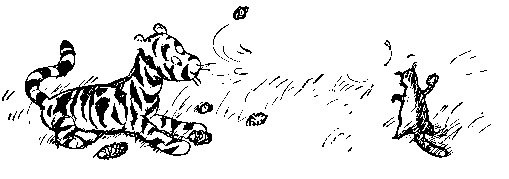

Алан Александр Милн. Винни Пух и Все-Все-Все
(c) A.A.Milne, 1926
(c) Б.Заходер, перевод, 1965
(пересказ Б.Заходера)
ГЛАВА ПЕРВАЯ.
В КОТОРОЙ МЫ ЗНАКОМИМСЯ С ВИННИ-ПУХОМ
И НЕСКОЛЬКИМИ ПЧЕЛАМИ
Ну вот, перед вами Винни-Пух.
Как видите, он спускается по лестнице вслед за своим
другом Кристофером Робином, головой вниз, пересчитывая
ступеньки собственным затылком: бум-бум-бум. Другого способа
сходить с лестницы он пока не знает. Иногда ему, правда,
кажется, что можно бы найти какой-то другой способ, если бы он
только мог на минутку перестать бумкать и как следует
сосредоточиться. Но увы -- сосредоточиться-то ему и некогда.
Как бы то ни было, вот он уже спустился и готов с вами
познакомиться.
-- Винни-Пух. Очень приятно!
Вас, вероятно, удивляет, почему его так странно зовут, а
если вы знаете английский, то вы удивитесь еще больше.
Это необыкновенное имя подарил ему Кристофер Робин. Надо
вам сказать, что когда-то Кристофер Робин был знаком с одним
лебедем на пруду, которого он звал Пухом. Для лебедя это было
очень подходящее имя, потому что если ты зовешь лебедя
громко:"Пу-ух! Пу-ух!"-- а он не откликается, то ты всегда
можешь сделать вид, что ты просто понарошку стрелял; а если ты
звал его тихо, то все подумают, что ты просто подул себе на
нос. Лебедь потом куда-то делся, а имя осталось, и Кристофер
Робин решил отдать его своему медвежонку, чтобы оно не пропало
зря.
А Винни -- так звали самую лучшую, самую добрую медведицу
в зоологическом саду, которую очень-очень любил Кристофер
Робин. А она очень-очень любила его. Ее ли назвали Винни в
честь Пуха, или Пуха назвали в ее честь -- теперь уже никто не
знает, даже папа Кристофера Робина. Когда-то он знал, а теперь
забыл.
Словом, теперь мишку зовут Винни-Пух, и вы знаете почему.
Иногда Винни-Пух любит вечерком во что-нибудь поиграть, а
иногда, особенно когда папа дома, он больше любит тихонько
посидеть у огня и послушать какую-нибудь интересную сказку.
В этот вечер...
-- Папа, как насчет сказки?-- спросил Кристофер Робин.
-- Что насчет сказки?-- спросил папа.
-- Ты не мог бы рассказать Винни-Пуху сказочку? Ему очень
хочется!
-- Может быть, и мог бы,-- сказал папа.-- А какую ему
хочется и про кого?
-- Интересную, и про него, конечно. Он ведь у нас ТАКОЙ
медвежонок!
-- Понимаю.-- сказал папа.
-- Так, пожалуйста, папочка, расскажи!
-- Попробую,-- сказал папа.
И он попробовал.
Давным-давно -- кажется, в прошлую пятницу -- Винни-Пух
жил в лесу один-одинешенек, под именем Сандерс.
-- Что значит "жил под именем"?-- немедленно спросил
Кристофер Робин.
-- Это значит, что на дощечке над дверью было золотыми
буквами написано "Мистер Сандерс", а он под ней жил.
-- Он, наверно, и сам этого не понимал,-- сказал Кристофер
Робин.
-- Зато теперь понял,-- проворчал кто-то басом.
-- Тогда я буду продолжать,-- сказал папа.
Вот однажды, гуляя по лесу, Пух вышел на полянку. На
полянке рос высокий-превысокий дуб, а на самой верхушке этого
дуба кто-то громко жужжал: жжжжжжж...
Винни-Пух сел на траву под деревом, обхватил голову лапами
и стал думать.
Сначала он подумал так: "Это-- жжжжжж-- неспроста! Зря
никто жужжать не станет. Само дерево жужжать не может. Значит,
тут кто-то жужжит. А зачем тебе жужжать, если ты -- не пчела?
По-моему, так! "
Потом он еще подумал-подумал и сказал про себя: "А зачем
на свете пчелы? Для того, чтобы делать мед! По-моему, так!"
Тут он поднялся и сказал:
-- А зачем на свете мед? Для того, чтобы я его ел!
По-моему, так, а не иначе!
И с этими словами он полез на дерево.
Он лез, и лез, и все лез, и по дороге он пел про себя
песенку, которую сам тут же сочинил. Вот какую:
Мишка очень любит мед!
Почему? Кто поймет?
В самом деле, почему
Мед так нравится ему?
Вот он влез еще немножко повыше... и еще немножко... и еще
совсем-совсем немножко повыше... И тут ему пришла на ум другая
песенка-пыхтелка:
Если б мишки были пчелами,
То они бы нипочем
Никогда и не подумали
Так высоко строить дом;
И тогда (конечно, если бы
Пчелы-- это были мишки!)
Нам бы, мишкам, было незачем
Лазить на такие вышки!
По правде говоря, Пух уже порядком устал, поэтому Пыхтелка
получилась такая жалобная. Но ему осталось лезть уже
совсем-совсем-совсем немножко. Вот стоит только влезть на эту
веточку-- и...
ТРРАХ!
-- Мама!-- крикнул Пух, пролетев добрых три метра вниз и
чуть не задев носом о толстую ветку.
-- Эх, и зачем я только...-- пробормотал он, пролетев еще
метров пять.
-- Да ведь я не хотел сделать ничего пло...-- попытался он
объяснить, стукнувшись о следующую ветку и перевернувшись вверх
тормашками.
-- А все из-за того,-- признался он наконец, когда
перекувырнулся еще три раза, пожелал всего хорошего самым
нижним веткам и плавно приземлился в колючий-преколючий
терновый куст,-- все из-за того, что я слишком люблю мед!
Мама!..
Пух выкарабкался из тернового куста, вытащил из носа
колючки и снова задумался. И самым первым делом он подумал о
Кристофере Робине.
-- Обо мне?-- переспросил дрожащим от волнения голосом
Кристофер Робин, не смея верить такому счастью.
-- О тебе.
Кристофер Робин ничего не сказал, но глаза его становились
все больше и больше, а щеки все розовели и розовели.
Итак, Винни-Пух отправился к своему другу Кристоферу
Робину, который жил в том же лесу, в доме с зеленой дверью.
-- Доброе утро, Кристофер Робин!-- сказал Пух.
-- Доброе утро, Винни-Пух!-- сказал мальчик.
-- Интересно, нет ли у тебя случайно воздушного шара?
-- Воздушного шара?
-- Да, я как раз шел и думал: "Нет ли у Кристофера Робина
случайно воздушного шара?" Мне было просто интересно.
-- Зачем тебе понадобился воздушный шар?
Винни-Пух оглянулся и, убедившись, что никто не
подслушивает, прижал лапу к губам и сказал страшным шепотом:
-- Мед.
-- Что-о?
-- Мед!-- повторил Пух.
-- Кто же это ходит за медом с воздушными шарами?
-- Я хожу!-- сказал Пух.
Ну, а как раз накануне Кристофер Робин был на вечере у
своего друга Пятачка, и там всем гостям дарили воздушные
шарики. Кристоферу Робину достался большущий зеленый шар, а
одному из Родных и Знакомых Кролика приготовили
большой-пребольшой синий шар, но этот Родственник и Знакомый
его не взял, потому что сам он был еще такой маленький, что его
не взяли в гости, поэтому Кристоферу Робину пришлось, так и
быть, захватить с собой оба шара-- и зеленый и синий.
-- Какой тебе больше нравится?-- спросил Кристофер Робин.
Пух обхватил голову лапами и задумался глубоко-глубоко.
-- Вот какая история, -- сказал он. -- Если хочешь достать
мед-- главное дело в том, чтобы пчелы тебя не заметили. И вот,
значит, если шар будет зеленый, они могут подумать, что это
листик, и не заметят тебя, а если шар будет синий, они могут
подумать, что это просто кусочек неба, и тоже тебя не заметят.
Весь вопрос-- чему они скорее поверят?
-- А думаешь, они не заметят под шариком тебя?
-- Может, заметят, а может, и нет,-- сказал Винни-Пух.--
Разве знаешь, что пчелам в голову придет?-- Он подумал минутку
и добавил:-- Я притворюсь, как будто я маленькая черная тучка.
Тогда они не догадаются!
-- Тогда тебе лучше взять синий шарик,-- сказал Кристофер
Робин.
И вопрос был решен.
Друзья взяли с собой синий шар, Кристофер Робин, как
всегда (просто на всякий случай), захватил свое ружье, и оба
отправились в поход.
Винни-Пух первым делом подошел к одной знакомой луже и как
следует вывалялся в грязи, чтобы стать совсем-совсем черным,
как настоящая тучка. Потом они стали надувать шар, держа его
вдвоем за веревочку. И когда шар раздулся так, что казалось,
вот-вот лопнет, Кристофер Робин вдруг отпустил веревочку, и
Винни-Пух плавно взлетел в небо и остановился там-- как раз
напротив верхушки пчелиного дерева, только немного в стороне.
-- Ураааа!-- закричал Кристофер Робин.
-- Что, здорово?-- крикнул ему из поднебесья Винни-Пух.--
Ну, на кого я похож?
-- На медведя, который летит на воздушном шаре!
-- А на маленькую черную тучку разве не похож?-- тревожно
спросил Пух.
-- Не очень.
-- Ну ладно, может быть, отсюда больше похоже. А потом,
разве знаешь, что придет пчелам в голову!
К сожалению, ветра не было, и Пух повис в воздухе
совершенно неподвижно. Он мог чуять мед, он мог видеть мед, но
достать мед он, увы, никак не мог.
Спустя некоторое время он снова заговорил.
-- Кристофер Робин!-- крикнул он шепотом.
-- Чего?
-- По-моему, пчелы что-то подозревают!
-- Что именно?
-- Не знаю я. Но только, по-моему, они ведут себя
подозрительно!
-- Может, они думают, что ты хочешь утащить у них мед?
-- Может, и так. Разве знаешь, что пчелам в голову придет!
Вновь наступило недолгое молчание. И опять послышался
голос Пуха:
-- Кристофер Робин!
-- Что?
-- У тебя дома есть зонтик?
-- Кажется, есть.
-- Тогда я тебя прошу: принеси его сюда и ходи тут с ним
взад и вперед, а сам поглядывай все время на меня и
приговаривай: "Тц-тц-тц, похоже, что дождь собирается!" Я
думаю, тогда пчелы нам лучше поверят.
Ну, Кристофер Робин, конечно, рассмеялся про себя и
подумал: "Ах ты, глупенький мишка!"-- но вслух он этого не
сказал, потому что он очень любил Пуха.
И он отправился домой за зонтиком.
-- Наконец-то!-- крикнул Винни-Пух, как только Кристофер
Робин вернулся.-- А я уже начал беспокоиться. Я заметил, что
пчелы ведут себя совсем подозрительно!
-- Открыть зонтик или не надо?
-- Открыть, но только погоди минутку. Надо действовать
наверняка. Самое главное -- это обмануть пчелиную царицу. Тебе
ее оттуда видно?
-- Нет.
-- Жаль, жаль. Ну, тогда ты ходи с зонтиком и говори:
"Тц-тц-тц, похоже, что дождь собирается", а я буду петь
специальную Тучкину Песню-- такую, какую, наверно, поют все
тучки в небесах... Давай!
Кристофер Робин принялся расхаживать взад и вперед под
деревом и говорить, что, кажется, дождь собирается, а Винни-Пух
запел такую песню:
Я Тучка, Тучка, Тучка,
А вовсе не медведь,
Ах, как приятно Тучке
По небу лететь!
Ах, в синем-синем небе
Порядок и уют--
Поэтому все Тучки
Так весело поют!
Но пчелы, как ни странно, жужжали все подозрительнее и
подозрительнее. Многие из них даже вылетели из гнезда и стали
летать вокруг Тучки, когда она запела второй куплет песни. А
одна пчела вдруг на минутку присела на нос Тучки и сразу же
снова взлетела.
-- Кристофер -- ай! -- Робин! -- закричала Тучка.
-- Что?
-- Я думал, думал и наконец все понял. Это неправильные
пчелы!
-- Да ну?
-- Совершенно неправильные! И они, наверно, делают
неправильный мед, правда?
-- Ну да?
-- Да. Так что мне, скорей всего, лучше спуститься вниз.
-- А как?-- спросил Кристофер Робин.
Об этом Винни-Пух как раз еще и не подумал. Если он
выпустит из лап веревочку, он упадет и опять бумкнет. Эта мысль
ему не понравилась. Тогда он еще как следует подумал и потом
сказал:
-- Кристофер Робин, ты должен сбить шар из ружья. Ружье у
тебя с собой?
-- Понятно, с собой,-- сказал Кристофер Робин.-- Но если я
выстрелю в шарик, он же испортится!
-- А если ты не выстрелишь, тогда испорчусь я,-- сказал
Пух.
Конечно, тут Кристофер Робин сразу понял, как надо
поступить. Он очень тщательно прицелился в шарик и выстрелил.
-- Ой-ой-ой!-- вскрикнул Пух.
-- Разве я не попал? -- спросил Кристофер Робин.
-- Не то чтобы совсем не попал,-- сказал Пух,-- но только
не попал в шарик!
-- Прости, пожалуйста,-- сказал Кристофер Робин и
выстрелил снова.
На этот раз он не промахнулся. Воздух начал медленно
выходить из шарика, и Винни-Пух плавно опустился на землю.
Правда, лапки у него совсем одеревенели, оттого что ему
пришлось столько времени висеть, держась за веревочку. Целую
неделю после этого происшествия он не мог ими пошевелить, и они
так и торчали кверху. Если ему на нос садилась муха, ему
приходилось
сдувать ее: "Пухх! Пуххх!"
И, может быть -- хотя я в этом не уверен,-- может быть,
именно тогда-то его и назвали Пухом.
-- Сказке конец?-- спросил Кристофер Робин.
-- Конец этой сказке. А есть и другие.
-- Про Пуха и про меня?
-- И про Кролика, про Пятачка, и про всех остальных. Ты
сам разве не помнишь?
-- Помнить-то я помню, но когда хочу вспомнить, то
забываю...
-- Ну, например, однажды Пух и Пятачок решили поймать
Слонопотама...
-- А поймали они его?
-- Нет.
-- Где им! Ведь Пух совсем глупенький. А я его поймал?
-- Ну, услышишь-- узнаешь.
Кристофер Робин кивнул.
-- Понимаешь, папа, я-то все помню, а вот Пух забыл, и ему
очень-очень интересно послушать опять. Ведь это будет настоящая
сказка, а не просто так... вспоминание.
-- Вот и я так думаю.
Кристофер Робин глубоко вздохнул, взял медвежонка за
заднюю лапу и поплелся к двери, волоча его за собой. У порога
он обернулся и сказал:
-- Ты придешь посмотреть, как я купаюсь?
-- Наверно,-- сказал папа.
-- А ему не очень было больно, когда я попал в него из
ружья?
-- Ни капельки,-- сказал папа.
Мальчик кивнул и вышел, и через минуту папа услышал, как
Винни-Пух поднимается по лесенке: бум-бум-бум.
ГЛАВА ВТОРАЯ.
В КОТОРОЙ ВИННИ-ПУХ ПОШЕЛ В ГОСТИ,
А ПОПАЛ В БЕЗВЫХОДНОЕ ПОЛОЖЕНИЕ
Как-то днем известный своим друзьям, а значит, теперь и
вам, Винни-Пух (кстати, иногда для краткости его звали просто
Пух) не спеша прогуливался по Лесу с довольно важным видом,
ворча себе под нос новую песенку.
Ему было чем гордиться-- ведь эту песенку-ворчалку он сам
сочинил только сегодня утром, занимаясь, как обычно, утренней
гимнастикой перед зеркалом. Надо вам сказать, что Винни-Пух
очень хотел похудеть и потому старательно занимался
гимнастикой. Он поднимался на носки, вытягивался изо всех сил и
в это время пел так:
-- Тара-тара-тара-ра!
А потом, когда он наклонялся, стараясь дотянуться
передними лапками до носков, он пел так:
-- Тара-тара-ой, караул, трам-пам-па!
Ну, вот так и сочинилась песенка-ворчалка, и после
завтрака Винни все время повторял ее про себя, все ворчал и
ворчал, пока не выучил ее всю наизусть. Теперь он знал ее всю
от начала до конца. Слова в этой Ворчалке были приблизительно
такие:
Тара-тара-тара-ра !
Трам-пам-пам-тарарам-пам-па!
Тири-тири-тири-ри,
Трам-пам-пам-тиририм-пим-пи!
И вот, ворча себе под нос эту Ворчалку и размышляя-- а
размышлял Винни-Пух о том, что было бы, если бы он , Винни, был
не Винни-Пухом, а кем-нибудь совсем-совсем другим, - наш Винни
незаметно дошел до песчаного откоса, в котором была большая
дыра.
-- Ага! - сказал Пух. (Трам-пам-пам-тирирам-пам-па!) -
Если я что-нибудь в чем-нибудь понимаю, то дыра - это нора, а
нора - это Кролик, а Кролик - это подходящая компания, а
подходящая компания - это такая компания, где меня чем-нибудь
угостят и с удовольствием послушают мою Ворчалку. И все такое
прочее!
Тут он наклонился, сунул голову в нору и крикнул:
-- Эй! Кто-нибудь дома?
Вместо ответа послышалась какая-то возня, а потом снова
стало тихо.
-- Я спросил: "Эй! Кто-нибудь дома?"-- повторил Пух
громко-громко.
-- Нет!-- ответил чей-то голос.-- И незачем так орать,--
прибавил он,-- я и в первый раз прекрасно тебя понял.
-- Простите! -- сказал Винни-Пух.-- А что, совсем-совсем
никого нет дома?
-- Совсем-совсем никого!-- отвечал голос. Тут Винни-Пух
вытащил голову из норы и задумался.
Он подумал так: "Не может быть, чтобы там совсем-совсем
никого не было! Кто-то там все-таки есть-- ведь кто-нибудь
должен же был сказать: "Совсем-совсем никого!"
Поэтому он снова наклонился, сунул голову в отверстие норы
и сказал:
-- Слушай, Кролик, а это не ты?
-- Нет, не я!-- сказал Кролик совершенно не своим голосом.
-- А разве это не твой голос?
-- По-моему, нет,-- сказал Кролик.-- По-моему, он совсем,
ну ни капельки не похож! И не должен бытьпохож!
-- Вот как?-- сказал Пух.
Он снова вытащил голову наружу, еще раз задумался, а потом
опять сунул голову обратно и сказал:
-- Будьте так добры, скажите мне, пожалуйста, куда девался
Кролик?
-- Он пошел в гости к своему другу Винни-Пуху. Они,
знаешь, какие с ним друзья!
Тут Винни-Пух прямо охнул от удивления.
-- Так ведь это же я!-- сказал он.
-- Что значит "я"? "Я" бывают разные!
-- Это "я" значит: это я, Винни-Пух!
На этот раз удивился Кролик. Он удивился еще больше Винни.
-- А ты в этом уверен?-- спросил он.
-- Вполне, вполне уверен!-- сказал Винни-Пух.
-- Ну хорошо, тогда входи!
И Винни полез в нору. Он протискивался, протискивался,
протискивался и наконец очутился там.
-- Ты был совершенно прав,-- сказал Кролик, осмотрев его с
головы до ног.-- Это действительно ты! Здравствуй, очень рад
тебя видеть!
-- А ты думал, кто это?
-- Ну, я думал, мало ли кто это может быть! Сам знаешь,
тут, в Лесу нельзя пускать в дом кого попало! Осторожность
никогда не повредит. Ну ладно. А не пора ли чем-нибудь
подкрепиться?
Винни-Пух был всегда не прочь немного подкрепиться, в
особенности часов в одиннадцать утра , потому что в это время
завтрак уже давно окончился, а обед еще и не думал начинаться.
И, конечно, он страшно обрадовался, увидев, что Кролик достает
чашки и тарелки. А когда Кролик спросил "Тебе чего намазать --
меду или сгущенного молока?" -- Пух пришел в такой восторг, что
выпалил: "И того и другого!" Правда, спохватившись, он, чтобы
не показаться очень жадным, поскорее добавил: "А хлеба можно
вообще не давать!"
И тут он замолчал и долго-долго ничего не говорил, потому
что рот у него был ужасно занят.
А спустя долгое время, мурлыкая что-то сладким-сладким
голоском-- голос у него стал прямо-таки медовый!-- Пух встал
из-за стола, от всей души пожал Кролику лапу и сказал, что ему
пора идти.
-- Уже пора?-- вежливо спросил Кролик.
Нельзя ручаться, что он не подумал про себя: "Не очень-то
вежливо уходить из гостей сразу, как только ты наелся". Но
вслух он этого не сказал, потому что он был очень умный Кролик.
Вслух он спросил:
-- Уже пора?
-- Ну,-- замялся Пух,-- я мог бы побыть еще немного, если
бы ты... если бы у тебя...-- запинался он и при этом почему-то
не сводил глаз с буфета.
-- По правде говоря,-- сказал Кролик,-- я сам собирался
пойти погулять.
-- А-а, ну хорошо, тогда и я пойду. Всего хорошего.
-- Ну, всего хорошего, если ты больше ничего не хочешь.
-- А разве еще что-нибудь есть?-- с надеждой спросил Пух,
снова оживляясь.
Кролик заглянул во все кастрюли и банки и со вздохом
сказал:
-- Увы. совсем ничего не осталось!
-- Я так и думал,-- сочувственно сказал Пух, покачав
головой.-- Ну, до свиданья, мне пора идти.
И он полез из норы. Он изо всех сил тянул себя передними
лапками и изо всей мочи толкал себя задними лапками, и спустя
некоторое время на воле оказался его нос... потом уши... потом
передние лапы... потом плечи... а потом... А потом Винни-Пух
закричал:
-- Ай, спасите! Я лучше полезу назад!
Еще потом он закричал:
-- Ай, помогите! Нет, уж лучше вперед!
И, наконец, он завопил отчаянным голосом:
-- Ай-ай-ай, спасите-помогите! Не могу ни взад ни вперед!
Тем временем Кролик, который, как мы помним, собирался
пойти погулять, видя, что парадная дверь забита, выбежал наружу
черным ходом и, обежав кругом, подошел к Пуху.
-- Ты что-- застрял?-- спросил он.
-- Не-ет, я просто отдыхаю,-- ответил Пух, стараясь
говорить веселым голосом.-- Просто отдыхаю думаю кой о чем и
пою песенку...
-- Ну-ка, дай мне лапу,-- строго сказал Кролик.
Винни-Пух протянул ему лапу, и Кролик стал его тащить.
Он тащил и тащил, он тянул и тянул, пока Винни ну
закричал:
-- Ой-ой-ой! Больно!
-- Теперь все ясно,-- сказал Кролик,-- ты застрял
-- Все из-за того,-- сердито сказал Пух,-- что выход
слишком узкий!
-- Нет, все из-за того, что кто-то пожадничал!-- строго
сказал Кролик.-- За столом мне все время казалось, хотя из
вежливости я этого не говорил, что кто-то слишком много ест! И
я твердо знал, что этот "кто-то" -- не я! Делать нечего,
придется сбегать за Кристофером Робином.
Кристофер Робин, друг Винни-Пуха и Кролика, жил, как вы
помните, совсем в другом конце Леса. Но он сразу же прибежал на
помощь и, когда увидел переднюю половину Винни-Пуха, сказал:
"Ах ты, глупенький мой мишка!"-- таким ласковым голосом, что у
всех сразу стало легче на душе.
-- А я как раз начал думать,-- сказал Винни, слегка хлюпая
носом,-- что вдруг бедному Кролику уже никогда-никогда не
придется ходить через парадную дверь... Я бы тогда очень-очень
огорчился...
-- Я тоже,-- сказал Кролик.
-- Не придется ходить через парадную дверь?-- переспросил
Кристофер Робин.-- Почему? Пожалуй, придется...
-- Ну вот и хорошо,-- сказал Кролик.
-- Пожалуй, придется втолкнуть тебя в нору, если мы не
сможем тебя вытащить, -- закончил Кристофер Робин.
Тут Кролик задумчиво почесал за ухом и сказал,что ведь
если Винни-Пуха втолкнуть в нору, то он там останется насовсем.
И что хотя он, Кролик, всегда безумно рад видеть Винни-Пуха, но
все-таки, что ни говори, одним полагается жить на земле, а
другим под землей, и...
-- По-твоему, я теперь никогда-никогда не выйду на волю?
-- спросил Пух жалобно.
-- По-моему, если ты уже наполовину вылез, жаль
останавливаться на полпути,-- сказал
Кролик.
Кристофер Робин кивнул головой.
-- Выход один,-- сказал он,-- нужно подождать, пока ты
опять похудеешь.
-- А долго мне нужно худеть? -- испуганно спросил Пух.
-- Да так, с недельку.
-- Ой, да не могу же я торчать тут целую неделю!
-- Торчать-то ты как раз отлично можешь, глупенький мой
мишка. Вот вытащить тебя отсюда-- это дело похитрее!
-- Не горюй, мы будем читать тебе вслух!-- весело
воскликнул Кролик.-- Только бы снег не пошел... Да, вот еще
что,-- добавил он,-- ты, дружок, занял у меня почти всю
комнату... Можно, я буду вешать полотенца на твои задние ноги?
А то они торчат там совершенно зря, а из них выйдет чудесная
вешалка для полотенец!
-- Ой-ой-ой, це-е-лу-ю неделю!-- грустно сказал Пух.-- А
как же обедать?!
-- Обедать, дорогой мой, не придется! -- сказал Кристофер
Робин. -- Ведь ты должен скорей похудеть! Вот читать вслух--
это мы тебе обещаем!
Медвежонок хотел вздохнуть, но не смог-- настолько крепко
он застрял. Он уронил слезинку и сказал:
-- Ну, уж вы тогда хотя бы читайте мне какую-нибудь
удобоваримую книгу, которая может поддержать и утешить
несчастного медвежонка в безвыходном положении...
И вот целую неделю Кристофер Робин читал вслух именно
такую удобоваримую, то есть понятную и интересную, книжку возле
Северного Края Пуха, а Кролик вешал выстиранное белье на его
Южный Край... И тем временем Пух становился все тоньше, и
тоньше, и тоньше.
А когда неделя кончилась, Кристофер Робин сказал:
-- Пора!
Он ухватился за передние лапы Пуха, Кролик ухватился за
Кристофера Робина, а все Родные и Знакомые Кролика (их было
ужасно много!) ухвати.тись за Кролика и стали тащить изо всей
мочи.
И сперва Винни-Пух говорил одно слово:
-- Ой!
А потом другое слово:
-- Ох!
И вдруг-- совсем-совсем вдруг-- он сказал:
-- Хлоп!-- точь-в-точь как говорит пробка, когда она
вылетает из бутылки.
Тут Кристофер Робин, и Кролик, и все Родные и Знакомые
Кролика сразу полетели вверх тормашками! Получилась настоящая
куча мала.
А на верху этой кучи очутился Винни-Пух-- свободный!
Винни-Пух важно кивнул всем своим друзьям в знак
благодарности и с важным видом отправился гулять по Лесу,
напевая свою песенку. А Кристофер Робин посмотрел ему вслед и
ласково прошептал:
-- Ах ты, глупенький мой мишка!
ГЛАВА ТРЕТЬЯ.
В КОТОРОЙ ПУХ И ПЯТАЧОК ОТПРАВИЛИСЬ НА ОХОТУ
И ЧУТЬ-ЧУТЬ НЕ ПОЙМАЛИ БУКУ
Лучший друг Винни-Пуха, крошечный поросенок, которого
звали Пятачок, жил в большом-пребольшом доме, в
большом-пребольшом дереве. Дерево стояло в самой середине Леса,
дом был в самой середине дерева, а Пяточок жил в самой середине
дома. А рядом с домом стоял столбик, на котором была прибита
поломанная доска с надписью, и тот, кто умел немножко
читать, мог прочесть:
Посторонним В.
Больше никто ничего не мог прочесть, даже тот, кто умел
читать совсем хорошо.
Как-то Кристофер Робин спросил у Пятачка, что тут, на
доске, написано. Пятачок сразу же сказал, что тут написано имя
его дедушки и что эта доска с надписью-- их фамильная реликвия,
то есть семейная драгоценность.
Кристофер Робин сказал, что не может быть такого имени--
Посторонним В., а Пятачок ответил, что нет, может, нет, может,
потому что дедушку же так звали! И "В"-- это просто сокращение,
а полностью дедушку звали Посторонним Вилли, а это тоже
сокращение имени Вильям Посторонним.
-- У дедушки было два имени,-- пояснил он,-- специально на
тот случай, если он одно где-нибудь потеряет.
-- Подумаешь! У меня тоже два имени,-- сказал Кристофер
Робин.
-- Ну вот, что я говорил!-- сказал Пятачок.-- Значит, я
прав!
Был чудесный зимний день. Пятачок, разметавший снег у
дверей своего дома, поднял голову и увидел не кого иного, как
Винни-Пуха. Пух медленно шел куда-то, внимательно глядя себе
под ноги, и так глубоко задумался, что, когда Пятачок окликнул
его, он и не подумал остановиться.
-- Эй, Пух!-- закричал Пятачок.-- Здорово, Пух! Ты что там
делаешь?
-- Охочусь!-- сказал Пух.
-- Охотишься? На кого?
-- Выслеживаю кого-то!-- таинственно ответил Пух.
Пятачок подошел к нему поближе:
-- Выслеживаешь? Кого?
-- Вот как раз об этом я все время сам себя спрашиваю,--
сказал Пух.-- В этом весь вопрос: кто это?
-- А как ты думаешь, что ты ответишь на этот вопрос?
-- Придется подождать, пока я с ним встречусь,-- сказал
Винни-Пух.-- Погляди-ка сюда.-- Он показал на снег прямо перед
собой.-- Что ты тут видишь?
-- Следы,-- сказал Пятачок.-- .Отпечатки лап!-- Пятачок
даже взвизгнул от волнения.-- Ой, Пух! Ты думаешь... это...
это... страшный Бука?!
-- Может быть,-- сказал Пух.-- Иногда как будто он, а
иногда как будто и не он. По следам разве угадаешь?
Он замолчал и решительно зашагал вперед по следу, а
Пятачок, помедлив минутку-другую, побежал за ним.
Внезапно Винни-Пух остановился и нагнулся к земле.
-- В чем дело?-- спросил Пятачок.
-- Очень странная вещь,-- сказал медвежонок.-- Теперь тут,
кажется, стало два зверя. Вот к этому-- Неизвестно Кому--
подошел другой-- Неизвестно Кто, и они теперь гуляют вдвоем.
Знаешь чего, Пятачок? Может быть, ты пойдешь со мной, а то
вдруг это окажутся Злые Звери?
Пятачок мужественно почесал за ухом и сказал, что до
пятницы он совершенно свободен и с большим удовольствием пойдет
с Пухом, в особенности если там Настоящий Бука.
-- Ты хочешь сказать, если там два Настоящих Буки,--
уточнил Винни-Пух, а Пятачок сказал, что это все равно, ведь до
пятницы ему совершенно нечего делать.
И они пошли дальше вместе.
Следы шли вокруг маленькой ольховой рощицы... и, значит,
два Буки, если это были они, тоже шли вокруг рощицы, и,
понятно, Пух и Пятачок тоже пошли вокруг рощицы.
По пути Пятачок рассказывал Винни-Пуху интересные истории
из жизни своего дедушки Посторонним В. Например, как этот
дедушка лечился от ревматизма после охоты и как он на склоне
лет начал страдать одышкой, и всякие другие занятные вещи.
А Пух все думал, как же этот дедушка выглядит. И ему
пришло в голову, что вдруг они сейчас охотятся как раз на двух
дедушек, и интересно, если они поймают этих дедушек, можно ли
будет взять хоть одного домой и держать его у себя, и что,
интересно, скажет по этому поводу Кристофер Робин.
А следы все шли и шли перед ними...
Вдруг Винни-Пух снова остановился как вкопанный.
-- Смотри!-- закричал он шепотом и показал на снег.
-- Куда?-- тоже шепотом закричал Пятачок и подскочил от
страха. Но, чтобы показать, что он подскочил не от страха, а
просто так, он тут же подпрыгнул еще разика два, как будто ему
просто захотелось попрыгать.
-- Следы,-- сказал Пух.-- Появился третий зверь!
-- Пух,-- взвизгнул Пятачок,-- ты думаешь, это еще один
Бука?
-- Нет, не думаю,-- сказал Пух,-- потому что следы совсем
другие... Это, может быть, два Буки, а один, скажем... скажем,
Бяка... Или же, наоборот, два Бяки, а один, скажем... скажем,
Бука... Надо идти за ними, ничего не поделаешь.
И они пошли дальше, начиная немного волноваться, потому
что ведь эти три Неизвестных Зверя могли оказаться Очень
Страшными Зверями. И Пятачку ужасно хотелось, чтобы его милый
Дедушка Посторонним В. был бы сейчас тут, а не где-то в
неизвестном месте... А Пух думал о том, как было бы хорошо,
если бы они вдруг, совсем-совсем случайно, встретили Кристофера
Робина,-- конечно, просто потому, что он, Пух, так любит
Кристофера Робина!..
И тут совершенно неожиданно Пух остановился в третий раз и
облизал кончик своего носа, потому что ему вдруг стало страшно
жарко. Перед ними были следы четырех зверей!
-- Гляди, гляди, Пятачок! Видишь? Стало три Буки и один
Бяка! Еще один Бука прибавился!..
Да, по-видимому, так и было! Следы, правда, немного
путались и перекрещивались друг с другом, но, совершенно
несомненно, это были следы четырех комплектов лап.
-- Знаешь что?-- сказал Пятачок, в свою очередь, облизав
кончик носа и убедившись, что это очень мало помогает.-- Знаешь
что? По-моему, я что-то вспомнил. Да, да! Я вспомнил об одном
деле, которое я забыл сделать вчера, а завтра уже не успею... В
общем, мне нужно скорее пойти домой и сделать это дело.
-- Давай сделаем это после обеда,-- сказал Пух,-- я тебе
помогу.
-- Да, понимаешь, это не такое дело, которое можно сделать
после обеда,-- поскорее сказал Пятачок.-- Это такое специальное
утреннее дело. Его обязательно надо сделать утром, лучше всего
часов в... Который час, ты говорил?
-- Часов двенадцать,-- сказал Пух, посмотрев на солнце.
-- Вот, вот, как ты сам сказал, часов в двенадцать.
Точнее, от двенадцати до пяти минут первого! Т ак что ты уж на
меня не обижайся, а я... Ой, мама! Кто там?
Пух посмотрел на небо, а потом, снова услышав чей-то
свист, взглянул на большой дуб и увидел кого-то на ветке.
-- Да это же Кристофер Робин!-- сказал он.
-- А-а, ну тогда все в порядке,-- сказал Пятачок,-- с ним
тебя никто не тронет. До свиданья!
И он побежал домой что было духу, ужасно довольный тем,
что скоро окажется в полной безопасности.
Кристофер Робин не спеша слез с дерева.
-- Глупенький мой мишка,-- сказал он,-- чем это ты там
занимался? Я смотрю, сначала ты один обошел два раза вокруг
этой рощицы, потом Пятачок побежал за тобой, и вы стали ходить
вдвоем... Сейчас, по-моему, вы собирались обойти ее в четвертый
раз по своим собственным следам!..
-- Минутку,-- сказал Пух, подняв лапу.
Он присел на корточки и задумался-- глубоко-глубоко. Потом
он приложил свою лапу к одному следу... Потом он два раза
почесал за ухом и поднялся.
-- Н-да...-- сказал он.-- Теперь я понял,-- добавил он.--
Я даже не знал, что я такой глупый простофиля!-- сказал
Винни-Пух.-- Я самый бестолковый медвежонок на свете!
-- Что ты! Ты самый лучший медвежонок на свете!-- утешил
его Кристофер Робин.
-- Правда?-- спросил Пух. Он заметно утешился. И вдруг он
совсем просиял:-- Что ни говори, а уже пора обедать,-- сказал
он. И он пошел домой обедать.
ГЛАВА ЧЕТВЕРТАЯ.
В КОТОРОЙ ИА-ИА ТЕРЯЕТ ХВОСТ, А ПУХ НАХОДИТ
Старый серый ослик Иа-Иа стоял одинодинешенек в заросшем
чертополохом уголке Леса.широко расставив передние ноги и
свесив голову набок, и думал о Серьезных Вещах. Иногда он
грустно думал: "Почему?", а иногда: "По какой причине?", а
иногда он думал даже так: "Какой же отсюда следует вывод?" И
неудивительно, что порой он вообще переставал понимать, о чем
же он, собственно, думает.
Поэтому, сказать вам по правде, услышав тяжелые шаги
Винни-Пуха, Иа очень обрадовался, что может на минутку
перестать думать и просто поздороваться.
-- Как самочувствие?-- по обыкновению уныло спросил он.
-- А как твое?-- спросил Винни-Пух.
Иа покачал головой.
-- Не очень как!-- сказал он.-- Или даже совсем никак. Мне
кажется, я уже очень давно не чувствовал себя как.
-- Ай-ай-ай,-- сказал Пух,-- очень грустно! Дай-ка я на
тебя посмотрю.
Иа-Иа продолжал стоять, понуро глядя в землю, и Винни-Пух
обошел вокруг него.
-- Ой, что это случилось с твоим хвостом?-- спросил он
удивленно.
-- А что с ним случилось?-- сказал Иа-Иа.
-- Его нет!
-- Ты не ошибся?
-- Хвост или есть, или его нет. По-моему, тут нельзя
ошибиться. А твоего хвоста нет.
-- А что же тогда там есть?
-- Ничего.
-- Ну-ка, посмотрим,-- сазал Иа-Иа.
И он медленнио повернулся к тому месту, где недавно был
его хвост; затем, заметив, что ему никак не удается его
догнать, он стал поворачиваться в обратную сторону, пока не
вернулся туда, откуда начал, а тогда он опустил голову и
посмотрел снизу и наконец сказал, глубоко и печально вздыхая:
-- Кажется, ты прав.
-- Конечно, я прав,-- сказал Пух.
-- Это вполне естественно,-- грустно сказал Иа-Иа.--
Теперь все понятно. Удивляться не приходится.
-- Ты, наверно, его где-нибудь позабыл,-- сказал
Винни-Пух.
-- Наверно, его кто-нибудь утащил...-- сказал Иа-Иа.--
Чего от них ждать! -- добавил он после большой паузы.
Пух чувствовал, что он должен сказать что-нибудь полезное,
но не мог придумать, что именно. И он решил вместо этого
сделать что-нибудь полезное.
-- Иа-Иа,-- торжественно произнес он,-- я, Винни-Пух,
обещаю тебе найти твой хвост.
-- Спасибо, Пух,-- сказал Иа.-- Ты настоящий друг. Не то
что некоторые!
И Винни-Пух отправился на поиски хвоста.
Он вышел в путь чудесным весенним утром. Маленькие
прозрачные облачка весело играли на синем небе. Они то набегали
на солнышко, словно хотели его закрыть, то поскорее убегали,
чтобы дать и другим побаловаться.
А солнце весело светило, не обращая на них никакого
внимания, и сосна, которая носила свои иголки круглый год не
снимая, казалась старой и потрепанной рядом с березками,
надевшими новые зеленые кружева. Винни шагал мимо сосен и елок,
шагал по склонам, заросшим можжевельником и репейником, шагал
по крутым берегам ручьев и речек, шагал среди груд камней и
снова среди зарослей, и вот наконец, усталый и голодный, он
вошел в Дремучий
Лес, потому что именно там, в Дремучем Лесу, жила Сова.
"А если кто-нибудь что-нибудь о чем-нибудь знает,-- сказал
медвежонок про себя,-- то это, конечно, Сова. Или я не
Винни-Пух,-- сказал он.-- А я-- он,-- добавил Винни-Пух.--
Значит, все в порядке! "
Сова жила в великолепном замке "Каштаны". Да, это был не
дом, а настоящий замок. Во всяком случае, так казалось
медвежонку, потому что на двери замка был и звонок с кнопкой, и
колокольчик со шнурком. Под звонком было прибито объявление:
ПРОШУ НАЖАТЬ ЭСЛИ НЕ АТКРЫВАЮТ
А под колокольчиком другое объявление:
ПРОШУ ПАДЕРГАТЬ ЭСЛИ НЕ АТКРЫВАЮТ
Оба эти объявления написал Кристофер Робин, который один
во всем Лесу умел писать. Даже Сова, хотя она была очень-очень
умная и умела читать и даже подписывать свое имя -- С а в а, и
то не сумела бы правильно написать такие трудные слова.
Винни-Пух внимательно прочел оба объявления, сначала слева
направо, а потом-- на тот случай, если он что-нибудь
пропустил,-- справа налево.
Потом, для верности, он нажал кнопку звонка и постучал по
ней, а потом он подергал шнурок колокольчика и крикнул очень
громким голосом:
-- Сова! Открывай! Пришел Медведь.
Дверь открылась, и Сова выглянула наружу.
-- Здравствуй, Пух,-- сказала она.-- Какие новости?
-- Грустные и ужасные,-- сказал Пух,-- потому что Иа-Иа,
мой старый друг, потерял свой хвост, и он очень убивается о
нем. Будь так добра, скажи мне, пожалуйста, как мне его найти?
-- Ну,-- сказала Сова,-- обычная процедура в таких случаях
нижеследующая...
-- Что значит Бычья Цедура?-- сказал Пух.-- Ты не забывай,
что у меня в голове опилки и длинные слова меня только
огорчают.
-- Ну, это означает то, что надо сделать.
-- Пока она означает это, я не возражаю,-- смиренно сказал
Пух.
-- А сделать нужно следующее: во-первых, сообщи в прессу.
Потом...
-- Будь здорова,-- сказал Пух, подняв лапу.-- Так что мы
должны сделать с этой... как ты сказала? Ты чихнула, когда
собиралась сказать.
-- Я не чихала.
-- Нет, Сова, ты чихнула.
-- Прости, пожалуйста, Пух, но я не чихала. Нельзя же
чихнуть и не знать, что ты чихнул.
-- Ну и нельзя знать, что кто-то чихнул, когда никто не
чихал.
-- Я начала говорить: сперва сообщи...
-- Ну вот ты опять! Будь здорова,-- грустно сказал
Винни-Пух.
-- Сообщи в печать,-- очень громко и внятно сказала
Сова.-- Дай в газету объявление и пообещай награду. Надо
написать, что мы дадим что-нибудь хорошенькое тому, кто найдет
хвост Иа-Иа.
-- Понятно, понятно, -- сказал Пух, кивая головой. --
Кстати, насчет "чего-нибудь хорошенького",-- продолжал он
сонно,-- я обычно как раз в это время не прочь бы чем-нибудь
хорошенько подкре...-- И он покосился на буфет, стоявший в углу
комнаты Совы.-- Скажем, ложечкой сгущенного молока или еще
чем-нибудь, например, одним глоточком меду...
-- Ну вот,-- сказала Сова,-- мы, значит, напишем наше
объявление, и его расклеят по всему Лесу.
"Ложечка меду,-- пробормотал медвежонок про себя, --
или... или уж нет, на худой конец".
И он глубоко вздохнул и стал очень стараться слушать то,
что говорила Сова.
А Сова говорила и говорила какие-то ужасно длинные слова,
и слова эти становились все длиннее и длиннее... Наконец она
вернулась туда, откуда начала, и стала объяснять, что написать
это объявление должен Кристофер Робин.
-- Это ведь он написал объявления на моей двери. Ты их
видел, Пух?
Пух уже довольно давно говорил по очереди то "да", то
"нет" на все, что бы ни сказала Сова. И так как в последний раз
он говорил "да, да", то на этот раз он сказал: "Нет, нет,
никогда!"-- хотя не имел никакого понятия, о чем идет речь.
-- Как, ты их не видел?-- спросила Сова, явно
удивившись.-- Пойдем посмотрим на них.
Они вышли наружу, и Пух посмотрел на звонок и на
объявление под ним и взглянул на колокольчик и шнурок, который
шел от него, и чем больше он смотрел на шнурок колокольчика,
тем больше он чувствовал, что он где-то видел что-то очень
похожее... Где-то совсем в другом месте, когда-то раньше...
-- Красивый шнурок, правда?-- сказала Сова.
Пух кивнул.
-- Он мне что-то напоминает,-- сказал он,-- но я не могу
вспомнить что. Где ты его взяла?
-- Я как-то шла по лесу, а он висел на кустике, и я сперва
подумала, что там кто-нибудь живет, и позвонила, и ничего не
случилось, а потом я позвонила очень громко, и он оторвался, и,
так как он, по-моему, был никому не нужен, я взяла его домой
и...
-- Сова,-- сказал Пух торжественно,-- он кому-то очень
нужен.
-- Кому?
-- Иа. Моему дорогому другу Иа-Иа. Он... он очень любил
его.
-- Любил его?
-- Был привязан к нему,-- грустно сказал Винни-Пух.
С этими словами он снял шнурок с крючка и отнес его
хозяину, то есть Иа, а когда Кристофер Робин прибил хвост на
место, Иа-Иа принялся носиться по Лесу, с таким восторгом
размахивая хвостом, что у Винни-Пуха защекотало во всем теле и
ему пришлось поскорее побежать домой и немножко подкрепиться.
Спустя полчаса, утирая губы, он гордо спел:
Кто нашел хвост?
Я, Винни-Пух!
Около двух
(Только по-правдашнему было около одиннадцати!)
Я нашел хвост!
ГЛАВА ПЯТАЯ.
В КОТОРОЙ ПЯТАЧОК ВСТРЕЧАЕТ СЛОНОПОТАМА
Однажды, когда Кристофер Робин, Винни-Пух и Пятачок сидели
и мирно беседовали, Кристофер Робин проглотил то, что у него
было во рту, и сказал, как будто между прочим:
-- Знаешь, Пятачок, а я сегодня видел Слонопотама.
-- А чего он делал?-- спросил Пятачок.
Можно было подумать, что он ни капельки не удивился!
-- Ну, просто слонялся,-- сказал Кристофер Робин,--
По-моему, он меня не видел.
-- Я тоже одного как-то видел,-- сказал Пятачок.--
По-моему, это был он. А может, и нет.
-- Я тоже,-- сказал Пух, недоумевая. "Интересно, кто же
это такой Слонопотам?"-- подумал он.
-- Их не часто встретишь,-- небрежно сказал Кристофер
Робин.
-- Особенно сейчас,-- сказал Пятачок.
-- Особенно в это время года,-- сказал Пух.
Потом они заговорили о чем-то другом, и вскоре пришла пора
Пуху и Пятачку итти домой. Они пошли вместе. Сперва, пока они
плелись по тропинке на краю Дремучего Леса, оба молчали; но
когда они дошли до речки и стали помогать друг другу
перебираться по камушкам, а потом бок о бок пошли по узкой
тропке между кустов, у них завязался Очень Умный Разговор.
Пятачок говорил: "Понимаешь, Пух, что я хочу сказать?" А Пух
говорил: "Я и сам так, Пятачок, думаю". Пятачок говорил: "Но с
другой стороны, Пух, мы не должны забывать". А Пух отвечал:
"Совершенно верно, Пятачок. Не понимаю, как я мог упустить это
из виду".
И вот, как раз когда они дошли до Шести Сосен, Пух
оглянулся кругом и, убедившись, что никто не подслушивает,
сказал весьма торжественным тоном:
-- Пятачок, я что-то придумал.
-- Что ты придумал, Пух?
-- Я решил поймать Слонопотама.
Сказав это, Винни-Пух несколько раз подряд кивнул головой.
Он ожидал, что Пятачок скажет: "Ну да!", или: "Да ну?", или:
"Пух, не может быть!", или сделает какое-нибудь другое полезное
замечание в этом духе, но Пятачок ничего не сказал.
По правде говоря, Пятачок огорчился, что не ему первому
пришла в голову эта замечательная мысль.
-- Я думаю поймать его,-- сказал Пух, подождав еще
немножко.-- в западню. И это должна быть очень Хитрая Западня,
так что тебе придется помочь мне, Пятачок.
-- Пух,-- сказал Пятачок, немедленно утешившись и
почувствовав себя вполне счастливым,-- я тебе, конечно,
помогу.-- А потом он сказал:-- А как мы это сделаем?
И Пух сказал:
-- В этом-то вся соль: как?
Они сели, чтобы обдумать свое предприятие.
Первое, что пришло Пуху в голову,-- вырыть Очень Глубокую
Яму, а потом Слонопотам пойдет гулять и упадет в эту яму, и...
-- Почему?-- спросил Пятачок.
-- Что-- почему?-- сказал Пух.
-- Почему он туда упадет?
Пух потер нос лапой и сказал, что, ну, наверно, Слонопотам
будет гулять, мурлыкая себе под нос песенку и поглядывая на
небо -- не пойдет ли дождик, вот он и не заметит Очень Глубокой
Ямы, пока не полетит в нее, а тогда ведь будет уже поздно.
Пятачок сказал, что это, конечно, очень хорошая Западня,
но что, если дождик уже будет идти?
Пух опять почесал свой нос и сказал, что он об этом не
подумал. Но тут же просиял и сказал, что, если дождь уже будет
идти, Слонопотам может посмотреть на небо, чтобы узнать, скоро
ли дождь перестанет, вот он опять и не заметит Очень Глубокой
Ямы, пока не полетит в нее!.. А ведь тогда будет уже поздно.
Пятачок сказал, что теперь все ясно, и, по его мнению, это
очень-очень Хитрая Западня.
Пух был весьма польщен, услышав это, и почувствовал, что
Слонопотам уже все равно что пойман.
-- Но,-- сказал он,-- осталось обдумать только одно, а
именно: где надо выкопать Очень Глубокую Яму?
Пятачок сказал, что лучше всего выкопать яму перед самым
носом Слонопотама, как раз перед тем, как он в нее упадет.
-- Но ведь он тогда увидит, как мы ее будем копать,--
сказал Пух.
-- Не увидит! Ведь он будет смотреть на небо!
-- А вдруг он случайно посмотрит вниз?-- сказал Пух.--
Тогда он может обо всем догадаться...
Он долго размышлял, а потом грустно добавил:
-- Да, это не так просто, как я думал. Наверно, поэтому
Слонопотамы так редко попадаются...
-- Наверно, поэтому,-- согласился Пятачок.
Они вздохнули и поднялись, а потом, вытащив друг из друга
немножко колючек, опять сели, и все это время Пух говорил себе:
"Эх, эх, если бы только я умел думать!.." Винни в глубине души
был уверен, что поймать Слонопотама можно, надо только, чтобы у
охотника в голове был настоящий ум, а не опилки...
-- Предположим,-- сказал он Пятачку,-- ты бы хотел поймать
меня. Как бы ты за это взялся?
-- Ну,-- сказал Пятачок,-- я бы вот как сделал: я бы
сделал западню, и я бы поставил туда приманку-- горшок меду. Ты
бы его учуял и полез бы за ним, и...
-- Да, я бы полез за ним туда,-- взволнованно сказал
Пух,-- только очень осторожно, чтобы не ушибиться, и я бы взял
этот горшок с медом, и сперва я бы облизал только края, как
будто там больше меда нет, понимаешь, а там отошел бы в сторону
и подумал о нем немножко, а потом я бы вернулся и начал бы
лизать с самой середины горшка, а потом...
-- Ну ладно, успокойся, успокойся. Главное -- ты был бы в
ловушке, и я бы мог тебя поймать. Так вот, первым делом надо
подумать о том, что любят Слонопотамы. По-моему, желуди, верно?
У нас сейчас их очень много... Эй, Пух, очнись!
Пух, который тем временем совсем размечтался о меде,
очнулся и даже подскочил и сказал, что мед гораздо приманочней,
чем желуди. Пятачок был другого мнения, и они чуть было не
поспорили об этом; но Пятачок вовремя сообразил, что если они
будут класть в ловушку желуди, то желуди придется собирать ему,
Пятачку, а если они положат туда мед, то его достанет Пух.
Поэтому он сказал: "Очень хорошо, значит, мед!"-- в тот самый
момент, когда Пух тоже об этом подумал и собирался сказать:
"Очень хорошо, значит, желуди".
-- Значит, мед,-- повторил Пятачок для верности.-- Я
выкопаю яму, а ты сходишь за медом.
-- Отлично,-- сказал Пух и побрел домой.
Придя домой, он подошел к буфету, влез на стул и достал с
верхней полки большой-пребольшой горшок меду. На горшке было
написано "М и о т", но, чтобы удостовериться окончательно,
Винни-Пух снял с него бумажную крышку и заглянул внутрь. Там
действительно был мед.
-- Но ручаться нельзя,-- сказал Пух.-- Я помню, мой дядя
как-то говорил, что он однажды видел сыр точь-в-точь такого же
цвета.
Винни сунул в горшок мордочку и как следует лизнул.
-- Да,-- сказал он,-- это он. Сомневаться не приходится.
Полный горшок меду. Конечно, если только никто не положил туда
на дно сыру-- просто так, шутки ради. Может быть, мне лучше
немного углубиться... на случай... На тот случай, если
Слонопотамы не любят сыру... как и я... Ах!-- И он глубоко
вздохнул.-- Нет, я не ошибся. Чистый мед сверху донизу!
Окончательно убедившись в этом, Пух понес горшок к
западне, и Пятачок, выглянув из Очень Глубокой Ямы, спросил:
"Принес?" А Пух сказал: "Да, но он не совсем полный". Пятачок
заглянул в горшок и спросил: "Это все, что у тебя осталось?" А
Пух сказал: "Да", потому что это была правда.
И вот Пятачок поставил горшок на дно Ямы, вылез оттуда, и
они пошли домой.
-- Ну, Пух, спокойной ночи,-- сказал Пятачок, когда они
подошли к дому Пуха.-- А завтра утром в шесть часов мы
встретимся у Сосен и посмотрим, сколько мы наловили
Слонопотамов.
-- До шести, Пятачок. А веревка у тебя найдется?
-- Нет. А зачем тебе понадобилась веревка?
-- Чтобы отвести их домой.
-- Ох... А я думал, Слонопотамы идут на свист.
-- Некоторые идут, а некоторые нет. За Слонопотамов
ручаться нельзя. Ну, спокойной ночи!
-- Спокойной ночи!
И Пятачок побежал рысцой к своему дому, возле которого
была доска с надписью "Посторонним В.", а Винни-Пух лег спать.
Спустя несколько часов, когда ночь уже потихоньку
убиралась восвояси, Пух внезапно проснулся от какого-то
щемящего чувства. У него уже бывало раньше это щемящее чувство,
и он знал, что оно означает: ему хотелось есть.
Он поплелся к буфету, влез на стул, пошарил на верхней
полке и нашел там пустоту.
" Это странно,-- подумал он,-- я же знаю, что у меня там
был горшок меду. Полный горшок, полный медом до самых краев, и
на нем было написано "М и о т", чтобы я не ошибся. Очень, очень
странно".
И он начал расхаживать по комнате взад и вперед,
раздумывая, куда же мог деваться горшок, и ворча про себя
песенку-ворчалку. Вот какую:
Куда мой мед деваться мог?
Ведь был полнехонький горшок!
Он убежать никак не мог--
Ведь у него же нету ног!
Не мог уплыть он по реке
(Он без хвоста и плавников),
Не мог зарыться он в песке...
Не мог, а все же-- был таков!
Не мог уйти он в темный лес,
Не мог взлететь под небеса...
Не мог, а все-таки исчез!
Ну, это прямо чудеса!
Он проворчал эту песню три раза и внезапно все попомнил.
Он же поставил горшок в Хитрую Западню для Слонопотамов!
-- Ай-ай-ай!-- сказал Пух.-- Вот что получается, когда
чересчур заботишься о Слонопотамах!
И он снова лег в постель.
Но ему не спалось. Чем больше старался он уснуть, тем
меньше у него получалось. Он попробовал считать овец-- иногда
это очень неплохой способ,-- но это не помогало. Он попробовал
считать Слонопотамов, но это оказалось еще хуже, потому что
каждый Слонопотам, которого он считал, сразу кидался на Пухов
горшок с медом и все съедал дочиста! Несколько минут Пух лежал
и молча страдал, но когда пятьсот восемьдесят седьмой
Слонопотам облизал свои клыки и прорычал: "Очень неплохой мед,
пожалуй, лучшего я никогда не пробовал", Пух не выдержал. Он
скатился с кровати, выбежал из дому и помчался прямиком к Шести
Соснам.
Солнце еще нежилось в постели, но небо над Дремучим Лесом
слегка светилось, как бы говоря, что солнышко уже просыпается и
скоро вылезет из-под одеяла. В рассветных сумерках Сосны
казались грустными и одинокими; Очень Глубокая Яма казалась еще
глубже, чем была, а горшок с медом, стоявший на дне, был совсем
призрачным, словно тень. Но когда Пух подошел поближе, нос
сказал ему, что тут, конечно, мед, и язычок Пуха вылез наружу и
стал облизывать губы.
-- Жалко-жалко,-- сказал Пух, сунув нос в горшок,--
Слонопотам почти все съел!
Потом, подумав немножко, он добавил:
-- Ах нет, это я сам. Я позабыл.
К счастью, оказалось, что он съел не все. На самом донышке
горшка оставалось еще немножко меда, и Пух сунул голову в
горшок и начал лизать и лизать...
Тем временем Пятачок тоже проснулся. Проснувшись, он сразу
же сказал: "Ох". Потом, собравшись с духом, заявил: "Ну что
же!.. Придется",-- закончил он отважно. Но все поджилки у него
тряслись, потому что в ушах у него гремело страшное слово--
СЛОНОПОТАМ!
Какой он, этот Слонопотам?
Неужели очень злой?
Идет ли он на свист? И если идет, то з а ч е м ?..
Любит ли он поросят или нет?
И к а к он их любит?..
Если он ест поросят, то, может быть, он все-таки не тронет
поросенка, у которого есть дедушка по имени Посторонним В.?
Бедный Пятачок не знал, как ответить на все эти вопросы. А
ведь ему через какой-нибудь час предстояло впервые в жизни
встретиться с настоящим Слонопотамом!
Может быть, лучше притвориться, что заболела голова, и не
ходить к Шести Соснам? Но вдруг будет очень хорошая погода и
никакого Слонопотама в западне не окажется, а он, Пятачок, зря
проваляется все утро в постели?
Что же делать?
И тут ему пришла в голову хитрая мысль. Он пойдет сейчас
потихоньку к Шести Соснам, очень осторожно заглянет в западню и
посмотрит, есть там Слонопотам или нет. Если он там, то он,
Пятачок, вернется и ляжет в постель, а если нет, то он,
конечно, не ляжет!..
И Пятачок пошел. Сперва он думал, что, конечно, никакого
Слонопотама там не окажется; потом стал думать, что нет,
наверно, окажется; когда же он подходил к западне, он был в
этом совершенно уверен, потому что услышал, как тот
слонопотамит вовсю!
-- Ой-ой-ой! -- сказал Пятачок. Ему очень захотелось
убежать. Но он не мог. Раз он уже подошел так близко, нужно
хоть одним глазком глянуть на живого Слонопотама. И вот он
осторожно подкрался сбоку к яме и заглянул туда...
А Винни-Пух все никак не мог вытащить голову из горшка с
медом. Чем больше он тряс головой, тем крепче сидел горшок.
Пух кричал: "Мама!", кричал: "Помогите!", кричал и просто:
"Ай-ай-ай", но все это не помогало. О пытался стукнуть горшком
обо что-нибудь, но, так как он не видел, обо что он стукает, и
это не помогало. Он пытался вылезти из западни, но. Так как он
не видел ничего, кроме горшка (да и тот не весь), и это не
получалось.
Совсем измучившись, он поднял голову (вместе с горшком) и
издал отчаянный, жалобный вопль...
И именно в этот момент Пятачок заглянул в яму.
-- Караул! Караул! -- закричал Пятачок. -- Слонопотам,
ужасный Слонопотам!!! -- И он помчался прочь, так что только
пятки засверкали, продолжая вопить:-- Караул! Слонасный
ужопотам! Караул! Потасный Слоноужам! Слоноул! Слоноул!
Карасный Потослонам!..
Он вопил и сверкал пятками, пока не добежал до дома
Кристофера Робина.
-- В чем дело, Пятачок?-- сказал Кристофер Робин,
натягивая штанишки.
-- Ккк-карапот,-- сказал Пятачок, который так запыхался,
что едва мог выговорить слово.-- Ужо...пото... Слонопотам!
-- Где?
-- Вон там,-- сказал Пятачок, махнув лапкой.
-- Какой он?
-- У-у-ужасный! С вот такой головищей! Ну пря-мо, прямо...
как... как не знаю что! Как горшок!
-- Ну,-- сказал Кристофер Робин, надевая ботинки,-- я
должен на него посмотреть. Пошли.
Конечно, вдвоем с Кристофером Робином Пятачок ничего не
боялся. И они пошли.
-- Слышишь, слышишь? Это он!-- сказал Пятачок испуганно,
когда они подошли поближе.
-- Что-то слышу,-- сказал Кристофер Робин.
Они слышали стук. Это бедный Винни, наконец, наткнулся на
какой-то корень и пытался разбить свой горшок.
-- Стой, дальше нельзя! -- сказал Пятачок, крепко стиснув
руку Кристофера Робина.-- Ой, как страшно!..
И вдруг Кристофер Робин покатился со смеху. Он хохотал и
хохотал... хохотал и хохотал... И пока он хохотал, голова
Слонопотама здорово ударилась о корень. Трах!-- горшок
разлетелся вдребезги. Бах!-- и появилась голова Винни-Пуха.
И тут наконец Пятачок понял, каким он был глупым Пятачком.
Ему стало так стыдно, что он стремглав помчался домой и лег в
постель с головной болью, и в это утро он почти окончательно
решил убежать из дому и стать моряком.
А Кристофер Робин и Пух отправились завтракать.
-- Мишка!-- сказал Кристофер Робин.-- Я тебя ужасно люблю!
-- А я-то!-- сказал Винни-Пух.
ГЛАВА ШЕСТАЯ.
В КОТОРОЙ У ИА-ИА БЫЛ ДЕНЬ РОЖДЕНИЯ,
А ПЯТАЧОК ЧУТЬ-ЧУТЬ НЕ УЛЕТЕЛ НА ЛУНУ
Иа-Иа-- старый серый ослик-- однажды стоял на берегу ручья
и понуро смотрел в воду на свое отражение.
-- Душераздирающее зрелище,-- сказал он наконец.-- Вот как
это называется-- душераздирающее зрелище.
Он повернулся и медленно побрел вдоль берега вниз по
течению. Пройдя метров двадцать, он перешел ручей вброд и так
же медленно побрел обратно по другому берегу. Напротив того
места, где он стоял сначала, Иа остановился и снова посмотрел в
воду.
-- Я так и думал,-- вздохнул он.-- С этой стороны ничуть
не лучше. Но всем наплевать. Никому нет дела. Душераздирающее
зрелище-- вот как это называется!
Тут сзади него в ольшанике раздался треск, и появился
Винни-Пух.
-- Доброе утро, Иа!-- сказал Пух.
-- Доброе утро, медвежонок Пух,-- уныло ответил Иа.-- Если
это утро доброе. В чем я лично сомневаюсь.
-- - Почему? Что случилось?
-- Ничего, медвежонок Пух, ничего особенного. Все же не
могут. А некоторым и не приходится. Тут ничего не попишешь.
-- Чего все не могут?-- переспросил Пух, потерев нос.
-- Веселиться. Петь, плясать и так далее. Под ореховым
кустом.
-- А-а, понятно...-- сказал Пух. Он глубоко задумался, а
потом спросил:-- Под каким ореховым кустом?
-- Под которым орешки каленые,-- уныло продолжал Иа-Иа.--
Хоровод, веселье и тому подобное. Я не жалуюсь, но так оно и
есть.
Пух уселся на большой камень и попытался что-нибудь
понять. Получилось что-то вроде загадки, а Пух был слабоват по
части загадок, поскольку в голове у него были опилки. И он на
всякий случай запел загадочную песенку:
ПРО СОРОК ПЯТОК
-- Вопрос мой прост и краток,--
Промолвил Носорог,--
Что лучше-- сорок пяток
Или пяток сорок?--
Увы, никто на это
Ответа
Дать не мог!
-- Вот-вот, правильно,-- сказал Иа-Иа.-- Пой, пой.
Трум-тум-тум-тирим-бум-бум. В лесу родилась палочка, в лесу она
росла. И много-много радости детишкам принесла. Веселись и
развлекайся.
-- Я веселюсь,-- сказал Пух.
-- Кое-кому удается,-- сказал Иа-Иа.
-- Да что такое случилось?-- спросил Пух.
-- А разве что-нибудь случилось?
-- Нет, но у тебя такой грустный вид.
-- Грустный? Отчего это мне быть грустным? Сегодня же мой
день рождения. Самый лучший день в году!
-- Твой день рождения?-- спросил Пух, ужасно удивленный.
-- Конечно. Разве ты не замечаешь? Посмотри на все эти
подарки.-- Иа-Иа помахал передней ногой из стороны в сторону.--
Посмотри на именинный пирог!
Пух посмотрел-- сначала направо, потом налево.
-- Подарки?-- сказал он.-- Именинный пирог? Где?
-- Разве ты их не видишь?
-- Нет,-- сказал Пух.
-- Я тоже,-- сказал Иа-Иа.-- Это шутка,-- объяснил он.--
Ха-ха.
Пух почесал в затылке, совсем сбитый с толку.
-- А сегодня правда твой день рождения? -- спросил он.
-- Правда.
-- Ох! Ну, поздравляю тебя и желаю много-много счастья в
этот день.
-- И я тебя поздравляю и желаю много-много счастья в этот
день, медвежонок Пух.
-- Но ведь сегодня не мой день рождения.
-- Нет, не твой, а мой.
-- А ты говоришь "желаю тебе счастья в этот день".
-- Ну и что же? Разве ты хочешь быть несчастным в мой день
рождения?
-- А, понятно,-- сказал Пух.
-- Хватит и того,-- сказал Иа-Иа, чуть не плача,-- хватит
и того, что я сам такой несчастный-- безподарков и без
именинного пирога, и вообще позабытый и позаброшенный, а уж
если все остальные будут несчастны...
Этого Винни-Пух уже не вынес.
-- Постой тут! -- крикнул он и со всех ног помчался домой.
Он почувствовал, что должен немедленно преподнести бедному
ослику хоть что-нибудь, а потом у него всегда будет время
подумать о Настоящем Подарке.
Возле своего дома он наткнулся на Пятачка, который прыгал
у двери, стараясь достать кнопку звонка.
-- Здравствуй, Пятачок,-- сказал Винни-Пух.
-- Здравствуй, Винни,-- сказал Пятачок.
-- Что это ты делаешь?
-- Я стараюсь позвонить,-- объяснил Пятачок.-- Я тут шел
мимо и...
-- Давай я тебе помогу,-- сказал Пух услужливо.Он подошел
к двери и нажал кнопку.-- А я только что видел Иа,-- начал
он.-- Бедный ослик ужасно расстроен, потому что у него сегодня
день рождения, а все о нем забыли, и он очень понурился-- ты
ведь знаешь, как он умеет,-- ну и вот он такой понурый, а я...
Да что же это нам никто не открывает-- заснули они все там, что
ли?-- И Пух снова позвонил.
-- Пух,-- сказал Пятачок.-- Это же твой собственный дом!
-- А-а, -- сказал Пух.-- Ну да, верно! Тогда давай войдем!
И они вошли в дом.
Пух первым делом подошел к буфету, чтобы удостовериться,
есть ли у него подходящий, не особенно большой горшочек с
медом. Горшочек оказался на месте, и Пух снял его с полки.
-- Я его отнесу Иа,-- объяснил он.-- В подарок. А ты что
ему думаешь подарить?
-- А можно, я тоже его подарю?-- спросил Пятачок.-- Как
будто от нас обоих.
-- Нет,-- сказал Пух.-- Это ты плохо придумал.
-- Ну, тогда ладно. Я подарю Иа воздушный шарик. У меня
остался один от праздника. Я сейчас за ним схожу, хорошо?
-- Вот это ты очень хорошо придумал, Пятачок! Ведь Иа
нужно развеселить. А с воздушным шариком кто хочешь
развеселится! Никто не может грустить, когда у него есть
воздушный шарик!
Ну, и Пятачок пустился рысцой домой, а Пух с горшочком
меду направился к ручью.
День был жаркий, а путь неблизкий, и, не пройдя и полпути,
Пух вдруг почувствовал какое-то странное щекотание. Сначала у
него защекотало в носу, потом в горле, а потом засосало под
ложечкой и так постепен-но дошло до самых пяток. Казалось,
словно кто-то внутри у него говорил: "Знаешь, Пух, сейчас самое
время чем-нибудь немножко..."
-- Ай-ай,-- сказал Пух,-- я и не знал, что уже так поздно!
Он сел на землю и снял крышку со своего горшка.
-- Как хорошо, что я взял его с собой,-- сказал он.--
Немало медведей в такой жаркий день и не подумали бы захватить
с собой то, чем можно немножко подкрепиться!..
-- А теперь подумаем,-- сказал он, в последний раз облизав
донышко горшка,-- подумаем, куда же это я собирался идти. Ах
да, к Иа.
Винни-Пух не спеша встал. И тут он вдруг все вспомнил. Он
же съел Подарок!
-- Ай-ай-ай! -- сказал Пух.-- Что мне делать? Я же должен
подарить ему что-нибудь! Ай-ай-ай-ай-ай!
Сперва он прямо не знал, что и думать. А потом он подумал:
"Все-таки это очень хорошенький горшочек, хотя в нем и нет
меду. Если я его как следует вымою и попрошу кого-нибудь
написать на нем: "Поздравляю с днем рождения", Иа сможет
держать в нем все, что хочешь. Это будет полезная вещь!"
И так как он в это время был недалеко от Дома Совы-- а все
в Лесу были уверены, что Сова прекрасно умеет писать,-- он
решил зайти к ней в гости.
-- Доброе утро, Сова!-- сказал Пух.
-- Доброе утро, Пух!-- ответила Сова.
-- Поздравляю тебя с днем рождения Иа-Иа,-- сказал Пух.
-- Вот как?-- удивилась Сова.
-- Да. А что ты ему думаешь подарить?
-- А ты что думаешь ему подарить?
-- Я несу ему в подарок Полезный Горшок, в котором можно
держать все, что хочешь,-- сказал Пух.-- И я хотел попросить
тебя...
-- Вот этот?-- спросила Сова, взяв горшок из лапок Пуха.
-- Да, и я хотел попросить тебя...
-- Тут когда-то держали мед,-- сказала Сова.
-- В нем можно что хочешь держать,-- серьезно сказал
Пух.-- Это очень, очень полезная вещь. И я хотел попросить
тебя...
-- Ты бы написал на нем: "Поздравляю с днем рождения".
-- Так вот об этом я и пришел тебя попросить! -- объяснил
наконец Пух.-- Потому что у меня правильнописание какое-то
хромое. Вообще-то оно хорошее правильнописание, но только
почему-то хромает и буквы опаздывают... на свои места. Ты
напишешь на нем: "Поздравляю с днем рождения"? Очень тебя
прошу!
-- Славный горшочек,-- сказала Сова, оглядев горшок со
всех сторон.-- А можно, я его тоже подарю? Пусть это будет наш
общий подарок.
-- Нет,-- сказал Пух.-- Это ты плоховато придумала. Давай
я лучше его сперва помою, а потом ты на нем все напишешь.
И вот он вымыл горшок и вытер его досуха, а Сова тем
временем мусолила кончик своего карандаша и думала, как же
пишется слово "Поздравляю".
-- Пух, а ты умеешь читать? -- спросила она не без тревоги
в голосе.-- Вот, например, у меня на двери висит объявление,
как звонить,-- это мне Кристофер Робин написал. Ты можешь его
прочесть?
-- Кристофер Робин сказал мне, что там написано, и тогда я
уж смог,-- ответил Пух.
-- Очень хорошо! Вот и я тоже скажу тебе, что тут на
горшке будет написано, и тогда ты сможешь прочитать!
И Сова начала писать... Вот что она написала:
"Про зря вля бля сдине мраш деня про зря бля бля вля!"
Пух с восхищением посмотрел на эту надпись.
-- Я тут написала: "Поздравляю с днем рождения",--
небрежно заметила Сова.
-- Вот это надпись так надпись!-- с уважением сказал
Винни-Пух.
-- Ну, если уж все тебе сказать, тут написано полностью
так: "Поздравляю с днем рождения, желаю всего-всего хорошего.
Твой Пух". Я не посчиталась с расходом графита.
-- Чего?-- спросил Пух.
-- Тут одного карандаша сколько пошло!-- пояснила Сова.
-- Еще бы!-- сказал Пух.
Тем временем Пятачок успел сбегать к себе домой и,
захватив воздушный шарик для Иа-Иа, понесся во весь дух, крепко
прижимая воздушный шар к груди, чтобы его не унесло ветром.
Пятачок ужасно спешил, чтобы поспеть к Иа-Иа раньше Пуха; ему
.хотелось первым преподнести Ослику подарок, как будто он,
Пятачок, сам вспомнил про его день рождения, без всякой
подсказки. Он так спешил и так задумался о том, как Иа-Иа
обрадуется подарку, что совсем не глядел себе под ноги... И
вдруг его нога попала в мышиную норку, и бедный Пятачок полетел
носом вниз:
БУМ!!!
Пятачок лежал на земле, не понимая, что же произошло.
Сперва он подумал, что весь мир взлетел на воздух, потом он
подумал, что, может быть, только их любимый Лес; еще потом--
что, может быть, только он, Пятачок, взлетел и сейчас он
один-одинешенек лежит где-нибудь на Луне и никогда-никогда не
увидит больше ни Пуха, ни Кристофера Робина, ни Иа... И тут ему
пришло в голову, что даже и на Луне не обязательно все время
лежать носом вниз. Он осторожно встал, осмотрелся кругом.
Он все еще был в Лесу!
"Очень интересно!-- подумал он.-- Интересно, что же это
был за Бум? Не мог же я сам наделать столько шуму, когда упал!
И где, интересно, мой шар? И откуда, интересно, взялась тут эта
тряпочка?"
О ужас! Эта тряпочка-- это и был, именно был!-- его
воздушный шар!!
-- Ой, мама!-- сказал Пятачок.-- Ой, мама, ой, мамочка,
ой, мама, мама, мама! Ну что ж... Теперь делать нечего.
Возвращаться назад нельзя. Другого шара у меня нет... Может
быть, Иа-Иа не так уж любит воздушные шары?..
И он побежал дальше. По правде сказать, бежал он уже не
очень весело, но все же скоро он добежал до того самого места,
где стоял Иа-Иа и по-прежнему смотрел на свое отражение в воде.
-- Доброе утро, Иа!-- крикнул Пятачок еще издали.
-- Доброе утро, маленький Пятачок,-- сказал Иа-Иа.-- Если
это утро-- доброе,-- добавил он,-- в чем я лично сомневаюсь. Но
это неважно.
-- Поздравляю тебя с днем рождения,-- сказал Пятачок,
подойдя тем временем поближе.
Иа оторвался от своего занятия и уставился на Пятачка.
-- Повтори-ка, повтори,-- сказал он.
-- Поздрав...
-- Минуточку...
С трудом держась на трех ногах, Иа стал осторожно
поднимать четвертую ногу к уху.
-- Я вчера этому научился,-- пояснил он, упав в третий
раз.-- Это очень просто, а главное, я так лучше слышу. Ну вот,
все в порядке. Так как ты сказал, повтори,-- произнес он, с
помощью копыта наставив ухо вперед.
-- Поздравляю с днем рождения,-- повторил Пятачок.
-- Это ты меня?
-- Конечно, Иа-Иа.
-- С моим днем рождения?
-- Да.
-- Значит, у меня настоящий день рождения?
-- Конечно, Иа, и я принес тебе подарок.
Иа-Иа медленно опустил правую ногу и с немалым трудом
поднял левую.
-- Я хочу послушать еще другим ухом,-- пояснил он.--
Теперь говори.
-- По-да-рок!-- повторил Пятачок очень громко.
-- Мне?
-- Да.
-- К дню рождения?
-- Конечно!
-- Значит, у меня получается настоящий день рождения?
-- Конечно! И я принес тебе воздушный шар.
-- Воздушный шар?-- сказал Иа-Иа.-- Ты сказал-- воздушный
шар? Это такие большие, красивые, яркие, их еще надувают?
Песни-пляски, гоп-гоп-гоп и тру-ля-ля?
-- Ну да, но только... понимаешь... я очень огорчен...
понимаешь... когда я бежал, чтобы поскорее принести тебе его, я
упал.
-- Ай-ай, как жаль! Ты, наверно, слишком быстро бежал. Я
надеюсь, ты не ушибся, маленький Пятачок?
-- Нет, спасибо, но он... он... Ох, Иа, он лопнул.
Наступило очень долгое молчание.
-- Мой шарик?-- наконец спросил Иа-Иа.
Пятачок кивнул.
-- Мой деньрожденный подарок?
-- Да, Иа,-- сказал Пятачок, слегка хлюпая носом.-- Вот
он. Поздравляю тебя с днем рождения.
И он подал Иа-Иа резиновую тряпочку.
-- Это он?-- спросил Иа, очень удивленный.
Пятачок кивнул.
-- Мой подарок?
Пятачок снова кивнул.
-- Шарик?
-- Да.
-- Спасибо, Пятачок,-- сказал Иа-- Извини, пожалуйста,--
продолжал он,-- но я хотел бы спросить, какого цвета он был,
когда... когда он был шариком?
-- Красного.
"Подумать только! Красного... Мой любимый цвет",--
пробормотал Иа-Иа про себя.
-- А какого размера?-- Почти с меня.
-- Да? Подумать только, почти с тебя!.. Мой любимый
размер!-- грустно сказал Иа-Иа себе под нос.-- Так, так.
Пятачок чувствовал себя очень неважно и прямо не знал, что
говорить. Он то и дело открывал рот, собираясь что-нибудь
сказать, но тут же решал, что именно этого говорить-то и не
стоит. И вдруг, на его счастье, с того берега ручья их кто-то
окликнул. То был Пух.
-- Желаю много-много счастья!-- кричал Пух, очевидно
забыв, что он уже это говорил.
-- Спасибо, Пух, мне уже посчастливилось,-- уныло ответил
Иа-Иа.
-- Я принес тебе подарочек,-- продолжал Пух радостно.
-- Есть у меня подарочек,-- отвечал Иа-Иа.
Тем временем Пух перебрался через ручей и подошел к Иа-Иа.
Пятачок сидел немного поодаль, хлюпая носом.
-- Вот он,-- объявил Пух.-- Это -- Очень Полезный Горшок.
А на нем знаешь чего написано? "Поздравляю с днем рождения,
желаю всего-всего хорошего. Твой Пух". Вот сколько всего
написано! И в него можно класть что хочешь. Держи.
Иа-Иа, увидев горшок, очень оживился.
-- Вот это да!-- закричал он.-- Знаете что? Мой шарик как
раз войдет в этот горшок!
-- Что ты, что ты, Иа,-- сказал Пух.-- Воздушные шары не
входят в горшки. Они слишком большие. Ты с ними не умеешь
обращаться. Нужно вот как: возьми шарик за вере...
-- Это другие шары не входят, а мой входит,-- с гордостью
сказал Иа-Иа.-- Гляди, Пятачок!
Пятачок грустно оглянулся, а Иа-Иа схватил свой бывший
шарик зубами и осторожно положил его в горшок, потом он достал
его и положил на землю, а потом снова поднял и осторожно
положил обратно.
-- Выходит!-- закричал Пух.-- Я хочу сказать, он входит!
-- Входит!-- закричал Пятачок.-- И выходит!
-- Здорово выходит!-- закричал Иа-Иа.-- Входит и выходит--
прямо замечательно!
-- Мне очень приятно,-- радостно сказал Пух,-- что я
догадался подарить тебе Полезный Горшок, куда можно класть
какие хочешь вещи!
-- А мне очень приятно,-- радостно сказал Пятачок,-- что я
догадался подарить тебе такую Вещь, которую можно класть в этот
Полезный Горшок!
Но Иа-Иа ничего не слышал. Ему было не до того: он то клал
свой шар в горшок, то вынимал его обратно, и видно было, что он
совершенно счастлив!
ГЛАВА СЕДЬМАЯ.
В КОТОРОЙ КЕНГА И КРОШКА РУ ПОЯВЛЯЮТСЯ В ЛЕСУ,
А ПЯТАЧОК ПРИНИМАЕТ ВАННУ
Никто не знал, откуда они взялись, но вдруг они очутились
тут, в Лесу: мама Кенга и крошка Ру.
Пух спросил у Кристофера Робина: "Как они сюда попали?" А
Кристофер Робин ответил: "Обычным путем. Понятно, что это
значит?" Пух, которому было непонятно, сказал: "Угу". Потом он
два раза кивнул головой и сказал: "Обычным путем. Угу. Угу". И
отправился к своему другу пятачку узнать, что он об этом
думает. У Пятачка был в гостях Кролик. И они принялись
обсуждать вопрос втроем.
-- Мне вот что не нравится, -- сказал Кролик, -- вот мы
тут живем -- ты, Пух, и ты, Поросенок, и я, -- и вдруг...
-- И еще Иа,-- сказал Пух.
-- И еще Иа,-- и вдруг...
-- И еще Сова,-- сказал Пух.
-- И еще Сова,-- и вдруг ни с того ни с сего...
-- Да, да, и еще Иа,-- сказал Пух,-- я про него чуть было
не позабыл!
-- В о т м ы т у т ж и в е м, -- сказал Кролик очень
медленно и громко,-- все мы, и вдруг ни с того ни с сего мы
однажды утром просыпаемся и что мы видим? Мы видим какое-то
незнакомое животное! Животное, о котором мы никогда и не
слыхали раньше! Животное, которое носит своих детей в кармане'
Предположим, что я стал бы носить своих детей с собой в
кармане, сколько бы мне понадобилось для этого карманов?
-- Шестнадцать,-- сказал Пятачок.
-- Семнадцать, кажется... Да, да,-- сказал Кролик,-- и еще
один для носового платка,-- итого восемнадцать. Восемнадцать
карманов в одном костюме! Я бы просто запутался!
Тут все замолчали и стали думать про карманы.
После длинной паузы Пух, который несколько минут ужасно
морщил лоб, сказал:
-- По-моему, их пятнадцать.
-- Чего, чего?-- спросил Кролик.
-- Пятнадцать.
-- Пятнадцать чего?
-- Твоих детей.
-- А что с ними случилось?
Пух потер нос и сказал, что ему казалось, Кролик говорил о
своих детях.
-- Разве?-- небрежно сказал Кролик.
-- Да, ты сказал...
-- Ладно, Пух, забудем это,-- нетерпеливо перебил его
Пятачок.-- Вопрос вот в чем: что мы должны сделать с Кенгой?
-- А-а, понятно,-- сказал Пух.
-- Самое лучшее,-- сказал Кролик,-- будет вот что. Самое
лучшее-- украсть Крошку Ру и спрятать его, а потом, когда Кенга
скажет: "Где же Крошка Ру?"-- мы скажем: "АГА!"
-- АГА!-- сказал Пух, решив поупражняться.-- АГА! АГА!
-- По-моему,-- заметил он немного погодя,-- мы можем
сказать "АГА", даже если мы не украдем Крошку Ру.
-- Пух,-- сказал Кролик покровительственным тоном,--
действительно у тебя в голове одни опилки!
-- Я знаю,-- скромно сказал Пух.
-- Мы скажем "АГА" так, чтобы Кенга поняла, что мы знаем,
где Крошка Ру. Такое "АГА" означает: "Мы тебе скажем, где
спрятан Крошка Ру, если ты обещаешь уйти из нашего Леса и
никогда не возвращаться". А теперь помолчите-- я буду думать!
Пух ушел в уголок и стал учиться говорить такое "АГА".
Иногда ему казалось, что у него получается такое "АГА", о каком
говорил Кролик, а иногда казалось, что нет.
"Наверно, тут все дело в упражнении,-- думал он.--
Интересно, понадобится ли Кенге тоже столько упражняться, чтобы
нас понять?"
-- Я вот что хотел спросить,-- сказал Пятачок, немного
помявшись,-- я говорил с Кристофером Робином, и он мне сказал,
что Кенга, вообще говоря, считается Одним из Самых Свирепых
Зверей. Я вообще-то не боюсь простых свирепых зверей, но всем
известно, что если Один Самый Свирепый Зверь лишится своего
детеныша, он становится таким свирепым, как Два Самых Свирепых
Зверя. А уж тогда, пожалуй, говорить "АГА" довольно глупо.
-- Пятачок,-- сказал Кролик, достав карандаш и облизав его
кончик,-- ты ужасный трусишка.
Пятачок слегка хлюпнул носом.
-- Трудно быть храбрым, -- сказал он, -- когда ты всего
лишь Очень Маленькое Существо.
Кролик, который тем временем начал что-то писать, на
секунду поднял глаза и сказал:
-- Именно потому, что ты Очень Маленькое Существо, ты
будешь очень полезен в предстоящем нам приключении.
Пятачок пришел в такой восторг при мысли о том, что он
будет полезным, что даже позабыл о своих страхах. А когда
Кролик сказал, что Кенги бывают свирепыми только в зимние
месяцы, а все остальное время они в добродушном настроении,
Пятачок едва мог усидеть на месте-- так ему захотелось сразу же
стать полезным.
-- А как же я? -- грустно сказал Пух.-- Значит, я не буду
полезным?
-- Не огорчайся, Пух,-- поспешил утешить его великодушный
Пятачок.-- Может быть, как-нибудь в другой раз...
-- Без Винни-Пуха,-- торжественно произнес Кролик, начиная
чинить карандаш,-- все предприятие будет невозможным.
-- О-о!-- сказал Пятачок, стараясь не показать своего
разочарования.
Пух опять скромно удалился в угол. Но про себя он гордо
сказал: "Без меня все невозможно! Ай да медведь! "
-- Ну, теперь все слушайте! -- сказал Кролик, кончив
писать:
Пух и Пятачок сели и приготовились слушать-- они даже
раскрыли рты.
Вот что прочел Кролик:
ПЛАН ПОХИЩЕНИЯ КРОШКИ РУ
1. Во-первых. Кенга бегает быстрее всех нас, даже быстрее
меня.
2. Еще во-первых. Кенга никогда-никогда не сводит глаз с
Крошки Ру, если он не застегнут у нее
в кармашке на все пуговицы.
3. Значит, если мы хотим похитить Крошку Ру, нам надо
выиграть время, потому что Кенга
бегает быстрее всех нас, даже быстрее меня (см. пункт 1).
4. Идея. Если Ру выскочит из кармашка Кенги, а Пятачок
туда вскочит, Кенга не заметит
разницы, потому что Пятачок -- Очень Маленькое Существо.
5. Как и Крошка Ру.
6. Но Кенга должна обязательно смотреть в другую сторону,
чтобы не заметить, как Пятачок
вскочит в карман.
7. Смотри пункт 2.
8. Еще одна идея. Вот если Пух будет говорить с ней очень
вдохновенно, она может на минутку
отвернуться.
9. И тогда я могу убежать с Крошкой Ру.
10. Очень быстро.
11. И Кенга сначала ничего не заметит, а заметит все
только потом.
Ну, Кролик с гордостью прочитал все это вслух, и после
этого некоторое время никто ничего не говорил.
Наконец Пятачок, который все время то открывал, то
закрывал рот, не издавая при этом ни звука, сумел выговорить
очень хриплым голосом:
-- А потом?
-- Что ты хочешь сказать?
-- Когда Кенга заметит, что это не Ру?
-- Тогда мы все скажем: "А ГА".
-- Все трое?
-- Да.
-- Правда?
-- Да что тебя беспокоит, Пятачок?
-- Ничего,-- сказал Пятачок.-- Если мы все трое скажем "А
ГА", тогда все в порядке. Если мы все трое скажем "А ГА",--
сказал Пятачок,-- я не возражаю, но я бы не хотел говорить "А
ГА" сам, один. А то оно, это "АГА", очень плохо получится...
Кстати,-- продолжал он,-- ты вполне уверен в том, что ты
говорил насчет зимних месяцев?
-- Насчет зимних месяцев?
-- Ну, насчет свирепости только в зимние месяцы.
-- А-а. Да, да, все правильно. Ну, Пух, ты понял, что ты
должен делать?
-- Нет,-- сказал Медвежонок Пух.-- Не совсем А что я
должен делать?
-- Ну, все время говорить и говорить с Кенгой, чтобы она
ничего не замечала.
-- Ох! А о чем?
-- О чем хочешь.
-- А может быть, почитать ей стихи или что-нибудь в этом
роде?
-- Вот именно,-- сказал Кролик.-- Блестяще. А теперь
пошли.
И все они отправились искать Кенгу.
Кенга и Ру мирно проводили послеобеденное время у большой
ямы с песком. Крошка Ру упражнялся в прыжках в высоту и в длину
и даже в глубину -- учился падать в мышиные норы и вылезать из
них, а Кенга волновалась и поминутно приговаривала: "Ну,
дорогой мой, еще один раз прыгни, и домой". И в этот момент на
холме появился не кто иной, как Пух.
-- Добрый день, Кенга,-- сказал он.
-- Добрый день, Пух.
-- Смотри, как я прыгаю! -- пропищал Крошка Ру и упал в
очередную мышиную нору.
-- Привет, Ру, малыш!
-- Мы как раз собираемся домой...-- сказала Кенга.--
Добрый день. Кролик. Добрый день. Пятачок.
Кролик и Пятачок, которые тем временем показались с другой
стороны холма, тоже сказали "добрый день" и "привет, Ру", а
Крошка Ру пригласил их посмотреть, как он прыгает...
Они стояли и смотрели. И Кенга смотрела -- смотрела во все
глаза...
-- Послушай, Кенга,-- сказал Пух после того, как Кролик
подмигнул ему второй раз,-- интересно, ты любишь стихи?
-- Не особенно,-- сказала Кенга.
-- А-а,-- сказал Пух.
-- Ру, дорогой мой, еще один раз прыгни, и нам пора домой!
Наступило недолгое молчание. Крошка Ру свалился в
очередную мышиную нору.
-- Ну, давай, давай!-- громко прошипел Кролик, прикрывая
рот лапкой.
-- Кстати, о стихах,-- продолжал Пух.-- Я как раз сочинил
небольшой стишок по дороге. Примерно такой. М-м-м...
Минуточку...
-- Очень интересно,-- сказала Кенга.-- А теперь, маленький
мой Ру...
-- Тебе понравится этот стишок,-- сказал Кролик.
-- Ты его полюбишь,-- пропищал Пятачок.
-- Только слушай очень-очень внимательно,-- сказал Кролик.
-- Ничего не пропусти смотри,-- пискнул Пятачок.
-- Да, да,-- сказала Кенга. Но, увы, она не сводила глаз с
Крошки Ру.
-- Так как там говорится, Пух? -- спросил Кролик.
Пух слегка откашлялся и начал:
СТРОКИ, СОЧИНЕННЫЕ МЕДВЕДЕМ
С ОПИЛКАМИ В ГОЛОВЕ
На днях, не знаю сам зачем,
Зашел я в незнакомый дом,
Мне захотелось Кое с Кем
Потолковать о Том о Сем.
Я рассказал им, Кто, Когда,
И Почему, и Отчего,
Сказал Откуда и Куда,
И Как, и Где, и Для Чего;
Что было Раньше, что Потом,
И Кто Кого, и Что к Чему,
И что подумали о Том,
И Если Нет, То Почему?
Когда мне не хватало слов,
Я добавлял то "Ах", то "Эх",
И "Так сказать", и "Будь здоров",
И "Ну и ну!", и "Просто смех!".
Когда ж закончил я рассказ,
То кое-кто спросил: "И все?
Ты говорил тут целый час,
А рассказал ни те" ни се!..--
Тогда...
-- Очень, очень мило,-- сказала Кенга, не ожидая рассказа
о том, что произошло тогда.-- Ну, самый, самый последний раз
прыгни, Ру, дорогой мой, и мы пойдем домой!
Кролик подтолкнул Пуха локтем в бок.
-- Кстати, о стихах,-- поспешно сказал Пух.-- Ты
когда-нибудь обращала внимание на вон то дерево, во-он там?
-- Где?..-- сказала Кенга.-- Ну, дорогой малыш...
-- Во-он там, впереди,-- сказал Пух, показывая за спину
Кенги.
-- Нет!..-- сказала Кенга.-- Ну, Ру, дорогой мой, прыгай в
карман, и пошли домой!
-- Нет, ты обязательно посмотри на вон то дерево, во-он
там,-- сказал Кролик.-- Ру, хочешь, я тебя подниму?-- И он взял
Крошку Ру в лапы.
-- А на вон том дереве птичка сидит,-- сказал Пух.-- А
может, это и рыбка.
-- Конечно, там птичка сидит,-- сказал Кролик,-- если
только это не рыбка.
-- Это не рыбка, это птичка,-- пискнул Пятачок.
-- Так оно и есть,-- сказал Кролик.
-- Интересно, это скворушка или дрозд? -- сказал Пух.
-- В этом весь вопрос,-- сказал Кролик.-- Дрозд это или
скворушка?
И тут наконец Кенга повернулась и посмотрела на вон то
дерево.
И в тот момент, когда она отвернулась, Кролик громким
голосом сказал:
-- Ру, на место!
И на место-- в карман Кенги-- вскочил Пятачок, а Кролик
крепко обхватил Ру и помчался прочь что было духу.
-- Куда это Кролик девался?..-- спросила Кенга, снова
повернув голову.-- Ну как, дорогой малыш, все в порядке?
Пятачок со дна кармана Кенги что-то пискнул-- точь-в-точь
как Ру.
-- Кролику пришлось уйти,-- сказал Пух,-- он, наверно,
вспомнил о каком-то важном деле. Вдруг.
-- А Пятачок?
-- Наверно, Пятачок тоже о чем-нибудь вспомнил. Вдруг.
-- Ну ладно, мы пошли домой,-- сказала Кенга.-- Всего
доброго, Пух!
Три огромных скачка-- и она исчезла из виду.
Пух посмотрел ей вслед.
"Хотел бы я так прыгать!-- подумал он.-- Почему это одни
умеют, а другие нет? Очень, очень обидно!"
Кенга, спору нет, отлично умела прыгать, но Пятачку
минутами, по правде говоря, хотелось, чтобы Кенга не умела.
Бывало, возвращаясь домой из дальней прогулки по Лесу, Пятачок
мечтал стать птичкой и уметь летать, но теперь, когда он
болтался на дне кармана Кенги, в голове у него прыгали такие
мысли:
называется это
это летать, на не
то никогда соглашусь! "
"Если я
-- Ууууууу!-- говорил он, взмывая в воздух, а спускаясь
вниз, он говорил:-- Ух!..
И ему пришлось повторять "Уууууууу-- ух!", "Уууууууу--
ух!", "Ууууууу-- ух!" всю дорогу-- до самого дома Кенги.
Конечно, дома, как только Кенга расстегнула свой карман,
она заметила, что произошло. В первую секунду она чуть было не
испугалась, но сразу поняла, что пугаться нечего -- ведь она
была вполне уверена, что Кристофер Робин никому не позволит
обидеть Крошку Ру.
"Хорошо,-- сказала она про себя,-- раз они решили
разыграть меня, я их сама разыграю".
-- Ну, Ру, дорогой мой,-- сказала она, вытащив поросенка
из кармана,-- пора укладываться спать.
-- Ага! -- сказал Пятачок, стараясь произнести это слово
как можно лучше. Но, увы, после такого ужасного путешествия
"ага" получилось не очень хорошее, и Кенга, по-видимому, не
поняла, что оно означает.
-- Сперва купаться,-- весело сказала Кенга.
-- Ага!-- повторил Пятачок, тревожно оглядываясь в поисках
остальных.
Но остальных не было. Кролик сидел дома и играл с Крошкой
Ру, чувствуя, что с каждой минутой все больше и больше его
любит, а Пух, который решил попробовать стать Кенгой, все еще
учился прыгать в той же ямке с песком.
-- Не знаю,-- сказала Кенга очень задумчивым голосом,--
может быть, тебе лучше сегодня принять холодную ванну? Как ты
думаешь, Ру, милый?
Пятачок, который никогда особенно не любил купаться,
задрожал от возмущения и сказал самым мужественным голосом,
каким только мог:
-- Кенга! Я вижу, что пришло время поговорить начистоту.
-- До чего же ты смешной глупыш, Ру,-- сказала Кенга,
наливая воду в .ванну.
-- Я не Ру,-- громко сказал Пятачок.-- Я Пятачок!
-- Да, милый, да,-- сказала Кенга ласково.-- Никто с тобой
не спорит!.. И голосу Пятачка подражает, какой умница! --
пробормотала она, доставая с втолки большой кусок желтого
мыла.-- Ну, что ты у меня еще придумаешь?
-- Ты что, не видишь? -- закричал Пятачок.-- Глаз у тебя,
что ли, нет? Погляди на меня!
-- Я-то гляжу, маленький мой Ру,-- сказала Кенга довольно
строго.-- А вот ты помнишь, что я тебе вчера говорила про
гримасы? Если ты будешь строить такие гримасы, как Пятачок, то,
когда вырастешь, станешь похож на Пятачка, и ты тогда об этом
очень-очень пожалеешь. А теперь-- марш в ванну и не заставляй
меня повторять это еще раз!
И, не успев опомниться, Пятачок оказался в ванне, и Кенга
принялась изо всех сил тереть его большой лохматой мочалкой.
-- Ой!-- пищал Пятачок.-- Отпусти меня! Я же Пятачок!
-- Не открывай рот, дорогой, а то в него попадет мыло,--
сказала Кенга.-- Ну вот! Что я тебе говорила?
-- Ты-ты-ты, ты это нарочно сделала,-- булькнул было
Пятачок, как только смог снова заговорить...
Но тут во рту у него оказалась мочалка.
-- Вот так хорошо, милый, помалкивай,-- сказала Кенга.
В следующее мгновение Пятачок был извлечен из ванны и
крепко-накрепко вытерт мохнатым полотенцем.
-- Ну,-- сказала Кенга,-- а теперь прими лекарство-- и в
постель.
-- К-к-какое ле-ле-карство? -- пролепетал Пятачок.
-- Рыбий жир, чтобы ты вырос большим и сильным, милый. Ты
же не хочешь быть таким маленьким и слабеньким, как Пятачок,
правда? Ну, так вот.
В этот момент кто-то постучал в дверь.
-- Войдите,-- сказала Кенга.
И вошел Кристофер Робин.
-- Кристофер Робин, Кристофер Робин!-- рыдал Пятачок.--
Скажи Кенге, кто я. Она все время говорит, что я Ру! А я ведь
не РУ правда?
Кристофер Робин осмотрел его очень тщательно и покачал
головой.
-- Конечно, ты не Ру,-- сказал он,-- потому что я только
что видел Ру в гостях у Кролика. Они там играют.
-- Ну и ну!-- сказала Кенга.-- Подумать только! Как это я
могла так обознаться!
-- Ага, ага! Вот видишь! -- сказал Пятачок.-- Что я тебе
говорил? Я Пятачок!
Кристофер Робин снова покачал головой.
-- Нет, ты не Пятачок,-- сказал он.-- Я хорошо знаю
Пятачка, и он совершенно другого цвета.
"Это потому, что я только сию минуту принял ванну",--
хотел сказать Пятачок, но успел сообразить, что, пожалуй,
говорить этого не стоит. Едва он открыл рот, собираясь сказать
что-то совсем другое, Кенга живо всунула ему в рот ложку с
лекарством и похлопала его по спине и сказала ему, что рыбий
жир очень, очень вкусный, когда к нему как следует привыкнешь.
-- Я знала, что это не Пятачок,-- сказала Кенга потом.--
Интересно, кто это все же может быть?
-- Может быть, какой-нибудь родственник Пуха?-- сказал
Кристофер Робин.-- Скажем, племянник, или дядя, или что-нибудь
в этом духе?
-- Вероятно, вероятно,-- согласилась Кенга.-- Только нам
надо придумать ему какое-нибудь имя.
-- Можно звать его Пушель,-- сказал Кристофер Робин.--
Например, Генри Пушель. Сокращенно.
Но, едва получив новое имя, Генри Пушель вывернулся из
объятий Кенги и прыгнул вниз. К его великому счастью, Кристофер
Робин оставил дверь открытой.
Никогда в жизни Генри Пушель-Пятачок не бегал так быстро,
как сейчас! Он несся, не останавливаясь ни на секунду. Лишь в
сотне шагов от дома он прекратил бег и покатился по земле,
чтобы вновь обрести свой собственный-- милый, уютный и
привычный -- цвет...
Так Кенга и Крошка Ру остались в Лесу. И каждый вторник
Крошка Ру отправлялся на целый день в гости к своему новому
другу-- Кролику, а Кенга проводила весь день со своим новым
другом-- Пухом, обучая его прыгать, а Пятачок в эти дни гостил
у своего старого друга Кристофера Робина.
И всем было ужасно весело!
ГЛАВА ВОСЬМАЯ.
В КОТОРОЙ КРИСТОФЕР РОБИН ОРГАНИЗУЕТ
"ИСКПЕДИЦИЮ" К СЕВЕРНОМУ ПОЛЮСУ
Винни-Пух брел по Лесу, собираясь повидать своего друга
Кристофера Робина и выяснить, не позабыл ли он о том, что на
свете существуют медведи. Утром за завтраком (завтрак был очень
скромный-- немножко мармеладу, намазанного на соты с медом)
Пуху внезапно пришла в голову новая песня (Шумелка). Она
начиналась так: "Хорошо быть медведем, ура!"
Придумав эту строчку, он почесал в голове и подумал:
"Начало просто замечательное, но где же взять вторую строчку?"
Он попробовал повторить "ура" два и даже три раза, но это
что-то не помогало. "Может быть, лучше,-- подумал он,-- спеть
"Хорошо быть медведем, ого! " И он спел "ого". Но, увы, и так
дело шло ничуть не лучше. "Ну, тогда ладно,-- сказал он,--
тогда я могу спеть эту первую строчку два раза, и, может быть,
если я буду петь очень быстро, я, сам того не замечая, доберусь
до третьей и четвертой строчек, и тогда получится хорошая
Шумелка. А ну-ка:
Хорошо быть медведем, ура!
Хорошо быть медведем, ура!
Побежу...
(Нет, победю!)
Победю я и жару и мороз,
Лишь бы медом был вымазан нос!
Победю...
(Нет, побежду!)
Побежду я любую беду,
Лишь бы были все лапки в меду!..
Ура, Винни-Пух!
Ура, Винни-Пух!
Час-друтой пролетит, словно птица,
И настанет пора подкрепиться!
Ему почему-то так понравилась эта песня (Шумелка), что он
распевал ее всю дорогу, шагая по Лесу. "Но если я буду петь ее
дальше,-- вдруг подумал он,-- как раз придет время чем-нибудь
подкрепиться, и тогда последняя строчка будет неправильная".
Поэтому он замурлыкал эту песенку без слов.
Кристофер Робин сидел у порога, натягивая свои Походные
Сапоги. Едва Пух увидел Походные Сапоги, он сразу понял, что
предстоит Приключение, и он смахнул лапкой остатки меда с
мордочки и подтянулся как только мог, чтобы показать, что он ко
всему готов.
-- Доброе утро, Кристофер Робин!-- крикнул он.
-- Привет, Винни-Пух. Никак не натяну этот Сапог.
-- Это плохо,-- сказал Пух.
-- Ты, пожалуйста, упрись мне в спину, а то я могу
потянуть так сильно, что полечу вверх тормашками.
Пух сел и крепко, изо всех сил, уперся лапками в землю, а
спиной изо всех сил уперся в спину Кристофера Робина, а
Кристофер Робин изо всех сил уперся в спину Пуха и стал тащить
и тянуть свой Сапог, пока он наконец не наделся.
-- Ну, вот так,-- сказал Пух.-- Что будем делать дальше?
-- Мы отправляемся в экспедицию. Все,-- сказал Кристофер
Робин, поднимаясь и отряхиваясь.-- Спасибо, Пух.
-- Отправляемся в искпедицию?-- с интересом спросил Пух.--
Никогда ни одной не видел. А где она, эта искпедиция?
-- Экспедиция, глупенький мой мишка. Не "ск", а "кс".
-- А-а!-- сказал Пух.-- Понятно.
По правде говоря, он ничего не понял.
-- Мы должны отыскать и открыть Северный Полюс.
-- А-а!-- снова сказал Пух.-- А что такое Северный
Полюс?-- спросил он.
-- Ну, это такая штука, которую открывают,-- небрежно
сказал Кристофер Робин, который и сам не очень точно знал, что
это за штука.
-- А-а, понятно,-- сказал Пух.-- А медведи помогают его
открывать?
-- Конечно, помогают. И Кролик, и Кенга, и все. Это же
экспедиция. Экспедиция-- это вот что значит: все идут друг за
другом, гуськом... Ты бы лучше сказал всем остальным, чтобы они
собирались, пока я почищу ружье. И еще надо не забыть провизию.
-- Про что не забыть?
-- Не про что, а то, что едят.
-- А-а!-- сказал Пух радостно.-- А мне показалось, ты
говорил про какую-то визию. Тогда я пойду и скажу им всем.
И он отправился в путь.
Первым, кого он встретил, был Кролик.
-- Здравствуй, Кролик,-- сказал Пух.-- Это ты?
-- Давай играть, как будто это не я,-- сказал Кролик.--
Посмотрим, что у нас тогда получится.
-- У меня к тебе поручение.
-- Ладно, я передам Кролику.
-- Мы все отправляемся в искпедицию с Кристофером Робином.
-- Кролик обязательно примет участие.
-- Ой, Кролик, мне некогда,-- сказал Пух.-- Мы должны,
главное, не забывать про... Словом, про то, что едят. А то
вдруг нам есть захочется. Я теперь пойду к Пятачку, а ты скажи
Кенге, ладно?
Он попрощался с Кроликом и побежал к дому Пятачка.
Пятачок сидел на земле и гадал на ромашке, выясняя-- любит,
не любит, плюнет или поцелует. Оказалось, что плюнет, и
он теперь старался вспомнить, на кого он загадал, надеясь, что
это не Пух. И тут появился Винни-Пух.
-- Эй, Пятачок!-- взволнованно сказал Пух.-- Мы все
отправляемся в искпедацию. Все, все! И берем про... Покушать.
Мы должны что-то открыть.
-- Что открыть?-- испуганно спросил Пятачок.
-- Ну, что-то там такое.
-- Не очень злое?
-- Кристофер Робин ничего не говорил насчет злости. Он
сказал только, что в нем есть "кс".
-- "Кысы" я не боюсь,-- серьезно сказал Пятачок.-- Я боюсь
только волков, но если с нами пойдет Кристофер Робин, я тогда
вообще ничего не боюсь!
Спустя немного времени все были в сборе, и экспедиция
началась. Первым шел Кристофер Робин и Кролик, за ним Пятачок и
Пух, далее Кенга с Крошкой Ру и Сова, еще дальше-- Иа, а в
самом конце, растянувшись длинной цепочкой, шли все Родные и
Знакомые Кролика.
-- Я их не приглашал,-- небрежно объяснил Кролик,-- они
просто взяли и пришли. Они всегда так. Они могут идти в конце,
позади Иа.
-- Я хотел бы сказать,-- сказал Иа,-- что это действует на
нервы. Я вообще не собирался идти в эту ископе... или как там
Пух выразился. Я пришел только из чувства долга. Тем не менее я
здесь, и если я должен идти в конце ископе-- вы понимаете, о
чем я говорю,-- то пусть я и буду в конце. Но если каждый раз,
когда мне захочется посидеть и отдохнуть, мне придется сначала
расчищать себе место от всей этой мелкоты-- Родственников и
Знакомых Кролика, то это будет не ископе-- или как ее там
называют,-- а просто суета и суматоха. Вот что я хотел сказать.
-- Я понимаю, что Иа имеет в виду,-- сказала Сова.-- Если
вы спросите меня...
-- Я никого не спрашиваю,-- сказал Иа.-- Я, наоборот, всем
объясняю. Можете искать Северный Полюс, а можете играть в
"Сиди, сиди, Яша" на муравейнике. С моей стороны возражений
нет.
Тут в голове колонны послышался крик.
-- Вперед! Вперед!-- кричал Кристофер Робин.
-- Вперед!-- кричали Пух и Пятачок.
-- Вперед!-- кричала Сова.
-- Тронулись!-- сказал Кролик.-- Я должен бежать.-- И он
помчался в голову колонны к Кристоферу Робину.
-- Вот именно,-- сказал Иа.-- Все тронулись. Но я тут ни
при чем.
Так они выступили в поход к Полюсу. По дороге они все
болтали о разных разностях. Все, кроме Пуха, который сочинял
песню.
-- Вот и первая строфа,-- сказал он Пятачку, когда она
была наконец готова.
-- Первая строфа чего?
-- Моей песни.
-- Какой песни?
-- Этой самой.
-- Какой?
-- Если ты послушаешь, то все узнаешь.
-- А откуда ты знаешь, что я не слушаю?
На это Пух не нашел, что ответить, и поэтому начал петь:
Все вышли в ИСКПЕДИЦИЮ
(Считая и меня).
Сова, и Ру, и Кролик,
И вся его родня!
Вся наша ИСКПЕДИЦИЯ
Весь день бродила по лесу,
Искала ИСКПЕДИЦИЯ
Везде дорогу к Полюсу.
И каждый в ИСКПЕДИЦИИ
Ужасно был бы рад
Узнать, что значит Полюс
И с чем его едят!
-- Тсс! -- сказал Кристофер Робин, обернувшись к Пуху.--
Мы как раз подходим к опасному месту!
-- Тсс!-- сказал Пух, быстро обернувшись к поросенку.
-- Тсс!-- сказал Пятачок Кенге.
-- Тсс!-- сказала Кенга Сове, а Крошка Ру несколько раз
подряд сказал "тсс" самому себе.
-- Тсс!-- сказала Сова, обернувшись к Иа.
-- Цыц! -- сказал Иа страшным голосом всем Родным и
Знакомым Кролика, и они принялись поспешно говорить друг другу
"тсс", пока не дошло до самого последнего. А последний, самый
маленький Родственник и Знакомый, так испугался, решив, что вся
экспедиция говорит ему "тсс", что немедленно зарылся в землю и
просидел там вниз головой целых два дня, пока не убедился, что
опасность окончательно миновала. Потом он поспешно отправился
домой.
Его звали Сашка Букашка.
Экспедиция подошла к речке, которая весело вертелась и
кувыркалась среди высоких каменистых берегов, и Кристофер Робин
сразу оценил обстановку.
-- Это как раз подходящее место для засад.
-- Какой сад?-- шепнул Пух Пятачку.-- Может, там малина
есть?
-- Дорогой мой Пух,-- сказала Сова покровительственным
тоном,-- неужели ты не знаешь даже, что такое засада?
-- Сова,-- сказал Пятачок, строго посмотрев на нее,-- Пух
ведь не с тобой шептался, а со мной, и совершенно необязательно
было тебе...
-- Засада, -- сказала Сова,-- это вроде сюрприза.
-- Малина иногда тоже,-- сказал Пух.
-- Засада, как я собирался объяснить Винни-Пуху,-- сказал
Пятачок,-- это вроде сюрприза.
-- Если на тебя внезапно наскочат, это называется
засадой,-- сказала Сова.
-- Засадой, Пух, называется, когда на тебя внезапно
наскочат,-- объяснил Пятачок.
Пух, который теперь уже знал, что такое засада, сказал,
что однажды куст малины наскочил на него внезапно, когда он,
Пух, падал с дерева, и ему пришлось потом целую неделю
вытаскивать колючки.
-- Никто не говорил о малине,-- довольно сердито сказала
Сова.
-- Я же говорил,-- сказал Пух.
Они очень осторожно шли по берегу, пробираясь между скал и
камней, и вскоре дошли до места, где берег был пошире и
незаметно превращался в ровную лужайку, поросшую зеленой
травой, на которой так и хотелось посидеть и отдохнуть. Как
только они пришли туда, Кристофер Робин скомандовал: "Стой!"--
и все уселись отдыхать.
-- По-моему,-- сказал Кристофер Робин,-- мы должны съесть
всю нашу провизию, чтобы нам было легче идти дальше.
-- Съесть все наше что?-- сказал Пух.
-- Все, что мы принесли,-- сказал Пятачок, приступая к
делу.
-- Это хорошая мысль,-- сказал Пух и тоже приступил к
делу.
-- У всех есть что поесть?-- спросил Кристофер Робин с
полным ртом.
-- У всех, кроме меня,-- сказал Иа.-- Как обычно! -- Он
грустно оглянулся.-- Интересно, никто из вас не сидит случайно
на чертополохе?
-- Кажется, я сижу,-- сказал Пух.-- Ой!-- Он вскочил и
оглянулся.-- Да, я сидел. Я так и чувствовал!
-- Спасибо, Пух. Если он тебе больше не нужен, то...
Иа-Иа перешел на место Пуха и начал есть.
-- Между прочим, чертополоху не на пользу, когда на нем
сидят,-- заговорил Иа, на минуту оторвавшись от еды.-- Он
теряет всякую свежесть. Помните об этом, друзья мои. Не мешает
проявлять внимание к товарищу. Надо иногда подумать и о других,
я хочу сказать!
Как только Кристофер Робин покончил со своим завтраком, он
что-то шепнул Кролику, а Кролик сказал: "Да, да, конечно", и
они отошли в сторонку.
Как только Кристофер Робин поклнчил со своим завтраком, он
что-то шепнул Кролику, а Кролик сказал: "Да, да, конечно", и
они отошли в сторонку.
-- Мне не хотелось говорить при всех,-- начал Кристофер
Робин.
-- Понятно,-- сказал Кролик, надувшись от гордости.
-- Дело в том... я хотел... да нет, наверно, и ты, Кролик,
не знаешь... Интересно, какой из себя Северный Полюс?
-- Ну,-- сказал Кролик, встопорщив усы,-- надо было раньше
спросить.
-- Я раньше-то знал, но как будто позабыл,-- небрежно
сказал Кристофер Робин.
-- Странное совпадение,-- сказал Кролик,-- я тоже как
будто позабыл, хотя раньше-то я, конечно, знал.
-- По-моему, там проходит земная ось. Наверно, она
воткнута в землю. Правда?
-- Конечно, там есть ось, и, конечно, она воткнута в
землю, потому что больше же ее некуда воткнуть, да к тому же
она так и называется: "земляная".
-- И я так думаю.
-- Вопрос не в этом,-- сказал Кролик.-- Вопрос в том, где
она, эта ось?
-- Это мы скоро узнаем!-- сказал Кристофер Робин.
Они вернулись к остальным участникам экспедиции. Пятачок
лежал на травке и мирно похрапывал; Ру мыл мордочку и лапки в
речке возле запруды, и Кенга, исполненная гордости, объясняла
всем и каждому, что Ру впервые в жизни умывается
самостоятельно; а Сова рассказывала Кенге интересную историю,
полную длинных слов, вроде "энциклопедия" и "рододендрон", хотя
Кенга и не думала ее слушать.
-- Не одобряю я этих разных умываний,-- ворчал Иа,-- в
особенности этой новой моды мыть за ушами. А ты, Пух?
-- Ну,-- сказал Пух,-- я считаю...
Но мы никогда не узнаем, что считал Пух, потому что в этот
момент раздался всплеск, послышался писк Ру и громкий
испуганный крик Кенги.
-- Ру упал в воду!-- закричал Кролик.
-- Доумывался!-- сказал Иа-Иа.
Кристофер Робин и Пух кинулись на помощь.
-- Смотрите, как я плаваю!-- пропищал Ру. Он был уже на
середине пруда, и течение быстро несло его к водопаду у
плотины.
-- Ру, дорогой, ты цел?-- кричала Кенга.
-- Да!-- отвечал Ру.-- Смотри, как я пла... Буль, будь!--
И он вынырнул уже у следующей запруды.
Все, как могли, старались ему помочь.
Пятачок, совершенно проснувшийся, прыгал на месте и
кричал: "Ой, ой!"; Сова объясняла, что в случае неожиданного
погружения в воду самое важное-- это держать голову над
поверхностью; Кенга огромными скачками неслась по берегу, не
забывая спрашивать: "Ру, дорогой, ты действительно цел?"-- на
что Ру отвечал: "Смотрите, как я плаваю! "; Иа сел возле
запруды-- той самой, где Ру упал,-- и опустил в воду хвост.
Повернувшись спиной ко всему происходящему, он приговаривал:
"Все из-за этого мытья; но ты только держись за мой хвост, Ру,
и все будет в порядке". А Кристофер Робин и Кролик носились
взад и вперед, созывая всех остальных.
-- Ру, держись, мы идем к тебе!-- кричал Кристофер Робин.
-- Эй вы там, ребята, перебросьте что-нибудь через реку,
немного пониже!-- командовал Кролик.
И только Винни-Пух сделал что-то полезное. Он подхватил
длинную палку и перебросил ее на тот берег. Туда сразу же
перескочила Кенга и схватила другой конец; они опустили палку к
самой воде, и вскоре Ру, который продолжал радостно булькать:
"Смотрите, как я плаваю!"-- ухватился за нее и выкарабкался на
берег.
-- Вы видали, как я плаваю? -- пищал Ру в восторге, пока
Кенга вытирала его.-- Пух, ты видел, как я плаваю? Вот это
называется плавать! Кролик, ты видел, что я делал? Я плавал!
Эй, Пятачок! Пятачок, слышишь? Как ты думаешь, что я сейчас
делал? Я плавал! Кристофер Робин, ты видел, как я...
Но Кристофер Робин не слышал, он смотрел на Пуха.
-- Пух,-- сказал он,-- где ты нашел эту ось?
Пух посмотрел на палку, которую все еще продолжал держать.
-- Ну, просто нашел,-- сказал он.-- Разве это ось? Я
думал, это просто палка и она может пригодиться. Она там
торчала в земле, а я ее поднял.
-- Пух,-- сказал Кристофер Робин торжественно,--
экспедиция окончена. Это-- Земная Ось. Мы нашли Северный Полюс.
-- Ох, правда?-- сказал Пух.
Когда все вернулись на лужайку, Иа все еще продолжал
сидеть, опустив хвост в воду.
-- Пусть кто-нибудь скажет Ру, чтобы он поторопился,--
сказал он.-- Мой хвост озяб. Я не жалуюсь, я просто констатирую
факт. Мой хвост замерз.
-- Вот я!-- пропищал Ру.
-- Ах, вот ты где!
-- Ты видел, как я плаваю?
Иа вытащил хвост из воды и помахал им.
-- Я так и думал,-- сказал он.-- Ничего не чувствует.
Онемел. Вот до чего дошло. Он окоченел. Ну что ж, если это
никого не беспокоит, значит, так и должно быть.
-- Бедный мой ослик! Я его сейчас вытру,-- сказал
Кристофер Робин. Он достал носовой платок и начал вытирать
хвост.
-- Спасибо, Кристофер Робин. Ты здесь единственный, кто
понимает в хвостах. Остальные не способны думать. Вот в чем их
беда. У них нет воображения. Для них хвост это не хвост, а
просто добавочная порция спины.
-- Не горюй, Иа!-- сказал Кристофер Робин, растирая хвост
изо всех сил.-- Так лучше?
-- Пожалуй, так он чувствует себя хвостом. Чувствует, что
ты им владеешь. Если ты понимаешь, что я хочу сказать.
-- Привет, Иа!-- сказал Пух, подойдя со своей Осью.
-- Привет, Пух. Спасибо за внимание. Я думаю, что через
день-два я опять сумею им владеть.
-- Чем владеть?-- спросил Пух.
-- Тем, о чем мы говорили.
-- А я ни о чем не говорил,-- сказал Пух, недоумевая.
-- Значит, я опять ошибся. А я думал, ты сказал, как тебя
огорчает история с моим хвостом, и спросил, не мог бы ты
чем-нибудь помочь.
-- Нет,-- сказал Пух чистосердечно.-- Это был не я.-- Он
подумал немножко и, желая помочь выяснить вопрос, добавил:--
Наверно, это был кто-нибудь другой.
-- Ну что ж, тогда поблагодари его от моего имени, когда
вы увидитесь.
Пух смущенно посмотрел на Кристофера Робина.
-- Пух нашел Северный Полюс,-- сказал Кристофер Робин.--
Здорово, правда? Вот Земная Ось.
Пух скромно опустил глаза.
-- Вот это?-- спросил Иа.
-- Да,-- сказал Кристофер Робин.
-- Значит, мы вот эту штуку искали?
-- Да,-- сказал Пух.
-- Гм,-- сказал Иа-Иа.-- Ну что ж. Во всяком случае, дождя
не было,-- добавил он.
Они воткнули Ось в землю, и Кристофер Робин привязал к ней
дощечку с надписью:
СЕВЕРНЫЙ ПОЛЮС
ОТКРЫТ ПУХОМ
ПУХ ЕГО НАШЕЛ
Потом все отправились по домам. И, по-моему, хотя я в этом
и не вполне уверен, Крошке Ру пришлось принять горячую ванну и
немедленно лечь спать. А Пух так гордился своим подвигом, что
должен был очень-очень основательно подкрепиться.
ГЛАВА ДЕВЯТАЯ.
В КОТОРОЙ ПЯТАЧОК СОВЕРШЕННО ОКРУЖЕН ВОДОЙ
Дождик лил, лил и лил. Пятачок сказал себе, что никогда за
всю свою жизнь-- а ему было ужасно много лет: может быть, три
года, а может быть, даже четыре!-- никогда он еще не видел
столько дождя сразу. А дождь лил, и лил, и лил. С утра до
вечера День за днем.
"Вот если бы,-- думал Пятачок, выглядывая из окна,-- я был
в гостях у Пуха, или у Кристофера Робина, или хотя бы у
Кролика, когда дождь начался, мне было бы все время весело. А
то сиди тут один-одинешенек и думай, когда он перестанет!"
И он представлял себе, что он в гостях у Пуха и говорит
ему: "Ты видал когда-нибудь такой дождь?"-- а Пух отвечает: "Ну
прямо ужасно!", или он, Пятачок, в свою очередь, говорит:
"Интересно, не размыло ли дорогу к Кристоферу Робину?", а Пух
отвечает: "А бедный старый Кролик, наверно, смылся из дому".
Конечно, такая беседа-- это одно удовольствие!
И вообще какой толк в таких потрясающих вещах, как потопы
и наводнения, если тебе не с кем даже о них поговорить?
А было, спору нет, потрясающе интересно. Маленькие сухие
канавки, в которые Пятачок, бывало, так часто лазил, стали
ручьями; ручейки, по которым он, бывало, шлепал, подвернув
штанишки, превратились в потоки, а речка, на берегах которой
друзья так весело играли, вылезла из своего ложа (так называют
речкину постель) и разлилась так широко, что Пятачок начал
беспокоиться, не заберется ли она скоро и в его собственное
ложе (то есть в его постель).
"Да, немного страшновато,-- сказал он сам себе,-- быть
Очень Маленьким Существом, совершенно окруженным водой!
Кристофер Робин и Пух могут спастись, забравшись на дерево,
Кенга может ускакать и тоже спастись, Кролик может спастись,
зарывшись в землю. Сова может улететь, а Иа может спастись--
ммм... если будет громко кричать, пока его не спасут.
А вот я сижу тут, весь окруженный водой, и совсем-совсем
ничего не могу сделать!"
Дождь все лил, и с каждым днем вода подымалась немножко
выше, и вот она подошла уже к самому экошку, а Пятачок все еще
ничего не сделал.
И вдруг он вспомнил историю, которую рассказывал ему
Кристофер Робин,-- историю про человека на необитаемом острове,
который написал что-то на бумажке, положил ее в бутылку и
бросил бутылку в море; и Пятачок подумал, что если он напишет
что-нибудь на бумажке, положит ее в бутылку и бросит в воду,
то, может быть, кто-нибудь придет и спасет его!
Он обыскал весь свой дом, вернее, все, что в доме
оставалось сухого, и наконец он нашел сухой карандаш, кусочек
сухой бумаги, сухую бутылку и сухую пробку и написал на одной
стороне бумажки:
ПОМОГИТЕ!
ПЯТАЧКУ (ЭТО Я)
а на обороте:
ЭТО Я, ПЯТАЧОК,
СПАСИТЕ, ПОМОГИТЕ!
Потом он положил бумагу в бутылку, как можно лучше
закупорил бутылку, как можно дальше высунулся из окошка-- но
так, чтобы не выпасть,-- и изо всех сил бросил бутылку.
-- Плюх!-- сказала бутылка и закачалась на волнах.
Пятачок следил, как она медленно уплывает, пока у него
глаза не заболели, и ему стало порой казаться, что это бутылка,
а порой, что это просто рябь на воде, и наконец он понял, что
больше он ее никогда не увидит и что он сделал все, что мог,
для своего спасения.
"И, значит, теперь,-- думал он,-- кто-нибудь другой должен
будет что-нибудь сделать. Я надеюсь, что он сделает это быстро,
потому что иначе мне придется плавать, а ведь я не умею".
Тут он очень глубоко вздохнул и сказал:
-- Хочу, чтобы Пух был тут, вдвоем намного веселее!
Когда дождь начался, Винни-Пух спал. Дождь лил, лил и лил,
а он спал, спал и спал.
Накануне он очень устал. Как вы помните, он открыл
Северный Полюс, и он так гордился этим, что спросил Кристофера
Робина, нет ли где еще Полюсов, которые Медведь с опилками в
голове мог бы открыть.
"Есть еще Южный Полюс,-- сказал Кристофер Робин,-- и,
по-моему, где-то есть Восточный Полюс и Западный Полюс, хотя
люди почему-то не любят говорить о них".
Услышав это сообщение, Пух очень взволновался и предложил
немедленно устроить искледицию к Восточному Полюсу, но
Кристофер Робин был чем-то занят с Кенгой, так что Пух
отправился открывать Восточный Полюс сам. Открыл он его или
нет, я забыл; но он вернулся домой таким усталым, что заснул в
самый разгар ужина, спустя каких-нибудь полчаса после того, как
сел за стол. И вот он спал, и спал, и спал.
И вдруг он увидел сон. Он, Пух, был на Восточном Полюсе, и
это оказался очень холодный Полюс, весь покрытый самыми
холодными сортами снега и льда. Пух разыскал пчелиный улей и
улегся там спать, но в улье не хватило места для задних лапок
Пуха, и их пришлось оставить снаружи. И вдруг, откуда ни
возьмись, пришли Дикие Буки, обитающие на Восточном Полюсе, и
стали выщипывать мех на лапках Пуха, чтобы устроить гнезда для
своих малышей, и чем больше они щипали, тем холоднее
становилось лапкам, и наконец Пух проснулся с криком и
обнаружил, что он сидит на стуле, а ноги у него в воде и вокруг
него всюду тоже вода!
Он прошлепал к двери и выглянул наружу...
-- Положение серьезное,-- сказал Пух,-- надо искать
спасения.
Он схватил самый большой горшок с медом и спасся с ним на
толстую-претолстую ветку своего дерева, торчавшую высоко-высоко
над водой.
Потом он опять слез вниз и спасся с другим горшком.
А когда все спасательные операции были окончены, на ветке
сидел Пух, болтая ногами, а рядом стояло десять горшков с
медом...
На другой день на ветке сидел Пух, болтая ногами, а рядом
стояли четыре горшка с медом.
На третий день на ветке сидел Пух, болтая ногами, а рядом
стоял один горшок с медом.
На четвертый день на ветке сидел Пух один-одинешенек.
И в это самое утро бутылка Пятачка проплывала мимо Пуха.
И тут с громким криком "Мед! Мед! " Пух кинулся в воду,
схватил бутылку и, по шейку в воде, храбро вернулся к дереву и
влез на ветку.
-- Жаль, жаль,-- сказал Пух, открыв бутылку,-- столько
мокнуть, и совершенно зря!.. Погодите, а что тут делает эта
бумажка?
Он вытащил бумажку и посмотрел на нее.
-- Это Спаслание,-- сказал он,-- вот что это такое. А вот
это буква "Пы", да-да-да, да-да-да, а "Пы", наверно, значит
"Пух", и, значит, это очень важное Спаслание для меня, а я не
могу узнать, что оно значит! Надо бы найти Кристофера Робина,
или Сову, или Пятачка-- словом, какого-нибудь читателя, который
умеет читать все слова, и они мне скажут, про что тут написано;
только вот плавать я не умею. Жалко!
И вдруг ему пришла в голову мысль, и я считаю, что для
медведя с опилками в голове это была очень хорошая мысль. Он
сказал себе:
"Раз бутылка может плавать, то и горшок может плавать, а
когда горшок поплывет, я могу сесть на него, если это будет
очень большой горшок".
Он взял свой самый большой горшок и завязал его покрепче.
-- У каждого корабля должно быть название,-- сказал он,--
значит, я назову свой-- "Плавучий Медведь".
С этими словами он бросил свой корабль в воду и прыгнул
вслед.
Некоторое время Пух и "Плавучий Медведь" не могли решить
вопроса о том, кто из них должен быть сверху, но в конце концов
они договорились. "Плавучий Медведь" оказался внизу, а на нем--
Пух, отчаянно болтавший ногами.
Кристофер Робин жил в самом высоком месте Леса. Дождь лил,
лил и лил, но вода не могла добраться до его дома. И, пожалуй,
было довольно весело смотреть вниз и любоваться всей этой
водой, но дождь был такой сильный, что Кристофер Робин почти
все время сидел дома и думал о разных вещах.
Каждое утро он выходил (с зонтиком) и втыкал палочку в том
месте, до которого дошла вода, а на следующее утро палочка уже
скрывалась под водой, так что ему приходилось втыкать новую
палочку, и дорога домой становилась все короче и короче.
Наутро пятого дня он понял, что впервые в жизни оказался
на настоящем острове. Это, конечно, было очень-очень здорово!
И в это самое утро прилетела Сова, чтобы узнать, как
поживает ее друг Кристофер Робин.
-- Слушай, Сова,-- сказал Кристофер Робин,-- до чего
здорово! Я живу на острове!
-- Атмосферные условия в последнее время были несколько
неблагоприятными,-- сказала Сова.
-- Что, что?
-- Дождик был,-- пояснила Сова.
-- Да,-- сказал Кристофер Робин,-- был.
-- Уровень паводка достиг небывалой высоты.
-- Кто?
-- Я говорю -- воды кругом много, -- пояснила Сова.
-- Да,-- согласился Кристофер Робин,-- очень много.
-- Однако перспективы быстро улучшаются. Прогноз
показывает...
-- Ты видела Пуха?
-- Нет, прогноз...
-- Я надеюсь, он жив и здоров,-- сказал Кристофер Робин.--
Я немного беспокоюсь о нем. Интересно, Пятачок с ним или нет?
Ты думаешь, у них все в порядке, Сова?
-- Я полагаю, что все в порядке. Ты понимаешь, прогноз...
-- Знаешь что, Сова, погляди, как они там, потому что ведь
у Пуха опилки в голове и он может сделать какую-нибудь
глупость, а я его так люблю, Сова. Понимаешь, Сова?
-- Очень хорошо,-- сказала Сова,-- я отправляюсь. Вернусь
немедленно.-- И она улетела.
Вскоре она вернулась.
-- Пуха там нет,-- сказала она.
-- Нет?
-- Он был там. Он сидел на ветке с девятью горшками меда.
Но теперь его там нет.
-- - Пух, дорогой,-- крикнул Кристофер Робин,-- где же ты?
-- Вот где я,-- ответил сзади ворчливый голосок.
-- Пух!!
Они кинулись обниматься.
-- Как ты сюда попал, Пух? -- спросил Кристофер Робин,
когда он смог снова заговорить.
-- На корабле!-- сказал Пух гордо.-- Я получил очень
важное Спаслание в бутылке, но так как мне попала в глаза вода,
я не мог его прочитать и привез его тебе на своем корабле.
С этими гордыми словами он передал Кристоферу Робину
послание.
-- Это же от Пятачка! -- закричал Кристофер Робин,
прочитав послание.
-- А про Пуха там ничего нет?-- спросил медвежонок,
заглядывая Кристоферу Робину через плечо.
Кристофер Робин прочел послание вслух.
-- Ах, так все эти "Пы" были Пятачки? А я думал, это были
Пухи.
-- Надо его немедленно спасать! Я-то думал, что он с
тобой, Пух. Сова, ты можешь его спасти на спине?
-- Не думаю,-- отвечала Сова после длительного
размышления.-- Сомнительно, чтобы спинная мускулатура была в
состоянии...
-- Тогда полети к нему сейчас же и скажи, что спасение
приближается, а мы с Пухом подумаем, как его спасти, и придем,
как только сможем. Ой, Сова, только, ради бога, не
разговаривай, лети скорее!
И, все еще повторяя про себя то, что она хотела, но не
успела высказать, Сова улетела.
-- Ну вот, Пух,-- сказал Кристофер Робин,-- где твой
корабль?
-- Надо сказать,-- объяснил Пух Кристоферу по дороге к
берегу,-- что это не совсем обыкновенный корабль. Иногда это
корабль, а иногда это вроде несчастного случая. Смотря по
тому...
-- Смотря по чему?
-- Ну, по тому-- наверху я или внизу. На нем или под ним.
-- Ну, а где он?
-- Вот,-- сказал Пух гордо и указал на "Плавучего
Медведя".
Да, это было совсем не то, что Кристофер Робин ожидал
увидеть.
И чем больше он глядел на "Плавучего Медведя" тем больше
он думал о том, какой же храбрый и умный медведь Винни-Пух, но
чем больше Кристофер Робин думал об этом, тем скромнее глядел
Пух в землю, стараясь сделать вид, что это не он.
-- Но только он слишком маленький для нас обоих,-- сказал
Кристофер Робин грустно.
-- Для нас троих, считая Пятачка.
-- Ну, значит, он еще меньше. Винни-Пух, что же нам
делать?
И тут этот медвежонок, Винни-Пух, Д.П. (Друг Пятачка), П.
К. (Приятель Кролика), О. П. (Открыватель Полюса), У. И. и Н.
X. (Утешитель Иа-Иа и Находитель Хвоста),-- одним словом, наш
Винни-Пух сказал такую мудрую вещь, что Кристофер Робин смог
только вытаращить глаза и открыть рот, не понимая-- неужели это
тот самый медведь с опилками в голове, которого он так давно
знает и любит.
-- Мы поплывем в твоем зонтике,-- сказал Пух.
-- ??
-- Мы поплывем в твоем зонтике,-- сказал Пух.
-- ??
-- Мы поплывем в твоем зонтике,-- сказал Пух.
-- !!!
Да, Кристофер Робин вдруг понял, что это возможно. Он
открыл свой зонтик и опустил его на воду. Зонтик поплыл, но
закачался. Пух влез в него. И он было уже хотел сказать, что
все в порядке, когда обнаружил, что не все, и после
непродолжительного купания он вброд вернулся к Кристоферу
Робину. Потом они оба сели в зонтик, и зонтик больше не
качался.
-- Мы назовем это судно "Мудрость Пуха",-- сказал
Кристофер Робин.
И "Мудрость Пуха" на всех парусах поплыла в юго-восточном
направлении, время от времени плавно вращаясь.
Представьте себе, как образовался Пятачок, когда наконец
увидел Корабль! Потом долгие годы он любил думать, что был в
очень большой опасности во время этого ужасного потопа, но
единственная опасность угрожала ему только в последние полчаса
его заключения, когда Сова уселась на ветку и, чтобы его
морально поддержать, стала рассказывать ему длиннейшую историю
про свою Тетку, которая однажды по ошибке снесла гусиное яйцо,
и история эта тянулась и тянулась (совсем как эта фраза), пока
Пятачок (который слушал Сову, высунувшись в окно), потеряв
надежду на спасение, начал засыпать и, естественно, стал
помаленьку вываливаться из окна; но, по счастью, в тот момент,
когда он держался только одними копытцами задних ног, Сова
громко вскрикнула, изображая ужас своей Тетки и ее крик, когда
она (Тетка) обнаружила, что яйцо было действительно гусиное, и
Пятачок проснулся и как раз успел юркнуть обратно в окно и
сказать: "Ах как интересно! Да что вы говорите!"-- словом, вы
можете представить себе его радость, когда он увидел славный
Корабль "Мудрость Пуха" (Капитан-- К.Робин, 1-й помощник--
В.-Пух), который плыл ему на выручку, а К. Робин и В.-Пух, в
свою оче...
Ну, эта история здесь, по сути дела, кончается, а я так
устал от этой последней фразы, что тоже не прочь бы кончить, но
никак нельзя не рассказать о том, что было позже.
Потому что позже, когда все высохло, и все ручейки в Лесу
стали опять маленькими и хорошенькими, и вода в тихих, сонных
лужицах только грезила о великих делах, которые она совершила,
Кристофер Робин устроил Торжественный Вечер в честь своего
друга Винни-Пуха и в честь Славного Дела, которое он --
Винни-Пух -- совершил.
Это был чудесный вечер! В Лесу был накрыт
длинный-предлинный стол, и на одном Председательском месте -- в
конце стола -- сидел Кристофер Робин, а на другом
Председательском месте-- в другом конце стола-- сидел сам
Винни-Пух, а на остальных местах сидели Гости: Пятачок, и
Кролик, и Иа, и Кенга, и Ру, и Сова. А кругом, в траве,
расположились Родственники и Знакомые Кролика, всех сортов и
размеров (начиная с тех, на которых вы иногда нечаянно
наступаете, и кончая теми, которые иногда нечаянно залетают вам
в глаз), и терпеливо ждали, что кто-нибудь из Гостей заговорит
с ними, или чтонибудь уронит, или хотя бы спросит у них,
который час.
И, конечно, все-все-все славно угостились, а потом
Кристофер Робин произнес Хвалебную речь в честь того, кто
совершил Славное Дело: и сказал, что для него-- для того, кто
это Дело совершил,-- приготовлен Большой Подарок.
Но так как он не сказал, кто именно совершил Славное Дело,
считая, что все и так его знают, то Иа-Иа вдруг по ошибке
принял все Торжество на свой счет, и ослик понял свою ошибку
только тогда, когда Подарок (большая, очень красивая коробка)
был вручен тому, кто действительно это дело совершил, то есть
Винни-Пуху.
Винни-Пух принял Подарок и сказал "спасибо", и все
столпились вокруг него, крича наперебой: "Открывай скорей!",
"Чего там есть?", "А я знаю, что там!" и так далее.
А когда Винни-Пух открыл коробку (поскорей, но все-таки не
разрезав, а развязав ленточку -- ведь она всегда вдруг может
понадобиться), все так и ахнули, а сам Винни чуть не упал от
радости.
Потому что это оказалась Специальная Коробка с чудеснейшим
набором карандашей!
Там были карандаши, помеченные "В"-- в честь Винни-Пуха, и
карандаши, помеченные "НВ"-- в честь Неустрашимого Винни, и еще
карандаши, помеченные "ВВ"-- в честь... в честь Выручательного
Винни, потому что ведь это он выручил Пятачка; и еще там была
Машинка для точки карандашей, и Красная Резинка, которая очень
хорошо стирает все, что вы написали неправильно, и потом
Линейка, и Синие Карандаши, и Красные Карандаши, и даже Зеленые
и Красно-Синие, совсем как у взрослых.
И все это было для Пуха.
И, по-моему, он все это вполне заслужил.
А как вы считаете?
ГЛАВА ДЕСЯТАЯ.
В КОТОРОЙ ДЛЯ ИА-ИА СТРОЯТ ДОМ НА ПУХОВОЙ ОПУШКЕ
Однажды, когда Винни-Пуху делать было совершенно нечего,
он подумал, что все-таки надо бы чем-нибудь заняться. Вот он и
решил заглянуть к Пятачку и посмотреть, чем занимается Пятачок.
Шел снег, и Винни плелся по белой-белой лесной тропинке и
думал, что, наверно, Пятачок сейчас греет ножки у огня; но, к
своему удивлению, он увидел, что дверь дома Пятачка открыта, и
чем дольше он смотрел туда, тем больше убеждался, что Пятачка
там нет.
-- Он ушел из дому,-- грустно сказал Пух,-- вот в чем
дело. Поэтому его и нет дома! Придется мне прогуляться одному и
самому обдумать все это. Обидно-досадно!
Но сначала он решил все-таки, чтобы окончательно
удостовериться, постучать очень-очень громко... И, ожидая, пока
Пятачок н е ответит, он прыгал, чтобы согреться, и вдруг в его
голове внезапно зазвучал Шум, и он показался Винни хорошим
Шумом, который может, пожалуй, многим понравиться:
Иду вперед
(Тирлим-бом-бом),
И снег идет
(Тирлим-бом-бом),
Хоть нам совсем-
Совсем не по дороге!
Но только вот
(Тирлим-бом-бом)
Скажите, от-
(Тирлим-бом-бом),
Скажите, от-
Чего так зябнут ноги?
-- Тогда я вот что сделаю,-- сказал Винни-Пух.-- Я сделаю
так: просто сперва пойду домой и посмотрю, который час, и,
может быть, надену шарф, а потом я пойду навещу Иа и спою ему
эту Шумелку.
Винни побежал домой, и по дороге он так был занят
Шумелкой, которую ведь надо было окончательно отделать, перед
тем как спеть ее Иа, что, когда он внезапно увидел перед собой
Пятачка, уютно устроившегося в его лучшем кресле, Пух смог
только почесать в голове и впасть в глубокое раздумье-- в чьем
же доме он находится?
-- Ой, Пятачок,-- сказал он,-- а я думал, тебя нет дома.
-- Нет,-- сказал Пятачок,-- это тебя нет дома, Пух.
-- Пожалуй, правильно,-- сказал Пух,-- во всяком случае,
одного из нас нет дома.
И он посмотрел на часы, которые вот уже третью неделю
показывали без пяти одиннадцать.
-- Ура, ура, уже почти одиннадцать,-- сказал Пух
радостно,-- как раз пора чем-нибудь подкрепиться!
И Винни-Пух полез в буфет.
-- А потом мы пойдем гулять и споем мою Шумелку Иа,--
добавил он.
-- Какую Шумелку?
-- Ну, да песню, которую мы собираемся спеть Иа,--
объяснил Пух.
Спустя полчаса, когда Пух и Пятачок отправились в путь,
часы, к их утешению, все еще показывали без пяти одиннадцать.
Ветер утих, и снежок, которому надоело вертеться, пытаясь
поймать самого себя за хвост, тихонько спускался вниз, и каждая
снежинка сама отыскивала себе место для отдыха. Порой этим
местом оказывался нос Винни-Пуха, а порой нет, и спустя немного
времени у Пятачка вокруг шеи появился белый шарф, и за ушами у
него было так снежно, как еще никогда в жизни.
-- Пух,-- сказал он наконец, слегка помявшись, потому что
ведь ему не хотелось, чтобы Пух подумал, что он сдается.-- Я
вот о чем подумал: а что, если мы сейчас пойдем домой и поучим
как следует твою песню, поупражняемся, а потом споем ее Иа?
Завтра... или... или, например, как-нибудь в другой раз, когда
мы его случайно встретим?
-- Это очень хорошая мысль, Пятачок!-- сказал Пух.-- Мы
будем сейчас повторять Шумелку по дороге, но только дома ее
повторять не стоит, потому что это специальная Дорожная Шумелка
для Снежной Погоды и ее надо петь на дороге, когда идет снег.
-- Обязательно?-- тревожно спросил Пятачок.
-- Да ты сам увидишь, Пятачок, если послушаешь, потому что
она вот как начинается: "Иду вперед. тирлим-бом-бом... ".
-- Тирлим что?-- спросил Пятачок.
-- Бом-бом,-- сказал Пух.-- Я вставил это, чтобы она была
шумелочней. "И снег идет, тирлим-бом-бом, хоть нам..."
-- А ты разве не сказал "иду вперед"?
-- Да, но "вперед" был впереди.
-- Впереди тирлим-бом-бома?
-- Это же был другой тирлим-бом-бом,-- сказал Винни-Пух,
уже несколько сбитый с толку.
И он запел снова:
Идем
Вперед
(Тирлим-бом-бом),
И снег
Идет
(Тирлим-бом-бом),
Хоть нам
Совсем-совсем не по дороге!
Но только
Вот
(тирлим-бом-бом)
Скажите,
От-
(тирлим-бом-бом),
Скажите,
Отчего так зябнут ноги?
Он спел Шумелку так, по-новому, от начала до конца, и,
пожалуй, так она стал еще лучше, и, окончив, Винни замолчал в
ожидании, что Пятачок скажет, что из всех Дорожных Шумелок для
Снежной Погоды, которые он когда-либо слышал, эта-- самая
лучшая.
Пятачок после долгого и серьезного размышления высказал
свое мнение.
-- Пух,-- сказал он задумчиво,-- по-моему, не так ноги,
как уши!
К этому времени они уже подходили к Унылому Месту, где жил
Иа, и, так как у Пятачка за ушками все еще было очень снежно и
ему это начинало надоедать, они свернули в небольшую сосновую
рощицу и присели на калитку в изгороди.
Теперь снег на них не падал, но все еще было очень
холодно, и, чтобы не замерзнуть, они спели Шумелку Пуха шесть
раз от начала до конца (Пятачок исполнял все тирлим-бом-бомы, а
Пух все остальное), причем оба в нужных местах колотили по
изгороди палочками. Вскоре им стало гораздо теплее, и они
смогли продолжить разговор.
-- Я сейчас думал, -- сказал Пух и думал я вот о чем: я
думал про Иа.
-- А что ты думал про Иа?
-- То, что ведь бедному Иа негде жить.
-- Негде, негде,-- согласился Пятачок.
-- У тебя есть дом, Пятачок, и у меня есть дом, и это
очень хорошие дома. И у Кристофера Робина дом, у Совы, и Кенги,
и у Кролика тоже есть дома, и даже у Родственников и Знакомых
Кролика тоже есть дома или что-нибудь в этом роде, а у бедного
Иа нетсовсем ничего. И вот что я придумал: давай построим ему
дом.
-- Это замечательная мысль,-- сказал Пятачок.-- А где мы
его построим?
-- Мы построим его здесь,-- сказал Пух,-- на опушке этой
рощицы. Тут нет ветра, и тут я об этом подумал. Мы можем
назвать это место "Пухова опушка", и мы построим для Иа на
Пуховой Опушке-- ДОМ ИА.
-- Ой, кстати, там за рощей я видел груду палочек,--
сказал Пятачок.-- Там их навалена целая куча! Ну прямо целая
гора!
-- Спасибо, Пятачок, То, что ты сказал, будет нам очень
полезно, и за это я бы мог назвать это место Пуховопятачковой
Опушкой, если бы Пухова Опушка не звучала лучше. Но только она
звучит лучше потому, что она пушистей и , значит, больше похожа
на опушку.
Они слезли с изгороди и отправились за палочками.
...Кристофер Робин все это утро провел в комнате,
путешествуя в Африку и обратно, и он как раз сошел с корабля и
подумал: "Интересно, какая сейчас на улице погода", как вдруг в
его дверь постучал не кто иной, как Иа.
-- Здравствуй, Иа,-- сказал Кристофер Робин, открыв дверь
и выйдя на двор.-- Как ты себя чувствуешь?
-- Снег все идет,-- мрачно сказал Иа.
-- Да, да.
-- И мороз.
-- Да?
-- Да,-- сказал Иа.-- Однако,-- добавил он, немного
просветлев,-- землетрясений у нас в последнее время не было.
-- Что случилось, Иа?
-- Ничего, Кристофер Робин. Ничего существенного. Ты,
конечно, не видел где-нибудь здесь дома или чего-нибудь в этом
роде?
-- Какого дома?
-- Просто дома.
-- А кто там живет?
-- Я живу. По крайней мере, я думал, что я там живу. Но,
по-видимому, я там не живу. Ну что ж, в конце концов не у всех
же должны быть дома.
-- Ой, Иа, я не знал. Я всегда думал...
-- Не знаю, в чем тут дело, Кристофер Робин, но из-за
всего этого снега и тому подобного, не говоря уже о сосульках и
всем прочем, сейчас в поле часа в три утра не так жарко, как
думают некоторые. Не сказать, чтобы там было душно, если ты
понимаешь, что я имею в виду. Да, жаловаться на духоту не
приходится. Никак не приходится. По правде говоря, Кристофер
Робин, -- продолжал Иа громким шопотом, -- строго между нами,
совершенно секретно, если никому не говорить,-- там холодно.
-- Ой, Иа!
-- И я сказал себе -- веди остальные, пожалуй огорчатся,
если я замерзну. Правда, у них ни у кого нет ума, в голове у
них только опилки, да и те, очевидно, попали туда по ошибке, и
они не умеют думать, но если снег будет идти еще недель шесть
или в этом духе, даже кто-нибудь из них может сказать себе:
"Пожалуй, Иа не так уж жарко сейчас, часа в три утра". А потом
он захочет это проверить. А еще потом ему станет очень грустно.
-- Ой, Иа!-- сказал Кристофер Робин, которому уже стало
очень грустно.
-- Я не имел в виду тебя, Кристофер Робин. Ты не такой.
Словом, все это я клоню к тому, что я построил себе дом возле
своей маленькой рощицы.
-- Правда построил? Как замечательно!
-- Действительно замечательным, -- продолжал Иа самым
унылым тоном, -- представляется мне то, что, когда я утром
уходил, он был там, а когда я вернулся, его там не было. Вообще
это все вполне понятно, в конце концов это был всего лишь дом
Иа. Но все-таки я несколько обескуражен.
Кристоферу Робину некогда было особенно удивляться. Он уже
забежал в свой дом и моментально натянул теплую шапку, теплые
ботинки и теплое пальто.
-- Мы сейчас пойдем и выясним это,-- сказал он Иа.
-- Иногда,-- сказал Иа,-- когда люди забирают чей-нибудь
дом, там остается кусочек-другой, который им не нужен и который
они с удовольствием вернут бывшему хозяину, если ты понимаешь,
что я хочу сказать. Вот я и думаю, что если мы заглянем...
-- Пошли, пошли,-- сказал Кристофер Робин.
Они пошли очень быстро, и поэтому они очень быстро пришли
на ту опушку рощи, где н е б ы л о дома Иа.
-- Ну вот, -- сказал Иа. -- Не осталось ни единой палочки.
Конечно, жаловаться не приходится, ведь остался весь этот снег,
с которым я могу делать все, что я хочу!
Но Кристофер Робин не слушал Иа. Он прислушивался к
чему-то другому.
-- Ты не слышишь?-- спросил он Иа.
-- А что там такое? Кто-то смеется?
-- Слушай.
Они прислушались... И они услышали ворчливый басок,
напевавший, что и он идет, и снег идет, хотя им совсем-совсем
не по дороге, и чей-то тоненький голосок, успевавший вовремя
тирлимбомбомкать.
-- Это Пух!-- радостно сказал Кристофер Робин.
-- Вероятно,-- сказал Иа.
-- И еще Пятачок,-- взволнованно сказал Кристофер Робин.
-- Возможно,-- сказал Иа.-- Кто нам сейчас действительно
нужен-- это хорошая ищейка.
Слова песни неожиданно изменились.
-- Наш дом готов!-- пел бас.
-- Тирлим-бом-бом,-- пел пискливый голосок.
-- Прекрасный дом...
-- Тирлим-бом-бом...
-- Я сам охотно жил бы в нем!..
-- Тирлим-бом-бом...
-- Пух!-- закричал Кристофер Робин.
Певцы замолчали.
-- Это Кристофер Робин,-- в восторге сказал Пух.
-- Он на той стороне. Там, где мы взяли палочки, -- сказал
Пятачок.
-- Побежали,-- сказал Пух.
Они помчались по опушке вокруг рощи, и всю дорогу Пух
издавал приветственные возгласы.
-- Эй, а тут Иа! -- сказал Пух, когда они с Кристофером
Робином кончили обниматься. Он толкнул локтем Пятачка, а
Пятачок толкнул локтем его, и они подумали, какой это приятный
сюрприз. -- Здравствуй, Иа!
-- И тебе желаю того же, медвежонок Пух, а по четвергам--
вдвое,-- уныло сказал Иа.
Не успел Винни-Пух спросить: "Почему по четвергам?"-- как
Кристофер Робин начал рассказывать грустную историю пропавшего
дома Иа. Пух и Пятачок слушали, и глаза у них становились все
больше и больше.
-- Где, ты говоришь, он был? -- спросил Пух.
-- Как раз тут,-- сказал Иа.
-- Он был сделан из палочек?
-- Да.
-- Ох,-- сказал Пятачок.
-- Что? -- сказал Иа
-- Я просто сказал "ох",-- нервно ответил Пятачок, и,
чтобы не подавать виду, что он смутился, раз-другой
тирлимбомбомкнул так беззаботно, как только мог.
-- А ты уверен, что это был дом?-- спросил Пух. -- Я хочу
сказать, ты уверен, что как раз тут был дом?
-- Конечно, уверен, -- сказал Иа Он пробормотал про себя:
"Ни тени ума нет у некоторых!"
-- В чем дело, Пух?-- спросил Кристофер Робин.
-- Ну... -- сказал Пух. -- Дело в том... -- сказал он.--
Ну, дело в том...-- сказал Пух.-- Понимаешь...-- сказал Пух.--
Как бы вам сказать...-- сказал Пух, и тут что-то, видимо,
подсказало ему, что он неочень хорошо объясняет дело, так что
он снова толкнул Пятачка локтем.
-- Как бы вам сказать...-- поспешно сказал Пятачок.--
Только теплее,-- добавил он после долгого размышления.
-- Что-- теплее?
-- На той стороне рощи, где стоит дом Иа.
-- Мой дом?-- спросил Иа.-- Мой дом был здесь.
-- Нет,-- твердо сказал Пятачок,-- он на той опушке.
-- Потому что там теплее,-- сказал Пух.
-- Но я хочу знать...
-- Пойдем и посмотрим,-- просто сказал Пятачок, приглашая
всех идти за ним.
Они вышли на опушку, и там стоял дом Иа-- с виду
уютный-преуютный.
-- Вот он,-- сказал Пятачок.
-- Внутри не хуже, чем снаружи, -- с гордостью сказал Пух.
Иа вошел в дом и снова вышел.
-- Странное явление,-- сказал он.-- Это мой дом, и я сам
построил его там, где я говорил, так что, очевидно, его сдуло
сюда ветром. Видимо, ветер перенес его прямо через рощу и тут
опустил. И он стоит здесь целый и невредимый. Пожалуй, местами
он даже лучше!
-- Гораздо лучше!-- хором сказали Пух и Пятачок.
-- Вот вам пример того, что можно сделать, если не
полениться,-- сказал Иа.-- Тебе понятно, Пух? Тебе понятно,
Пятачок? Во-первых-- Смекалка, а во-вторых-- Добросовестная
Работа. Ясно? Вот как надо строить дом!-- гордо закончил Иа.
Все попрощались со счастливым хозяином дома, и Кристофер
Робин пошел обедать со своими друзьями -- Пухом и Пятачком. По
дороге друзья рассказали ему об Ужасной Ошибке, которую они
совершили, и, когда он кончил смеяться, все трое дружно запели
Дорожную Шумелку для Снежной Погоды и пели ее всю дорогу,
причем Пятачок, который все еще был немного не в голосе, только
тирлимбомбомкал.
"Конечно, кажется, что тирлимбомбомкать легко,-- сказал
Пятачок про себя,-- но далеко не каждый и с этим сумеет
справиться!"
ГЛАВА ОДИННАДЦАТАЯ.
В КОТОРОЙ В ЛЕС ПРИХОДИТ ТИГРА И ЗАВТРАКАЕТ
Винни-Пух внезапно проснулся в полночь и насторожился.
Потом он встал с постели, зажег свечку и пошел к буфету--
проверить, не пытается ли кто-нибудь туда залезть, но там
никого не было, так что он, успокоенный, вернулся обратно,
задул свечку и лег в постель. И тут он снова услышал
Подозрительный Звук-- тот самый, который его разбудил.
-- Это ты, Пятачок?-- спросил Пух.
Но это был не он.
-- Входи, Кристофер Робин,-- сказал Пух.
Но Кристофер Робин не вошел.
-- Завтра расскажешь, Иа,-- сказал Пух сонным голосом.
Но звук продолжался.
-- ВОРРАВОРРАВОРРАВОРРАВОРРА!-- говорил Неизвестно Кто, и
Пух вдруг почувствовал, что ему, в общем, совершенно не хочется
спать.
"Что это может быть такое? -- подумал он.-- У нас в Лесу
бывает множество всяких звуков, но этот какой-то странный. Это
и не пение, и не сопение, и не хрипение... Это даже не тот
звук, который издаешь перед тем, как прочитать вслух стихи. Это
какой-то незнакомый шум, и шумит какой-то незнакомый зверь. А
главное, он шумит у самой моей двери. Очевидно, надо встать и
попросить его перестать".
Винни встал с постели и открыл дверь.
-- Привет!-- сказал он, обращаясь неизвестно к кому.
-- Привет!-- ответил Неизвестно Кто. -- Ох!-- сказал
Пух.-- Привет! -- Привет!
-- А, это ты!-- сказал Пух.-- Привет!
-- Привет!-- сказал Чужой Зверь, недоумевая, до каких пор
этот обмен приветствиями будет продолжаться.
Пух как раз собирался сказать "Привет! " в четвертый раз,
но поймал, что, пожалуй, не стоит, и вместо этого он спросил:
-- А кто это?
-- Я,-- отвечал Голос.
-- Правда?-- сказал Пух.-- Ну, тогда входи!
Тут Неизвестно Кто вошел, и при свете свечи он и Пух
уставились друг на друга.
-- Я-- Пух,-- сказал Винни-Пух.
-- А я-- Тигра,-- сказал Тигра.
-- Ох!-- сказал Пух. (Ведь он никогда раньше видел таких
зверей.)-- А Кристофер Робин знает при тебя?
-- Конечно, знает!-- сказал Тигра.
-- Ну,-- сказал Пух,-- сейчас полночь, и это самое
подходящее время, чтобы лечь спать, а завтра утром у нас будет
мед на завтрак. Тигры любят мед?
-- Они все любят!-- весело сказал Тигра.
-- Тогда, раз они любят спать на полу, я пойду опять лягу
в постель,-- сказал Пух,-- а завтра мы наймемся делами.
Спокойной ночи!
И он лег в постель и поскорее заснул. Первое, что он
увидел утром, проснувшись,-- был Тигра, который сидел перед
зеркалом, уставившись на свое отражение.
-- Доброе утро!-- сказал Пух.
-- Доброе утро!-- сказал Тигра.-- Смотри-ка, тут есть
кто-то, точь-в-точь как я, а я думал, я только один такой.
Пух вылез из постели и начал объяснять, что такое зеркало,
но едва он дошел до самого интересного места, Тигра сказал:
-- Минуточку! Извини, пожалуйста, но там кто-то лезет на
твой стол!.. ВОРРАВОРРАВОРРАВОРРАВОРРА!-- проворчал он, схватил
угол скатерти, стащил ее на пол, завернулся в нее три раза,
перекатился в другой конец комнаты и, после отчаянной борьбы,
сунул голову из-под скатерти и весело спросил:
-- Ну. кто победил? Я?
-- Это моя скатерть,-- сказал Пух, начиная развертывать
Тигру.
-- Никогда бы не подумал, что ее так зовут,-- сказал
Тигра.
-- Ее стелют на стол, и на нее потом все ставят. -- А
тогда зачем она старалась укусить меня, когда я не смотрел?
-- Не думаю, чтобы она очень старалась.-- сказал Пух.
-- Она старалась,-- сказал Титра,-- но где ей со мной
справиться!
Пух расстелил скатерть на столе, поставил большой горшок
меду на скатерть, и они сели завтракать.
Как только они сели, Тигра набрал полный рот меду... и
поглядел на потолок, склонив голову набок. Потом послышалось
чмоканье-- удивленное чмо-канье, и задумчивое чмоканье, и
чмоканье, означающее: "Интересно, что же это нам такое дали?"
А потом он сказал очень решительным голосом:
-- Тигры не любят меда!
-- Ай-ай-ай! -- сказал Пух, стараясь показать, что его это
ужасно огорчило.-- А я-то думал, что они любят все.
-- Все, кроме меда,-- сказал Тигра.
Сказать по совести, Винни-Пуху это было довольно приятно,
и он поспешно сообщил Тигре, что, как только он, Пух, справится
со своим завтраком, они пойдут в гости к Пятачку, и, может
быть, он угостит их желудями.
-- Спасибо, Пух,-- сказал Тигра,-- потому что как раз
желуди Тигры любят больше всего на свете!
И вот после завтрака они отправились в гости к Пятачку, и
Пух по дороге объяснял, что Пятачок -- очень Маленькое Существо
и не любит, когда на него наскакивают, так что он, Пух. просит
Тигру не очень распрыгиваться для первого знакомства, а Тигра,
который всю дорогу прятался за деревьями, то вдруг выскакивал
из засады, стараясь поймать тень Пуха, когда она не смотрела,
отвечал, что Тигры наскакивают только до завтрака, а едва они
съедят немного желудей, они становятся Тихими и Вежливыми. Так
они незаметно дошли до дверей Пятачка и постучали.
-- Здравствуй, Пух,-- сказал Пятачок. -- Здравствуй,
Пятачок. А это-- Тигра.
-- П-п-правда?-- спросил Пятачок, отъезжая на стуле к
противоположному краю стола.-- А я думал, Тигры не такие
большие.
-- Ого-го! Это ты не видал больших!-- сказал Тигра.
-- Они любят желуди,-- сказал Пух,-- поэтому мы и пришли.
Потому что бедный Тигра до сих пор еще совсем не завтракал.
Пятачок подвинул корзинку с желудями Тигре и сказал:
"Угощайтесь, пожалуйста", а сам крепко прижался к Пуху и,
почувствовав себя гораздо храбрее, сказал: "Так ты Тигра?
Ну-ну!"-- почти веселым голосом. Но Тигра ничего не ответил,
потому что рот у него был набит желудями...
Он долго и громко жевал их, а потом сказал:
-- Мимы ме мюмят момумей.
А когда Пух и Пятачок спросили: "Что, что?"-- он сказал:
-- Мимимите! -- и выбежал на улицу.
Почти в ту же секунду он вернулся и уверенно объявил:
-- Тигры не любят желудей.
-- А ты говорил, они любят все, кроме меда,-- сказал Пух.
-- Все, кроме меда и желудей,-- объяснил Тигра.
Услышав это, Пух сказал: "А-а, понятно!"-- а Пятачок,
который был, пожалуй, немного рад, чтс Тигры не любят желудей,
спросил:
-- А как насчет чертополоха?
-- Чертополох,-- сказал Тигра,-- Тигры действительно любят
больше всего-всего на свете!
-- Тогда пойдем навестим Иа,-- предложид Пятачок.
Все трое отправились в путь. Они шли, и шли, и шли и
наконец пришли в тот уголок Леса, где находился Иа-Иа.
-- Здравствуй, Иа!-- сказал Пух.-- Вот это-- Тигра.
-- Кто вот это?-- спросил Иа.
-- Вот это,-- в один голос объяснили Пух и Пятачок, а
Тигра улыбнулся во весь рот и ничего не сказал.
Иа обошел вокруг Тигры два раза: сначала с одной стороны,
потом с другой.
-- Как, вы сказали, это называется?-- спросил он, закончив
осмотр.
-- Тигра.
-- Угу,-- сказал Иа.
-- Он только что пришел,-- объяснил Пятачок.
-- Угу,-- повторил Иа.
Он некоторое время размышлял, а потом сказал:
-- А когда он уходит?
Пух стал объяснять Иа, что Тигра -- большой другКристофера
Робина и он теперь всегда будет в Лесу, а Пятачок объяснил
Тигре, что он не должен обижаться на то, что сказал Иа, потому
что он, то есть Иа, всегда такой угрюмый; а Иа-Иа объяснил
Пятачку, что наоборот, сегодня утром он необыкновенно весел: а
Тигра объяснил всем и каждому, что он до сих пор еще не
завтракал.
-- Ох, так и знал, что позабуду,-- сказал наконец Пух.--
Тигры всегда едят чертополох-- вот почему мы пришли к тебе в
гости.
-- Спасибо, Пух! Очень, очень тронут твоим вниманием!
-- Ой, Иа, я не хотел сказать, что мы не хотели тебя
видеть...
-- Понятно, понятно. Словом, ваш новый полосатый друг
хочет позавтракать. Вполне естественно. Как, вы говорите, его
зовут?
-- Тигра.
-- Ну, тогда пойдем сюда, Тигра.
Иа проводил Тигру к самому колючему кусту чертополоха и
для верности показал на него копытом.
-- Этот кустик я берег для своего дня рождения,-- сказал
он,-- но, в конце концов, что такое день рождения? Сегодня он
тут, а завтра его нет. Пожалуйста, Тигра, угощайся.
Тигра сказал "спасибо" и неуверенно покосился на Пуха.
-- Это и есть чертополох?-- шепнул он.
-- Да,-- сказал Пух.
-- Тот, который Тигры любят больше всего на свете?
-- Совершенно верно,-- сказал Пух.
-- Понятно,-- сказал Тигра.
И он храбро откусил большущую ветку и громко захрустел ею.
В ту же секунду он сел на землю и сунул лапу в рот.
-- Ой-ой-ой,-- сказал он.
-- В чем дело? -- спросил Пух.
-- Жжется!-- пробормотал Тигра.
-- Кажется,-- сказал Иа,-- наш друг проглотил пчелу.
Друг Пуха на секунду перестал трясти головой (он пытался
вытрясти колючки) и объяснил, что Тигры не любят чертополоха.
-- Тогда зачем было портить такой отличный экземпляр?--
сурово спросил Иа.
-- Но ведь ты сам говорил,-- начал Пух,-- ты говорил, что
Тигры любят все, кроме меда и желудей.
-- И чертополоха! -- крикнул Тигра, который в это время
бегал с высунутым языком, описывая огромны круги.
Пух грустно посмотрел на него.
-- Что же мы будем делать? -- спросил он Пятачка.
Пятачок знал, что ответить. Он сказал не задумываясь, что
нужно пойти к Кристоферу Робину.
-- Вы найдете его у Кенги,-- сказал Иа. Потом он подошел
поближе к Пуху и сказал громким шепотом:-- Не могли бы вы
попросить вашего друга перенести свои спортивные упражнения в
какое-нибудь другое место? Я сегодня собираюсь обедать, и мне
не очень хочется, чтобы весь мой обед истоптали ногами.
Конечно, это пустяки, прихоть, можно сказать, но всех у нас
есть свои маленькие капризы. Пух важно кивнул и позвал Тигру.
-- Пошли! Мы сейчас пойдем к Кенге, уж у нее обязательно
найдется для тебя куча всяких завтраков.
Тигра закончил последний круг и подбежал к Пуху.
-- Жжется!-- объяснил он, широко и приветливо улыбаясь.--
Пошли!-- И побежал первым.
Пух и Пятачок медленно побрели за ним. По дороге Пятачок
ничего не говорил, потому что он не мог ни о чем думать, а Пух
ничего не говорил, потому что думал о новом стихотворении, и,
когда он все хорошенько обдумал, он начал:
Что делать с бедным Тигрой?
Как нам его спасти?
Ведь тот, кто ничего не ест,
Не может и расти!
А он не ест ни меду,
Ни вкусных желудей--
Ну ничего, чем кормят
Порядочных людей!
Он даже отказался
Жевать чертополох,
Чем вызвал в нашем Обществе
Большой переполох!
Так что ж нам делать с Тигрой?
Как нам его спасти?
Ведь Тигре очень нужно
Немного подрасти!
-- Да он ведь и так уже очень большой,-- сказал Пятачок.
-- На самом деле он еще не очень большой.
-- Ну, он кажется очень большим. Просто огромным.
Пух, услыхав это, задумался и пробормотал про себя:
Не знаю я. сколько в нем Метров,
И Литров, и Килограмм,
Но Тигры, когда они прыгают,
ОГРОМНЫМИ кажутся нам!
-- Теперь стихотворение закончено,-- сказал он.-- Тебе оно
нравится, Пятачок?
-- Все, кроме Литров,-- сказал Пятачок.-- По-моему, они
тут ни к чему.
-- А они обязательно хотели встать сзади Метров,--
объяснил Пух.-- Вот я их и впустил туда, чтобы отвязаться.
Вообще это самый лучший способ писать стихи-- позволять вещам
становиться туда, куда они хотят.
-- Этого я не знал,-- сказал Пятачок.
Тигра тем временем весело прыгал впереди, поминутно
возвращаясь, чтобы спросить: "Сюда идти?" И вот наконец
показался домик Кенги, и там был Кристофер Робин. Тигра
бросился со всех ног к нему.
-- Ах, это ты, Тигра!-- сказал Кристофер Робин.-- Я знал,
что ты где-нибудь тут.
-- А я сколько всего нашел в лесу!-- с гордостью сказал
Тигра.-- Я нашел пух, и пятачок нашел, и еще иа нашел! А вот
завтрака я нигде не нашел.
Пух и Пятачок подошли к Кристоферу Робину обнялись с ним и
рассказали, в чем дело.
-- Ты, наверно, знаешь, что Тигры любят?-- спросил Пух.
-- Если я очень постараюсь, я, наверно, вспомню,-- сказал
Кристофер Робин.-- но я думаю, что Тигра сам знает.
-- Я знаю,-- сказал Тигра,-- они любят все на свете, кроме
меда и желудей и еще-- как эти жгучки называются?
-- Чертополох.
-- Да и еще кроме этих.
-- Ну что же, ладно. Уж Кенга накормит тебя завтраком.
Они вошли в дом, и когда Крошка Ру сказал "Здравствуй,
Пух", и "Здравствуй, Пятачок" (по одному разу), и "Здравствуй,
Тигра" (два раза, потому что это очень забавно звучало и, кроме
того, он ведь никогда еще так не здоровался), они рассказали
Кенге, зачем они пришли, и Кенга очень ласково сказала: "Ну что
ж, милый Тигра, загляни в мой буфет и посмотри-- что тебе там
понравится". Ведь Кенга сразу поняла, что, хотя с виду Тигра
очень большой, он так же нуждается в ласке, как и Крошка Ру.
-- А можно мне тоже поглядеть?-- сказал Пух который уже
начал себя чувствовать немножко одиннадцатичасно, и, получив
согласие, он разыскал небольшую банку сгущенного молока.
Что-то, видимо, подсказало ему, что Тигры не любят сгущенного
молока, и он тихонечко унес банку в уголок и спокойно занялся
ею.
Но чем больше Тигра совал то свой нос, то лапу, то в одну,
то в другую банку, тем больше он находил вещей, которые Тигры
не любят. И когда он перерыл весь буфет и нашел все, что там
было, и оказалось, что он ничего этого есть не может, он
спросил Кенгу:
-- Что же теперь будет?
Но Кенга, и Кристофер Робин, и Пятачок-- все стояли вокруг
Крошки Ру, уговаривая его принять рыбий жир. И Ру говорил:
"Может, не надо?"-- а Кенга говорила: "Ну-ну, милый Ру,
вспомни, что ты мне обещал".
-- Что это там такое?-- шепнул Тигра Пятачку.
-- Это ему лекарство дают,-- сказал Пятачок.-- Витамины!
Он их ненавидит!
Тигра подошел поближе и наклонился над спинкой кресла Ру.
И вдруг он высунул язык, послышалось громкое "буль-буль", и,
подскочив от удивления, Кенга вскрикнула: "Ох!"-- и ухватила
ложку как раз в ту секунду, когда она уже исчезала в пасти
Тигры. Ложку она спасла, но рыбий жир исчез.
-- Господи, Тигра, милый!-- сказала Кенга.
-- Он мое лекарство принял, он мое лекарство принял, он
принял мое лекарство! -- в восторге запищал Ру, решивший, что
это отличная шутка.
Тут Тигра посмотрел на потолок, закрыл глаза, и язык его
пошел ходить кругами вокруг мордочки, на тот случай, если
что-нибудь осталось снаружи. Затем его озарила умиротворенная
улыбка, и он сказал:
-- Так вот что Тигры действительно любят!
Теперь нас не удивит, что он поселился в доме у Кенги и
всегда получал рыбий жир на завтрак, обед и ужин. Иногда (когда
Кенга считала, что ему нужно подкрепиться) он вместо лекарства
принимал ложку-другую кашки, которой завтракал Ру.
-- Но я лично считаю,-- говаривал в таких случаях Пятачок
Пуху,-- я лично считаю, что он и так достаточно крепкий!
ГЛАВА ДВЕНАДЦАТАЯ.
В КОТОРОЙ КРОЛИК ОЧЕНЬ ЗАНЯТ
И МЫ ВПЕРВЫЕ ВСТРЕЧАЕМСЯ С ПЯТНИСТЫМ ЩАСВИРНУСОМ
Все предвещало, что у Кролика опять будет очень занятой
день. Едва успев открыть глаза, Кролик почувствовал, что
сегодня все от него зависит и все на него рассчитывают. Это был
как раз такой день, когда надо было, скажем, написать письмо
(подпись-- Кролик), день, когда следовало все проверить, все
выяснить, все разъяснить и, наконец, самое главное-- что-то
организовать.
В такое утро непременно надо было забежать на минутку к
Пуху и сказать: "Ну что ж, отлично, тогда я передам Пятачку", а
затем к Пятачку и сообщить: "Пух считает... Но лучше я сначала
загляну к Сове". Начинался такой, как бы вам сказать,
командирский день. когда все говорят: "Да, Кролик", "Хорошо,
Кролик", "Будет исполнено, Кролик" и вообще ожидают дальнейших
распоряжений. Кролик вышел из дому и, принюхиваясь к теплому
весеннему ветру, размышлял о том, с чего начать.
Ближе всех к нему был дом Кенги, а в домике Кенги был Ру,
который умел говорить: "Да, Кролик" и "Хорошо, Кролик",
пожалуй, лучше всех в Лесу; но, увы, в последнее время там
безотлучно находился еще один зверь-- непослушный и неугомонный
Тигра. А он, как известно, был такой Тигра, который всегда сам
лучше вас все знает, и, если вы говорите ему, куда надо идти,
он прибегает туда первым, а когда вы туда доберетесь, его и
след простыл, и вам даже некому гордо сказать: "Ну вот, мы у
цели!"
-- Нет, к Кенге не надо,-- задумчиво сказал Кролик,
подкручивая усики. И, желая окончательно удостовериться в том,
что он туда не идет, он повернул налево и побежал прямехонько к
дому Кристофера Робина.
"Что ни говори,-- твердил Кролик про себя,-- Кристофер
Робин надеется только на меня. Он, конечно, любит Пуха, и
Пятачка, и Иа, я-- тоже, но у них у всех в голове опилки. Это
ясно. Он уважает Сову, потому что нельзя не уважать того, кто
умеет написать слово "суббота", даже если он пишет его
неправильно, но правильнописание-- это еще не все. Бывают такие
дни, когда умение написать слово "суббота" просто не считается.
А Кенга слишком занята Крошкой Ру, а Крошка Ру слишком
маленький, а Тигра слишком непослушный, так что, когда
наступает ответственный момент, надеяться можно только на меня.
Я пойду и узнаю, в чем ему нужно помочь, и тогда я ему,
конечно, помогу. Сегодня как раз день для таких занятий".
Он весело перескочил на другой берег реки и вскоре
оказался в районе, где жили его Родственники и Знакомые;
сегодня их было, кажется, еще больше обыкновенного. Кивнув
одному-другому Ежу (поздороваться с ними за руку было, понятно,
некогда), небрежно бросив "Доброе утро, доброе утро" еще
кое-кому и снисходительно приветствовав самых маленьких
словами: "Ах, это вы", Кролик махнул им всем лапкой и скрылся.
Все это вызвало такое волнение и восхищение среди Родственников
и Знакомых, что некоторые представители семейства Козявок,
включая Сашку Букашку, немедленно направились в Дремучий Лес и
полезли на деревья надеясь, что они успеют забраться на
верхушку до того, как это-- что бы оно там ни было -- случится,
и они смогут все как следует увидеть.
Кролик несся по опушке Дремучего Леса, с каждой минутой
все больше чувствуя важность своей задачи, и наконец он
прибежал к дереву, в котором жил Кристофер Робин.
Он постучал в дверь.
Он раза два окликнул Кристофера Робина. Потом он отошел
немного назад и, заслонив лапкой глаза от солнца, еще покричал,
глядя на верхушку.
Потом он зашел с другой стороны и опять покричал: "Эй!" и
"Слушай!" и "Это Кролик!", но ничего не произошло. Тогда он
замолчал и прислушался, и все замолчало и прислушалось вместе с
ним, и в освещенном солнцем Лесу стало тихо-тихо, и потом вдруг
где-то в невероятной вышине запел жаворонок.
-- Обидно,-- сказал Кролик,-- он ушел.
Он снова повернулся к зеленой двери, просто так для
порядка, и обирался уже идти, чувствуя, что утро совершенно
испорчено, как вдруг заметил на земле листок бумаги. В листке
торчала булавка; очевидно, он упал с двери.
-- Ага,-- сказал Кролик, снова приходя в хорошее
настроение.-- Мне опять письмо! Вот что там говорилось:
Ушол щасвирнус
занит щасвирнус
К.Р.
-- Ага!-- повторил Кролик.-- Надо немедленно сообщить
остальным.
И он с важным видом двинулся в путь.
Ближе всего отсюда жила Сова, и Кролик направил свои стопы
по Дремучему Лесу к дому Совы. Он подошел к двери, позвонил и
постучал; потом снова постучал и опять позвонил. Словом, он
звонил и стучал, стучал и звонил до тех пор, пока, наконец,
наружу не высунулась голова Совы и не сказала:
-- Убирайся, я предаюсь размышлениям,-- ах. это ты!
Сова всегда так встречала гостей.
-- Сова,-- сказал Кролик деловито,-- у нас с тобой есть
мозги. У остальных-- опилки. Если в этом Лесу кто-то должен
думать, а когда я говорю "думать", я имею в виду думать
по-настоящему, то это наше с тобой дело.
-- Да,-- сказала Сова,-- я этим и занималась.
-- Прочти вот это.
Сова взяла у Кролика записку Кристофера Робина и
посмотрела на нее в некотором замешательстве. Она конечно,
умела подписываться-- "Сава" и умела на писать "Суббота" так,
что вы понимали, что это не вторник, и она довольно неплохо
умела читать, если только ей не заглядывали через плечо и не
спрашивали ежеминутно: "Ну так что же?" Да, она умела, но...
-- Ну так что же?-- спросил Кролик.
-- Да,-- сказала Сова очень умным голосом.-- Я понимаю,
что ты имеешь в виду. Несомненно.
-- Ну так что же?
-- Совершенно точно,-- сказала Сова.-- Вот именно.-- И
после некоторого размышления она добавила:-- Если бы ты не
зашел ко мне, я должна была бы сама зайти к тебе.
-- Почему?-- спросил Кролик.
-- По этой самой причине,-- сказала Сова, надеясь, что
наконец она сумеет что-нибудь выяснить
-- Вчера утром,-- торжественно произнес Кролик,-- я
навестил Кристофера Робина. Его не было. К его двери была
приколота записка.
-- Эта самая записка?
-- Другая. Но смысл ее был тот же самый. Все это очень
странно.
-- Поразительно,-- сказала Сова, снова уставившись на
записку. На минуту ей, неизвестно почем, показалось, что что-то
случилось с носом Кристофера Робина.-- Что же ты сделал?
-- Ничего.
-- Это самое лучшее,-- ответила мудрая Сова.
Но она с ужасом ожидала нового вопроса. И он не заставил
себя долго ждать.
-- Ну так что же? -- повторил неумолимый Кролик.
-- Конечно, это совершенно неоспоримо,-- пробормотала
Сова.
С минуту она беспомощно открывала и закрывала рот, не в
силах ничего больше придумать. И вдруг ее осенило.
-- Скажи мне, Кролик,-- сказала она,-- что говорилось в
первой записке? Только точно. Это очень важно. От этого все
зависит. Повтори слово в слово.
-- Да то же самое, что и в этой, честное слово! Сова
посмотрела на Кролика, борясь с искушением спихнуть его с
дерева, но, сообразив, что это всегда успеется, она еще раз
попыталась выяснить, о чем же все-таки идет разговор.
-- Прошу повторить точный текст,-- сказала она, словно не
обратив внимания на то, что сказал Кролик.
-- Да там было написано: "Ушол щасвирнус". То же самое,
что и здесь, только здесь еще добавлено: "Занит щасвирнус".
Сова с облегчением вздохнула.
-- Ну вот,-- сказала Сова,-- вот теперь наше положение
стало яснее.
-- Да, но каково положение Кристофера Робина?-- сказал
Кролик.-- Где он сейчас? Вот в чем вопрос!
Сова снова поглядела на записку. Конечно, столь
образованной особе ничего не стоило прочитать такую записку:
"Ушол щасвирнус. Занит щасвирнус". А что тут еще могло быть
написано?
-- По-моему, дорогой мой Кролик, довольно ясно. что
произошло,-- сказала она.-- Кристофер Робин куда-то ушел с
Щасвирнусом. Он и этот... Щасвирнус сейчас чем-то заняты. Ты за
последнее время встречал у нас в Лесу каких-нибудь Щасвирнусов?
-- М-м-м,-- сказал Кролик,-- я как раз хотел у тебя
узнать. Как они выглядят?
-- Ну,-- сказала Сова,-- пятнистый или травоядный
Щасвирнус-- это просто... По крайней мере,-- сказала она,-- он
больше всего похож на... Но. конечно,-- продолжала она,-- это
сильно зависит от... Ну...-- сказала Сова.-- Словом, я плохо
представляю себе их внешний вид,-- закончила она чистосердечно.
-- Большое спасибо,-- сказал Кролик.
И он помчался к Винни-Пуху.
Еще издалека он услышал какой-то загадочный шум. Он
остановился и прислушался. Производил этот шум Винни-Пух, а шум
был вот какой:
ЗАГАДОЧНЫЙ ШУМ
Опять ничего не могу я понять.
Опилки мои-- в беспорядке.
Везде и повсюду, опять и опять
Меня окружают загадки.
Возьмем это самое слово о п я т ь.
Зачем мы его произносим,
Когда мы свободно могли бы сказать
"Ошесть". и "осемь" и "овосемь"?
Молчит этажерка, молчит и тахта--
У них не добьешься ответа,
Зачем это хта-- обязательно та.
А жерка. как правило, эта!
"Собака кусается"... Что ж, не беда.
Загадочно то, что собака,
Хотя и кусает с я, но никогда
Себя не кусает, однако...
О, если бы мог я все это понять.
Опилки пришли бы в порядок!
А то мне-- загадочно!-- хочется спать
От всех этих Трудных Загадок!
-- Здорово, Пух,-- сказал Кролик.
-- Здравствуй, Кролик,-- сказал Пух сонно.
-- Это ты сам додумался?
-- Да, вроде как сам,-- отвечал Пух.-- Не то чтобы я умел
думать.-- продолжал он скромно,-- ты ведь сам знаешь, но иногда
на меня это находит.
-- Угу,-- сказал Кролик, который никогда не позволял
ничему находить на него, а всегда все находил и хватал сам.--
Так вот, дело вот в чем: ты когда-нибудь видал Пятнистого или
Травоядного Щасвирнуса у нас в Лесу?
-- Нет,-- сказал Пух,-- ни-ко... Нет. Вот Тигру . видел
сейчас.
-- Он нам ни к чему.
-- Да,-- сказал Пух,-- я и сам так думал.
-- А Пятачка ты видел?
-- Да,-- сказал Пух.-- Я думаю, он сейчас тоже ни: чему,--
продолжал он сонно.
-- Ну, это зависит оттого, видел он кого-нибудь или нет.
-- Он меня видел,-- сказал Пух. Кролик присел было рядом с
Пухом на землю, но почувствовав, что это умаляет его
достоинство, снов встал и сказал:
-- Если сформулировать нашу задачу, то ее можно изложить
так: "Что Кристофер Робин делает теперь по утрам?"
-- Что он делает?
-- Да, да. Можешь ты мне рассказать, что он делает по
утрам в последнее время? Требуются свилетельства очевидца за
последние несколько дней.
-- Да,-- сказал Пух,-- мы вчера с ним вместе завтракали.
Возле Шести Сосен. Я сделал такую маленькую корзиночку, просто
небольшую, но подходящую корзиночку, такую порядочную, солидную
корзиночку, полную...
-- Да, да,-- сказал Кролик,-- все понятно. Но имею в виду
более позднее время. Ты видел его когда-нибудь от одиннадцати
до двенадцати часов дня?
-- Ну,-- сказал Пух,-- в одиннадцать часов... одиннадцать
часов, понимаешь, я обычно захожу домой. У меня в это время там
кое-какие дела.
-- А в четверть двенадцатого?
-- Ну...-- начал Пух.
-- В полдвенадцатого?
-- Да,-- сказал Пух.-- В полдвенадцатого или немножко
попозже я обычно вижусь с ним.
И тут, задумавшись об этом, Пух вдруг вспомнил, что он
действительно давно не видел Кристофера Робина в это время.
После обеда-- да, вечером-- да, перед завтраком-- да, сразу
после завтрака-- да, а потом, действительно: "Ну, Пух, скоро
увидимся", и Кристофер Робин исчезает на все утро.
-- Вот то-то и оно,-- сказал Кролик.-- Куда?
-- Ну, может быть, он ищет что-нибудь?
-- Что?-- спросил Кролик.
-- Я как раз собирался это сказать,-- сказал Пух. Потом он
добавил:-- Ну, может быть, он ищет этого... этого...
-- Пятнистого или Травоядного Щасвирнуса?
-- Да,-- сказал Пух,-- одного из них. Если он не на месте.
Кролик строго посмотрел на Винни-Пуха.
-- Кажется, толку от тебя немного,-- сказал он.
-- Нет,-- сказал Пух.-- Но я стараюсь,-- добавил он
смиренно.
Кролик поблагодарил его за старание и сказал, что он
должен навестить Иа, и Пух, если хочет, может пойти с ним. Но
Пух, который чувствовал, что на него находит новый куплет
Шумелки, сказал, что он подождет Пятачка.
-- Всего хорошего, Кролик.
И Кролик ушел.
Но случилось так, что первым встретил Пятачка как раз
Кролик. Пятачок встал в этот день очень-очень рано и решил
нарвать себе букетик фиалок, и, когда он нарвал букет и
поставил его в вазу посреди своего дома, ему внезапно пришло в
голову, что никто ни разу в жизни не нарвал букета фиалок для
Иа. И чем больше он думал об этом, тем более он чувствовал, как
грустно быть ослом, которому никто никогда в жизни даже не
нарвал букета фиалок. И он снова помчался на лужайку, повторяя
про себя: "Иа, фиалки", а потом: "Фиалки, Иа-Иа", чтобы не
забыть.
Пятачок нарвал большой букет и побежал рысцой к тому
месту, где обычно пасся Иа, по дороге нюхая фиалки и чувствуя
себя необыкновенно счастливым.
-- Здравствуй, Иа,-- начал Пятачок немного нерешительно,
потому что Иа был чем-то занят.
Иа поднял ногу и помахал Пятачку, чтобы уходил.
-- Завтра,-- сказал Иа,-- или послезавтра.
Пятачок подошел поближе посмотреть, в чем дело. Перед Иа
на земле лежали три палочки, на которые он внимательно смотрел.
Две палочки соприкасались концами, а третья палочка лежала
поперек них. Пятачок подумал, что, наверно, это какая-нибудь
Западня.
-- Ой, Иа,-- снова начал он,-- я как раз...
-- Это маленький Пятачок? -- сказал Иа, не отрывая взора
от своих палочек.
-- Да, Иа, и я...
-- Ты знаешь, что это такое?
-- Нет,-- сказал Пятачок.
-- Это "А".
-- О! О!-- сказал Пятачок.
-- Какое "О"? Это "А"!-- строго сказал Иа.-- Ты что, не
слышишь? Или ты думаешь, что ты образованнее Кристофера Робина?
-- Да,-- сказал Пятачок.-- Нет,-- быстренько поправился он
и подошел еще поближе.
-- Кристофер Робин сказал, что это "А",-- значит это и
будет "А". Во всяком случае, пока кто-нибудь на него не
наступит,-- добавил Иа сурово.
Пятачок поспешно отскочил назад и понюхал свои фиалки.
-- А ты знаешь, что означает "А", маленький Пятачок?
-- Нет, Иа, не знаю.
-- Оно означает Учение, оно означает Образование, Науки и
тому подобные вещи, о которых ни Пух, ни ты не имеете понятия.
Вот что означает А.
-- О!-- снова сказал Пятачок.-- Я хотел сказать "Да ну?"--
поспешно пояснил он.
-- Слушай меня, маленький Пятачок. В этом Лесу толчется
масса всякого народа, и все они говорят: "Ну Иа -- это всего
лишь Иа, он не считается". Они разгуливают тут взад и вперед и
говорят: "Ха-ха!" а что они знают про букву "А"? Ничего. Для
них это просто три палочки. Но для Образованных, заметь себе
это, маленький Пятачок, для Образованных -- я не говорю о Пухах
и Пятачках-- это знаменитая и могучая буква "А". Да, это тебе
не такая вещь,-- добавил он,-- про которую каждый знает, чем
это пахнет!
Пятачок смущенно спрятал за спину фиалки и оглянулся в
поисках помощи.
-- А вот и Кролик,-- сказал он радостно.-- Здравствуй,
Кролик.
Кролик с важным видом подошел поближе, кивнул Пятачку и
сказал: "Привет, Иа", тоном, ясно говорившим, что спустя не
более двух минут он скажет: "Всего хорошего".
-- Иа, у меня к тебе только один вопрос. Что это делает
Кристофер Робин в последнее время по утрам?
-- Что я сейчас вижу перед собой?-- сказал Иа, не поднимая
глаз.
-- Три палочки,-- не задумываясь, ответил Кролик.
-- Вот видишь?-- сказал Иа Пятачку. Потом он повернулся к
Кролику.-- Теперь я отвечу на твой вопрос,-- торжественно
сказал он.
-- Спасибо,-- сказал Кролик.
-- Что делает Кристофер Робин по утрам? Он учится. Он
получает образование. Он обалдевает-- по-моему, он употребил
именно это слово, но, может быть, я и заблуждаюсь,-- он
обалдевает знаниями. В меру своих скромных сил я также-- если я
правильно усвоил это слово-- обал... делаю то же, что и он. Вот
это, например, буква...
-- Буква "А",-- сказал Кролик,-- но не очень удачная. Ну
ладно, я должен идти и сообщить остальным.
Иа посмотрел на свои палочки, а потом на Пятачка.
-- Как сказал Кролик? Что это такое?-- спросил он.
-- "А",-- сказал Пятачок.
-- Это ты ему сказал?
-- Нет, Иа, я не говорил. Я думаю, он сам знает.
-- Он знает? Ты хочешь сказать, что какой-то Кролик знает
букву "А"?
-- Да, Иа. Он очень умный, Кролик-то.
-- Умный!.. -- сказал Иа с презрением, изо всех сил
наступив копытом на свои три палочки.
-- Образование!..-- с горечью сказал Иа, прыгая на своих
палочках (их стало уже шесть).
-- Что такое наука?-- спросил Иа, лягая палочки (их было
уже двенадцать), так что они взлетели в воздух.-- Какой-то
Кролик все это знает. Ха!..
-- Я думаю...-- начал Пятачок робко.
-- Не надо!-- сказал Иа-Иа.
-- Я думаю, фиалки довольно милые,-- сказал Пятачок. Он
положил перед Иа свой букет и умчался.
На следующее утро записка на двери Кристофера Робина
гласила:
Я ушел
сейчас вернусь
К.Р.
Вот почему все обитатели Леса-- за исключением, конечно,
Пятнистого или Травоядного Щасвирнуса -- отныне знают, чем
Кристофер Робин занимается по утрам.
ГЛАВА ТРИНАДЦАТАЯ.
В КОТОРОЙ ВЫЯСНЯЕТСЯ, ЧТО ТИГРЫ НЕ ЛАЗЯТ ПО ДЕРЕВЬЯМ
Случилось однажды так, что Винни-Пух о чем-то думал. И вот
он подумал, что не мешало бы пойти навестить Иа, потому что они
не виделись со вчерашнего дня. Он пошел к Иа, распевая песенку,
но вдруг он вспомнил, что не видел Сову с позавчерашнего дня, и
решил по пути заглянуть в Дремучий Лес и посмотреть, дома ли
Сова. Он пошел к Реке, мурлыкая ту же песенку, но, когда он
дошел до третьего камня кладки, по которой переходят Реку, он
забеспокоился о том, как поживают Кенга, и Ру, и Тигра. Пух
подумал: "Я не видел Крошку Ру очень долгое время, а если я его
не увижу сегодня, оно будет гораздо-гораздо дольше!"
И тут он сел на камушек посредине Реки и, раздумывая, что
же ему теперь делать, спел еще кусочек той же песни.
Кусочек, который он спел, был приблизительно вот какой:
Что мне делать, интересно,
Поутру?
В чехарду сыграть полезно
С Крошкой Ру,--
Станет талия поуже,
Это мне к лицу.
К тому же
Буду прыгать я не хуже
Кен-
гу-
ру!
А солнце было такое ласковое и теплое, и камень. который
лежал на солнышке уже давно, тоже был такой теплый, что Пух
почти уже решил провести на нем все утро. И вдруг он вспомнил
про Кролика.
"Да, Кролик!-- сказал Пух про себя.-- Я люблю с ним
поговорить. Он всегда понятно говорит. Он не любит длинных,
трудных слов, не то что Сова. Он любит простые, легкие слова,
например: "Закусим?" или: "Угощайся, Пух!" Да, по-моему, мне
надо пойти навестить Кролика!"
Тут к песенке прибавился новый кусочек:
Очень мил бывает Кролик
Иногда.
С ним приятно сесть за столик
Да-да-да!
Тот, кто хочет подкрепиться,
С ним всегда договорится,
Если только торопиться
Не-
ку-
да!
И, когда Пух спел все это, он поднялся с камня, вернулся
назад на берег и решительно отправился к дому Кролика. Но не
прошел он и нескольких шагов, как начал спрашивать себя (ведь
больше-то никого рядом не было):
"А вдруг Кролика нет дома?"
"Или вдруг я опять застряну у него в двери на обратном
пути, как однажды уже случилось, потому что дверь у него была
слишком узкая?"
"Ведь я-то знаю, что я не растолстел, но его дверь вполне
могла похудеть!"
"Да, пожалуй, лучше будет..."
И все это время он незаметно забирал левее и левее... пока
не оказался, к своему большому удивлению, у своей собственной
двери.
Было одиннадцать часов. Вполне подходящее время, чтобы
немножко...
Словом, спустя полчаса Пух отправлялся туда, куда ему
действительно хотелось отправиться, а именно к Пятачку, и по
дороге он утирал губы лапкой и пел довольно пушистую песенку.
Вот какую:
Хорошо живет на свете Винни-Пух!
Оттого поет он эти Песни вслух!
И неважно, чем он занят,
Если он толстеть не станет,
А ведь он толстеть не станет,
А, наоборот,
по-
ху-
деет!
Конечно, напечатанные здесь эти строки кажутся не особенно
хорошими, но Пух, напевая эту песенку в очень солнечное утро,
после очень, очень сытного завтрака, был уверен, что это одна
из лучших песен, какие он сочинил в жизни. И он пел и пел ее в
свое удовольствие.
Пятачок копал ямку в земле у самой своей двери
-- Здравствуй, Пятачок!-- закричал Винни-Пух
-- Ой, здравствуй, Пух!-- отвечал Пятачок, подпрыгнув от
неожиданности.-- А я знал, что это ты!
-- Я тоже,-- сказал Пух.-- А что ты делаешь?
-- Я сажаю желудь. Пух, и пускай из него вырастет дуб, и
тут будет много, много желудей у самого дома, а то за ними
приходится ходить бог знает куда. Понимешь?
-- А вдруг не вырастет?-- спросил Пух.
-- Вырастет, потому что Кристофер Робин сказал --
обязательно вырастет. Поэтому я его и сажаю.
-- Гм,-- сказал Пух.-- А я тогда... А я тогда посажу соты
ы с медом в своем садике, и из них вырастет целый улей.
Пятачок был в этом не вполне уверен.
-- Или лучше кусочек сота,-- сказал Пух.-- Особенно
разбрасываться сотами не приходится. Только вот тогда может
вырасти не целый улей, а кусочек, да еще вдруг неправильный
кусочек-- тот, где пчелы только жужжат, а меду не делают. Вот
обидно!
Пятачок согласился, что это будет довольно обидно.
-- Между прочим, Пух, сажать очень трудно, если ты не
знаешь как,-- сказал он,-- это надо уметь.-- И он положил
желудь в приготовленную ямку, засыпал его землей и попрыгал на
этом месте.
-- Я-то умею сажать,-- сказал Винни-Пух потому что
Кристофер Робин дал мне семена коготков и винтиков, нет--
гво`здиков! И я их посадил, и у меня теперь возле двери будет
настоящий цветник-- коготки и гво`здики. Или винтики.
-- Я думал, они называются ноготки,-- неуверенно сказал
Пятачок, не переставая прыгать,-- а гво`здики... гво`здики--
это, наверно, гвозди`ки!
-- Нет,-- сказал Пух,-- мои цветы называются коготки и
винтики!
Попрыгав хорошенько. Пятачок вытер лапки о живот и сказал:
"Что мы теперь будем делать?", а Пух сказал: "Пойдем навестим
Кенгу, Ру и Тигру", и Пятачок сказал: "Д-д-давай п-п-пойдем",--
потому что он все еще немножко побаивался Тигру. Тигра был
ужасно прыгучий, и у него была такая манера здороваться, что у
вас потом всегда были полны уши песку, даже после того, как
Кенга скажет: "Тигра, деточка. осторожно!"-- и поможет вам
встать.
Они отправились в путь.
А в этот самый день у Кенги было ужасно хозяйственное
настроение. Она решила везде навести порядок и пересчитать все
белье и выяснить, сколько осталось у нее кусков мыла, и сколько
у Тигры осталось чистых салфеток, и сколько у Ру осталось
чистых передников, так что она выставила их обоих из дому,
снабдив Ру пакетом бутербродов с салатом, а Тигру пакетом
бутербродов с рыбьим жиром, чтобы они могли славно провести
время в Лесу.
По дороге Тигра рассказывал Ру (которого это очень
интересовало) обо всем, что умеют делать Тигры.
-- А летать они умеют?-- спросил Ру.
-- Тигры-то? -- сказал Тигра.-- Летать? Тоже спросил! Они
знаешь как летают!
-- О!-- сказал Ру.-- А они могут летать не хуже Совы?
-- Еще бы!-- сказал Тигра.-- Только они не хотят.
-- А почему они не хотят?
-- Ну, им это почему-то не нравится.
Ру никак не мог этого понять, потому что ему-то ужасно
хотелось полетать, но Тигра объяснил ему, что надо самому быть
Тигрой, чтобы это понять.
-- А прыгать?-- спросил Ру.-- Могут Тигры прыгать, как
Кенги?
-- Спрашиваешь! -- сказал Тигра.-- Еще как! Когда хотят,
конечно.
-- Ой, как я люблю прыгать!-- сказал Ру.-- Давай
посмотрим, кто дальше прыгнет-- ты или я?
-- Конечно, я,-- сказал Тигра,-- только мы сейчас не будем
задерживаться, а то еще опоздаем.
-- Куда опоздаем?
-- Туда, куда нам надо прийти вовремя.-- сказал Тигра,
ускоряя шаги. Вскоре они добрались до Шести Сосен.
-- А я умею плавать,-- сообщил Ру,-- я один раз упал в
Реку и плавал.-- А Тигры умеют плавать?
-- Конечно, умеют. Тигры все умеют.
-- А по деревьям они умеют лазить лучше, чем Пух? --
спросил Ру, остановившись перед самой высокой из Шести Сосен и
задрав голову.
-- По деревьям они лазят лучше всех на свете,-- сказал
Тигра,-- гораздо лучше всяких Пухов!
-- А на это дерево они могут влезть? -- Они всегда лазят
как раз по таким деревьям,-- сказал Тигра.-- Целый день лазят:
то вверх, то вниз.
-- Ой, Тигра, правда?
-- А вот сейчас увидишь,-- сказал Тигра решительно,--
садись ко мне на закорки и увидишь.
Он внезапно почувствовал, что лазание по деревьям-- это
единственный талант тигров, в котором он действительно уверен.
-- Ой, Тигра! Ой, Тигра! Ой, Тигра!-- пищал Крошка Ру в
восторге. Он забрался Тигре на спину, и они полезли.
До первого сучка Тигра радостно повторял (про себя): "А мы
лезем!"
Добравшись до следующего сучка, он с гордостью сказал (про
себя): "Ну что, я зря говорил, что Тигры умеют лазить по
деревьям?" Забравшись еще повыше он сказал (про себя):
"Конечно, это не так легко, что говорить!.."
А еще повыше он сказал:
-- Ведь слезать тоже придется. Задом.
А еще-еще повыше:
-- И это будет трудновато...
-- Если не упасть...
-- А зато тогда это, кажется, будет совсем...
-- Легко!
И как только он сказал "легко", ветка, на которой он
стоял, внезапно сломалась, и он, чувствуя, что падает,
едва-едва успел вцепиться в верхнюю ветку. Затем он медленно,
медленно поднял голову, зацепился подбородком за эту ветку...
Затем подтянул одну заднюю лапу... Потом другую... И, наконец
он уселся на эту ветку, тяжело дыша и от души жалея, что он
вместо всего этого не попробовал заняться плаванием.
Ру слез с Тигры и уселся рядышком.
-- Ой, Тигра,-- радостно сказал он,-- мы уже на самой
верхушке?
-- Нет,-- сказал Тигра.
-- А мы полезем на верхушку?
-- Н-е-т,-- проворчал Тигра.
-- У-у!-- сказал Ру довольно грустно, но тут же радостно
продолжал:-- А здорово это у тебя получилось, когда ты стал
понарошку падать, а потом взял и не упал. Давай еще разок?
-- Н-е-т!!-- прорычал Тигра.
Ру немного помолчал, а потом спросил:
-- А можно, мы съедим бутерброды. Тигра?
-- Давай. А где они?-- спросил Тигра.
-- Они там внизу, под деревом.
Тигра сказал:
-- Я думаю, мы лучше их побережем немного.
Так они и сделали.
Тем временем Винни-Пух и Пятачок продолжали свою прогулку.
Пух в стихах сообщал Пятачку, что "неважно, чем он занят, так
как он толстеть не станет, а ведь он толстеть не станет"; а
Пятачок размышлял о том, скоро ли вырастет посаженный им
желудь.
-- Пух, гляди,-- неожиданно пискнул Пятачок,-- там на
Сосне кто-то сидит.
-- Верно,-- сказал Пух, с интересом вглядываясь вдаль.--
Там какой-то зверь.
Пятачок схватил Пуха за лапу, очевидно, чтобы Пух не очень
пугался.
-- Это какой-нибудь Хищный Зверь?-- спросил он, стараясь
смотреть в другую сторону.
Пух кивнул.
-- Это Ягуляр,-- сказал он.
-- А что Ягуляры делают?-- спросил Пятачок, в глубине души
надеясь, что сейчас они этого делать не будут.
-- Они прячутся на ветвях деревьев и оттуда бросаются на
вас, когда вы стоите под деревом,-- сказал Пух.-- Кристофер
Робин мне все-все про них рассказывал.
-- Тогда мы лучше не будем подходить к этому дереву, Пух,
а то он еще бросится оттуда и ушибется.
-- Они не ушибаются,-- сказал Пух,-- они здорово умеют
бросаться.
Однако Пятачка это почему-то не утешило. Он все-таки
чувствовал, что не стоит подходить к дереву, с которого, того
гляди, кто-то бросится, хотя бы и очень умело, и он уже
собирался побежать домой по какому-то очень срочному делу,
когда Ягуляр подал голос.
-- Помогите, помогите!-- закричал он.
-- Ягуляры-- они всегда так,-- сказал Пух, довольный, что
может блеснуть своими познаниями.-- Они кричат: "Помогите,
помогите", а когда вы посмотрите вверх-- бросаются на вас.
-- Я смотрю вниз, вниз! -- закричал Пятачок очень громко,
чтобы Ягуляр по ошибке не сделал того, чего не надо.
В ответ донесся чей-то восторженный писк с той самой
ветки, где сидел Ягуляр:
-- Пух и Пятачок! Пух и Пятачок!
И Пятачок неожиданно почувствовал, что сегодня прекрасный
день, гораздо лучше, чем ему только что казалось. Такой
солнечный, теплый денек!
-- Пух!-- крикнул он.-- По-моему, это Тигра и Ру.
-- По-моему, тоже,-- сказал Пух.-- А я думал, это Ягуляр
и... и еще один Ягуляр.
-- Эй, Ру,-- крикнул Пятачок,-- что вы там делаете?
-- Мы не можем слезть! Мы не можем слезть!-- кричал Ру.--
Здорово, правда? Пух, вот здорово! Мы с Тигрой живем на дереве,
как Сова! И мы теперь всегда тут будем жить! А я вижу дом
Пятачка! Пятачок! Я отсюда твой дом вижу! Высоко мы забрались,
правда? Сова и то ниже нас живет!
-- Как ты туда попал, Ру?-- спросил Пятачок.
-- Меня Тигра привез! А Тигры вниз лазить не могут, потому
что у них хвосты очень путаются между ног. Они только вверх
умеют! А когда мы полезли, Тигра про это забыл, а сейчас он уже
вспомнил, и мы тут теперь всегда-всегда будем жить. А может,
еще выше залезем! Что ты сказал, Тигра? А-а! Тигра говорит,
что, если мы заберемся выше, нам не так хорошо будет видно дом
Пятачка, так что мы уж тут останемся.
-- Пятачок,-- торжественно сказал Пух, выслушав все это,--
что мы можем предпринять?
И он принялся за бутерброды Тигры.
-- Они попались?-- тревожно спросил Пятачок.
Винни-Пух кивнул.
-- А ты не можешь влезть к ним?
-- Я могу, Пятачок. Я могу снять оттуда Крошку Ру, но
Тигру я снять не могу, мне его не дотащить. Нади что-нибудь
придумать.
И в раздумье он начал жевать бутерброды Крошки Ру...
Не знаю, может быть, Пух и успел бы что-нибудь придумать,
доев последний бутерброд, но едва он за него принялся, как в
кустах послышался треск и оттуда появились Иа и Кристофер
Робин.
-- Нисколько не удивлюсь, если завтра выпадет град,--
говорил Иа.-- Того и жди. Бураны, вьюги и тому подобное.
Сегодня, конечно, хорошая погода, но это еще ничего не значит;
это еще не сулит хороших перспек... или как там это называется?
Словом, ничего такого не сулит... Это просто небольшая порция
погоды. И все тут.
-- А вот и Пух,-- сказал Кристофер Робин. Ему, очевидно,
было безразлично, что порция хорошей погоды не очень большая,
лишь бы она была хорошая.-- Здравствуй, Пух!
-- Это Кристофер Робин,-- сказал Пятачок.-- Вот он-то
знает, что делать! Они помчались ему навстречу.
-- Ой, Кристофер Робин...-- начал Пух.
-- А также Иа,-- сказал Иа.
-- Тигра и Крошка Ру залезли прямо на Шесть Сосен и не
могут слезть и...
-- А я как раз говорил,-- перебил Пятачок,-- что если
только Кристофер Робин...
-- А также Иа-Иа,-- сказал Иа, снова намекая, чтс с ним
позабыли поздороваться.
-- Если бы только вы оба были здесь, то мы бы могли
что-нибудь придумать!-- сказали Пух и Пятачок.
Кристофер Робин взглянул вверх, увидел Тигру и Крошку Ру и
попытался что-нибудь придумать.
-- Я думаю,-- сказал глубокомысленно Пятачок,-- что если
бы Иа встал под деревом, а Пух встал к нему на спину, а я встал
на плечи Пуха...
-- И если бы спина Иа-Иа неожиданно треснула, то мы бы все
здорово посмеялись. Ха-ха-ха! Как забавно!-- сказал Иа.-- Очень
приятное развлечение, но боюсь, не особенно полезное.
-- Ну,-- сказал Пятачок жалобно,-- я толъко думал...
-- Ты думаешь, твоя спина сломалась бы Иа?-- спросил
ужасно удивленный Пух.
-- Заранее тут ничего сказать нельзя, милый Винни. И это,
конечно, как раз самое интересное!
Пух сказал: "Ох", и все снова принялись думать.
-- Ура, я придумал!-- вдруг закричал Кристофер Робин.
-- Слушай внимательно, маленький Пятачок,-- сказал Иа,-- и
ты скоро будешь знать, что мы намерены предпринять.
-- Я сниму рубашку, и мы все возьмем ее за края, и тогда
Крошка Ру и Тигра могут туда прыгнуть, все равно как в гамак,
они только покачаются и нисколько не ушибутся.
-- Как снять Тигру с дерева,-- сказал Иа-Иа,-- и никому не
повредить! Придерживайся этих правил, уважаемый Пятачок, и все
будет в порядке!
Но уважаемый Пятачок ничего не слышал -- так он волновался
при мысли, что снова увидит голубые помочи Кристофера Робина.
Он уже их видел однажды, когда был гораздо моложе, и пришел
тогда в такое возбуждение, что его уложили спать на полчаса
раньше обычного.
И с тех пор он всегда мечтал проверить, действительно ли
они такие голубые и такие помочные, как ему показалось.
Поэтому, когда Кристофер Робин снял рубашку и ожидания
Пятачка оправдались в полной мере, Пятачок на радостях простил
Иа обиду, ласково улыбнулся ему и даже взялся за тот же край
рубашки.
А Иа шепнул ему:
-- Конечно, и теперь нельзя ручаться, что не произойдет
несчастного случая. Несчастные случаи-- очень странные штуки.
Они обычно случаются совершенно случайно.
Когда Крошка Ру понял, что ему нужно сделать, он пришел в
безумный восторг и запищал:
-- Тигра, Тигра, мы сейчас будем прыгать! Ты погляди, как
я прыгаю! Я сейчас просто полечу, вот увидишь. А Тигры так
могут? Кристофер Робин! Я пошел!-- крикнул он, прыгнул-- и
угодил в самый центр спасательной рубашки.
Летел он так быстро, что его снова подбросило почти на
такую же высоту и он еще долго продолжал подлетать вверх,
приговаривая: "О, о!"
Наконец он остановился и сказал: "Ой, как здорово!"-- и
его опустили на землю.
-- Давай, Тигра!-- крикнул он.-- Это очень просто!
Но Тигра изо всей силы держался за ветку и говорил про
себя: "Конечно, прыгающим животным, вроде Кенги, это хорошо, но
для плавающих животных, вроде Тигров, это совершенно другое
дело".
И он почему-то вдруг представил себе, как он плывет на
спинке вниз по течению или весело ныряет в прохладной влаге
реки, и почувствовал, что это и
есть настоящая жизнь для Тигры.
-- Давай, давай!-- крикнул Кристофер Робин.-- Не бойся.
-- Сейчас, минуточку,-- нервно сказал Тигра,-- мне что-то
в глаз попало! И он медленно, медленно пополз по ветке.
-- Давай, давай, это очень просто!-- пропищал Крошка Ру.
И вдруг Тигра почувствовал, как это просто.
-- Ой!-- крикнул он, видя, как дерево проносится мимо
него.
-- Берегитесь!-- крикнул Кристофер Робин спасателям.
Раздался стук, треск разрываемой ткани, и на земле
образовалась куча мала. Кристофер Робин, Пух и Пятачок
поднялись первыми, потом они подняли Тигру, а в самом низу был,
конечно, Иа-Иа.
-- Ой, Иа!-- крикнул Кристофер Робин, -- Тебе не больно?
-- Он заботливо ощупал ослика, стряхнул с него пыль и помог ему
встать на ноги.
Иа-Иа долгое время ничего не говорил.
Потом он спросил:
-- Тигра здесь?
Тигра был здесь и снова в прекрасном настроении.
-- Да,-- сказал Кристофер Робин,-- Тигра здесь.
-- Что ж, тогда поблагодарите его от моего имени-- сказал
Иа.
ГЛАВА ЧЕТЫРНАДЦАТАЯ.
В КОТОРОЙ ВИННИ-ПУХ ИЗОБРЕТАЕТ НОВУЮ ИГРУ
И В НЕЕ ВКЛЮЧАЕТСЯ ИА-ИА
К тому времени, когда речка добралась до края Леса. она
очень выросла-- выросла в настоящую Реку. И, сделавшись
взрослой, она перестала прыгать, скакать и вертеться, как
вначале, в детстве, а двигалась плавно и медленно. Ведь теперь
она знала, куда идет. и говорила себе: "Спешить незачем.
Когда-нибудь все там будем". Зато все впадавшие в нее маленькие
ручейки носились по Лесу взад и вперед без устали, мелькали то
тут, то там-- ведь им надо было так много, так много увидеть и
узнать!
Широкая тропа-- пожалуй, ее можно было даже назвать
дорогой-- вела из Внешнего Мира в Лес, но, перед тем как
попасть в Лес, ей надо было перебраться через эту Реку. И там,
где Река и Дорога встречались, был деревянный мостик, почти
такой же ширины, как сама дорога, с деревянными перилами по
обеим сторонам. Кристофер Робин, пожалуй, мог положить
подбородок на верхнюю перекладину перил, если бы захотел: но
гораздо интереснее было встать на нижнюю перекладину,
наклониться пониже и смотреть на Реку, медленно скользившую
куда-то. Винни-Пух, если бы захотел, пожалуй, мог положить свой
подбородок на нижнюю перекладину, но куда интереснее было лечь
на животик, просунуть голову под перекладину и смотреть, как
внизу медленно скользит Река. Для Пятачка же и Крошки Ру это
был единственный способ полюбоваться Рекой, потому что они были
такие маленькие, что никак не доставали даже до нижней
перекладины. Они ложились под перекладину и смотрели на Реку...
А Река текла и текла, медленно и плавно -- ведь спешить ей
было некуда.
Однажды по пути к мостику Винни-Пух старался сочинить
какой-нибудь стишок про шишки, потому что кругом валялось
множество шишек, а у Винни было поэтическое настроение. Он взял
одну шишку посмотрел на нее и сказал про себя: "Это очень
хорошая шишка, и, конечно, она должна с чем-нибудь
рифмоваться". Сперва он ничего не мог придумать, а потом ему
вдруг пришло в голову вот что:
Ах. растут на елке шишки
Не для плюшевого Мишки!
-- Хотя это неправильно,-- сказал он,-- потому что шишки
мне могут пригодиться, а потом мы с ними хорошо рифмуемся!
"Мишки-- шишки"!
Тут ему пришел в голову новый стишок:
Не странно ли, что Волки
Не могут жить на елке?
-- Хотя "Волки-- елки" тоже хорошо рифмуются,-- пояснил
Пух и продолжал:
Живут на елках белки--
Хоть елки и не елки!
Тем временем Винни как раз подошел к мосту. И так как он
не смотрел себе под ноги, он споткнулся, шишка выскользнула из
его лап и упала в воду.
-- Обидно!-- сказал Пух, глядя, как шишка медленно
проплывает в сторону моста. Он хотел сходить за новой шишкой,
которую тоже можно было срифмовать, но потом подумал, что лучше
он просто поглядит на Реку, потому что денек такой славный;
Винни-Пух лег на пузо и стал смотреть на Реку, а она медленно,
плавно скользила вдаль...
И вдруг из-под моста появилась его шишка, тоже медленно,
плавно скользившая вдаль.
-- Как интересно!-- сказал Пух.-- Я уронил ее с той
стороны, а она выплыла с этой! Интересно, все шишки так делают?
Он пошел и набрал еще шишек.
Да. Они все так делали.
Тогда он бросил две шишки сразу и стал ждать, какая из них
выплывет первой. И одна из них выплыла первой, но, так как они
были одинакового размера, Пух. не знал, была ли это та, которую
он задумал, или другая. Тогда в следующий раз он бросил одну
большую, а другую маленькую, и большая выплыла первой, как он и
думал, а маленькая выплыла последней, как он тоже думал, так
что он выиграл два раза!..
И к тому времени, когда Винни пошел домой пить чай, он уже
выиграл тридцать шесть раз и проиграл двадцать восемь. Иными
словами, он выиграл... Ну, отнимите сами двадцать восемь от
тридцати шести, и вы узнаете, сколько раз он выиграл. Или--
сколько раз он проиграл, если это вам интереснее.
Так появилась на свет игра, которую потом назвали игрой в
"Пушишки", в честь Винни-Пуха, который ее изобрел и научил
играть в нее своих друзей. Только потом они стали играть
палочками вместо шишек, потому что палочки легче различать, а
игру назвали просто "Игрой в Пустяки", и в этом названии от
Пуха осталось только "Пу", а от шишек вообще ничего не
осталось.
И вот однажды Пух, и Пятачок, и Кролик, и Крошка Ру играли
в Пустяки; они бросали палочки по команде Кролика, а потом
стремглав мчались на другую сторону моста, и все глядели вниз,
ожидая, чья палочка выплывет первой. Ждать приходилось подолгу,
потому что Река была в этот день очень ленива и, казалось,
вообще не думала о том, чтобы двигаться к цели.
-- А вот моя!-- крикнул Крошка Ру.-- Нет, не моя, это
чья-то другая. Это не твоя, Пятачок? Я думал, это моя, а это не
моя. Вот она! Нет, не она! Это не твоя, Пух?
-- Нет,-- отвечал Винни-Пух.
-- Наверно, моя палка пропала,-- сказал Ру.-- Кролик, моя
палка-- пропалка! Пятачок, а твоя палка -- пропалка?
-- Они всегда заставляют ждать дольше, чем вы думаете,--
сказал Кролик.
-- А сколько, ты думаешь, они заставят ждать? -- спросил
Ру.
-- Вон твоя. Пятачок,-- вдруг сказал Винни-Пух.
-- Моя такая сероватая,-- сказал Пятачок, сам не решаясь
высунуться дальше из боязни свалиться в Реку.
-- Да, да, ее я и вижу, она плывет в мою сторону.
Кролик высунулся дальше всех, высматривая свою палочку;
Крошка Ру прыгал, как заводной, пища: "Палка, палка, поскорей!
Палка, палка, поскорей!" -- и Пятачок тоже ужасно взволновался,
потому что ведь показалась только его палочка, а это означало,
что он выигрывает.
-- Выплывает! Вот она,-- сказал Пух.
-- А ты уверен, что это моя?-- взволнованно запищал
Пятачок.
-- Да, потому что она большая и серая. Вот она плывет.
Очень большая, серая... Ой, нет, это не она Это Иа-Иа!
И из-под моста выплыл Иа-Иа.
-- Иа!-- закричали все разом.
Да, спокойно и величественно, задрав в небо все четыре
ноги, по реке плыл Иа-Иа.
-- Это Иа!-- запищал Крошка Ру вне себя от волнения.
-- Неужели?-- отозвался Иа. Он попал в небольшой водоворот
и трижды плавно повернулся вокруг своей оси.-- А я-то думал:
"Кто это?"
-- Я не знал, что ты тоже играешь,-- сказал Крошка Ру.
-- Я не играю,-- ответил Иа.
-- А что же ты там делаешь?-- спросил Кролик.
-- Можешь отгадывать до трех раз, Кролик. Рою землю?
Неправильно. Прыгаю по веткам ммолодого дуба? Нет, неправильно.
Жду, чтобы мне кто-нибудь помог выбраться из реки? Теперь
правильно! Дайте Кролику время подумать, и он всегда все
отгадает.
-- Ой, Иа,-- сказал Пух растерянно.-- А что ж мы... я хочу
сказать, как же мы... ты думаешь, если мы...
-- Да,-- сказал Иа.-- Конечно! Один из этих вариантов
будет абсолютно правилен. Спасибо тебе, Пух.
-- Ой, он плывет все кругом и кругом,-- сказал Крошка Ру,
совершенно захваченный этим зрелищем.
-- Почему бы и нет?-- холодно отвечал Иа.
-- Я тоже умею плавать,-- гордо сказал Кротка Ру.
-- Но не кругом,-- сказал Иа.-- Кругом гораздо труднее. Я
сегодня вообще не собирался плавать,-- продолжал он, медленно
вращаясь,-- но уж если пришлось, то, мне кажется, легкое
вращательное движение справа налево... Или, может быть, вернее
сказать,-- добавил он, попав в следующий водоворот,-- слева
направо... При всех обстоятельствах это мое личное дело.
Наступило молчание. Все задумались.

-- Я, кажется, вроде как придумал,-- сказал наконец
Винни-Пух.-- Но я не уверен, что это будет хорошо.
-- Я тоже,-- сказал Иа.
-- Выкладывай, Пух,-- сказал Кролик.-- Говори.
-- Ну, если мы все будем бросать камни и всякие вещи в
реку, с одного боку Иа подымутся волны, и эти волны прибьют Иа
к берегу.
-- Это очень хорошая Идея,-- сказал Кролик.
И Винни-Пух снова повеселел.
-- Очень,-- сказал Иа.-- Когда я захочу, чтобы меня
прибили, Винни-Пух, я вам сообщу.
-- А вдруг мы случайно попадем в него?-- тревожно спросил
Пятачок.
-- Или вдруг мы случайно не попадем в него!-- сказал Иа.--
Обдумай все эти возможности, Пятачок, прежде чем вы начнете
развлекаться.
Но Винни-Пух уже притащил самый большой камень, какой
только мог поднять, и склонился над водой, держа его в лапках.
-- Я его не брошу, я его просто уроню, Иа,-- объяснил
он.-- И тут уж я не промахнусь, то есть я хочу сказать, что я
не попаду в тебя. Ты не можешь на минутку перестать вертеться,
а то меня это сбивает?
-- Нет,-- сказал Иа.-- Мне нравится вертеться.
Кролик почувствовал, что пора ему взять на себя
командование.
-- Ну, Пух,-- сказал он,-- когда я скажу "Пора!" ты можешь
пускать камень. Иа-Иа, когда я крикну "Пора!", Пух пустит свой
камень.
-- Большое спасибо, Кролик, но я полагаю, что я это узнаю
и без тебя.
-- Пух, ты готов? Пятачок, отодвинься немного от Пуха, ты
ему мешаешь. Ру, чуть-чуть назад. Вы готовы?
-- Нет,-- сказал Иа.
-- Пора!-- крикнул Кролик.
Пух отпустил камень. Раздался громкий всплеск, и Иа-Иа
исчез...
Момент был волнующий, особенно для наблюдателей на мосту.
Они глядели во все глаза... И даже вид, палочки Пятачка,
которая выплыла чуть-чуть впереди Кроличьей палочки, не так
развеселил их, как вы могли бы ожидать. А потом-- как раз в тот
самый момент, когда Пух уже начал думать, что, наверно, он
выбрал неправильный камень или неправильную реку, или
неправильный день для своей Идеи,-- что-то серое появилось на
прибрежной отмели...
Постепенно оно становилось все больше и больше... и
наконец стало ясно, что это Иа-Иа, который выходи из воды.
С дружным воплем все кинулись с моста; они тащили, и
тянули, и подталкивали Иа, и вскоре он встал на твердую почву.
-- Ой, Иа, до чего же ты мокрый!-- сказал Пятачок, пощупав
его.
Иа отряхнулся и попросил кого-нибудь объяснить Пятачку,
что происходит, когда вы находитесь в воде довольно долгое
время.
-- Молодец, Пух!-- великодушно сказал Кролик.-- Да, нам с
тобой пришла в голову неплоха Идея!
-- Какая Идея?-- спросил Иа.
-- Прибить тебя вот так к берегу.
-- Прибить меня?-- сказал Иа удивленно. -- Прибить меня?
Вы что думаете-- меня прибили? Да? Я просто нырнул! Пух
запустил в мен огромным камнем, и, чтобы избежать тяжелого удар
в грудь, я нырнул и подплыл к берегу.
-- Это неправда,-- шепнул Пятачок Пуху, чтобы его утешить.
-- По-моему, тоже,-- нерешительно сказал Пух.
-- Иа-- он всегда так,-- сказал Пятачок.-- Я лично считаю,
что ты очень хорошо придумал!
Пух немного утешился. Ведь если вы Медведь с опилками в
голове и думаете о делах, вы иногда с огорчением обнаруживаете,
что мысль, которая казалась вам очень дельной, пока она была у
вас в голове, оказывается совсем не такой, когда она выходит
наружу и на нее смотрят другие. Но, как бы то ни было, Иа был в
Реке, а теперь его там не было, так что ничего плохого Пух не
сделал.
-- Как же ты упал туда, Иа?-- спросил Кролик, вытирая его
носовым платком Пятачка.
-- Я не упал,-- отвечал Иа.
-- А как же...
-- На меня НАСКОЧИЛИ,-- сказал Иа.
-- Ой,-- запищал взволнованный Ру,-- тебя кто-нибудь
толкнул?
-- Кто-то НАСКОЧИЛ на меня. Я стоял на берегу реки и
размышлял, размышлял-- я надеюсь, кто-нибудь из вас понимает
это слово,-- как вдруг я ощутил СИЛЬНЫЙ НАСКОК.
-- Ой, Иа!-- ахнуло все общество.
-- А ты уверен, что ты не поскользнулся?-- рассудительно
спросил Кролик.
-- Конечно, я поскользнулся. Если вы стоите на скользком
берегу реки и кто-то внезапно НАСКОЧИТ на вас сзади, вы
поскользнетесь. А что вы еще можете предложить?
-- Но кто это сделал?-- спросил Ру.
Иа не ответил.
-- Наверно, это был Тигра,-- с тревогой сказал Пятачок.
-- Слушай, Иа,-- спросил Пух,-- он шутил или он нарочно? Я
хочу сказать...
-- Я сам об этом все время спрашиваю, медвежонок Пух. Даже
на самом дне реки я не переставал спрашивать себя: "Что это--
дружеская шутка или обдуманное нападение?" И когда я всплыл на
поверхность, я ответил себе: "Мокрое дело". Надеюсь, вы
понимаете, что я имею в виду.
-- А где был Тигра?-- спросил Кролик.
Прежде чем Иа успел ответить, раздался громкий треск, и из
камышей появился Тигра собственной персоной.
-- Всем привет!-- весело сказал Тигра.
-- Здравствуй, Тигра!-- сказал Крошка Ру. Кролик вдруг
ужасно надулся.
-- Тигра,-- сказал он торжественно,-- будь любезен,
объясни нам, что сейчас произошло?
-- Когда сейчас?-- ответил Тигра, слегка смутившись.
-- Когда ты наскочил на Иа и столкнул его в реку.
-- Я на него не наскакивал.
-- Ты на меня наскочил,-- мрачно сказал Иа.
-- Нет, не наскакивал. У меня просто был кашель и я стоял
случайно сзади Иа, и я сказал: ГРРРРР-ОПП-ПШШ-ШШЦ!"
-- Ты что, Пятачок?-- спросил Кролик, помогая Пятачку
встать и отряхнуть пыль.-- Все в порядке?
-- Это я от неожиданности,-- сказал Пятачок дрожащим
голосом.
-- Вот это я и называю НАСКАКИВАТЬ,-- сказал Иа,--
налетать на людей неожиданно. Очень неприятная привычка. У меня
нет возражений против пребывания Тигры в Лесу,-- продолжал
он,-- потому что это большой Лес и в нем сколько угодно места
для того, чтобы прыгать и скакать. Но я не понимаю, зачем он
должен приходить в мой маленький уголок Леса и НАСКАКИВАТЬ на
меня. Главное, что в моем уголке нет ничего особенно
достопримечательного. Конечно, для тех, кто любит холод,
сырость и колючки, в нем есть известная прелесть, но во всех
остальных отношениях это самый обычный уголок, и если
кому-нибудь пришла охота наска...
-- Я не наскакивал, я кашлял,-- сказал Тигро упрямо.
-- На дне реки в этом трудно разобраться,-- заметил Иа.
-- Так вот,-- сказал Кролик,-- все, что я мог сказать по
этому поводу... Ах, вот идет Кристофер Робин, так что пусть он
это скажет.
Кристофер Робин шел по лесной дорожке в таком солнечном и
безоблачном настроении, как будто бы, например, дважды
девятнадцать-- это пустяки, и думал о том, что, если он в такой
день встанет на нижнюю перекладину перил моста и наклонится над
рекой, он вдруг узнает все-все на свете и тогда он расскажет
все это Пуху, который пока еще знает не все на свете. Но когда
он подошел к мосту и увидел всех своих друзей, он понял, что
сегодня совсем не такой день. а совершенно другой-- день, когда
нужно что-то сделать.
-- История такова. Кристофер Робин,-- начал Кролик.--
Тигра...
-- Ничего подобного,-- сказал Тигра.
-- Как бы то ни было, я оказался там,-- сказал Иа.
-- Но он же, наверно, не хотел этого,-- сказал Пух.
-- Он просто такой прыгучий,-- сказал Пятачок,-- от
природы.
-- А ну попробуй наскочи на меня, Тигра.-- с жаром заявил
Крошка Ру.-- Иа, Тигра сейчас попробует наскочить на меня.
Пятачок, ты как думаешь, кто...
-- Ну, ну,-- сказал Кролик,-- я думаю, мы откажемся от
мысли говорить всем сразу. Вопрос в том, что думает об этом
Кристофер Робин.
-- Я просто кашлянул,-- сказал Тигра.
-- Он наскочил,-- сказал Иа.
-- Ну, может быть, я немножко кашкочил сказал Тигра.
-- Тихо,-- сказал Кролик, подняв лапку.-- Что думает обо
всем этом Кристофер Робин? Вот в чем вопрос.
-- Ну,-- сказал Кристофер Робин, не очень понимая, о чем
идет речь.-- Я думаю...
-- Ну-ну?-- сказали все.
-- Я думаю, что мы все сейчас пойдем играть в Пустяки.
Так они и сделали. И представьте себе, что Иа который
никогда раньше не играл в эту игру, выигрывал чаще всех!
А Крошка Ру два раза свалился в реку. Первый раз случайно,
а второй раз нарочно, потому что он увидел, что из Лесу выходит
Кенга, и понял, что ему все равно придется сейчас отправляться
спать. Кролик сказал, что он пойдет с ним, Тигра и Иа-Иа тоже
ушли вместе, потому что Иа решил объяснить Тигре, как
выигрывать в Пустяки ("Надо пускать палочку с подковыркой, если
ты понимаешь, что я хочу сказать, Тигра"), а Кристофер Робин, и
Пух, и Пятачок остались на мосту.
Долгое время они глядели вниз на реку, ничего не говоря, и
Река тоже ничего не говорила, потому что ей было очень спокойно
и хорошо в этот солнечный полдень.
-- Тигра, в общем, настоящий парень,-- сказал Пятачок.
-- Конечно,-- сказал Кристофер Робин.
-- Вообще все мы настоящие ребята,-- сказал Пух.-- Я так
думаю,-- добавил он.-- Но я не уверен. что я прав.
-- Конечно, ты прав,-- сказал Кристофер Робин.
ГЛАВА ПЯТНАДЦАТАЯ.
В КОТОРОЙ ТИГРУ УКРОЩАЮТ
Кролик и Пятачок сидели возле парадной двери дома
Винни-Пуха и слушали, что говорит Кролик. Винни-Пух тоже сидел
с ними. Был дремотный летний полдень, и Лес был полон тихих,
неясных звуков, и все они, казалось, говорили Пуху: "Не слушай
Кролика. Слушай меня". Поэтому Винни занял самую удобную
позицию для того, чтобы не слушать Кролика, и лишь время от
времени открывал глаза и говорил: "Ах", а потом закрывал глаза
снова и говорил: "Верно, верно!" Сам же Кролик то и дело очень
серьезно спрашивал: "Ты понимаешь, что я имею в виду,
Пятачок?", а Пятачок не менее серьезно кивал в ответ, чтобы
показать, что он все-все понимает.
-- Словом,-- сказал Кролик, добравшись наконец до конца,--
Тигра в последнее время стал таким большим Выскочкой, что нам
пора его укротить. А ты как считаешь, Пятачок?
Пятачок сказал, что Тигра действительно ужасно большой
Выскочка, и если можно придумать, как его укротить, это будет
Очень Хорошая Мысль.
-- Я того же мнения,-- сказал Кролик.-- А ты что скажешь,
Пух?
Пух, вздрогнув, открыл глаза и сказал:
-- Крайне?
-- Что крайне?-- спросил Кролик.
-- То, что ты говорил,-- сказал Пух.-- О б а с а л ю т н о
!
Пятачок толкнул Пуха локтем в бок, и Пух, который все
больше и больше чувствовал, что его куда-то уносит, медленно
поднялся и начал приходить в себя.
-- Но как нам это сделать?-- спросил Пятачок.
-- Нам надо дать ему хороший урок!-- решительно сказал
Кролик.
-- Какой урок, Кролик?
-- В этом-то и вопрос,-- сказал Кролик.
Слово "урок" пробудило в Винни-Пухе какие-то неясные
воспоминания.
-- Там была такая штука, которая называется "Ждыдва" и еще
"Юпять",-- сказал он.-- Кристофер Робин как-то попытался
познакомить меня с ними, но только не вышло.
-- Что не вышло?-- спросил Кролик.
-- Кто не вышел?-- спросил Пятачок.
Пух покачал головой.
-- Я не знаю,-- сказал он.-- Наверно, ничего не вышло. А о
чем мы говорим?
-- Пух,-- сказал Пятачок укоризненно.-- Ты что, не слушал,
о чем говорил Кролик?
-- Я слушал, но мне попала в ухо какая-то меховинка.
Повтори, пожалуйста, Кролик, ладно?
Кролик всегда был готов повторять все, что угодно, поэтому
он спросил только, с какого места ему начинать, и Винни-Пух
ответил, что, конечно, с того места, где мех попал ему в ухо.
Тогда Кролик спросил, когда это было.
Пух ответил, что он точно не знает, потому что он не очень
внимательно слушал.
Но тут Пятачок уладил дело, сказав, что они просто хотели
придумать, как им отучить Тигру быть Выскочкой, потому что хотя
мы его все любим, но нельзя отрицать, что он ужасный Выскочка.
-- А-а, понимаю!-- сказал Пух.
-- Он слишком много прыгает,-- сказал Кролик,-- и он у нас
допрыгается!
Пух попытался подумать, но все, что приходило ему в
голову, было совершенно бесполезно. И он тихонько засопел вот
что:
Если бы Кролик Был покрупнее,
Если бы Тигра Был посмирнее,
Глупые игры
Нашего Титры
Кролика бы
Нс смущали нисколько,--
Если бы только...
Если бы только...
Если бы только
Нашему кролику
Росту прибавить
Хоть малую толику!
-- Что там Пух сопит?-- спросил Кролик.-- Что-нибудь
толковое?
-- Нет,-- сказал Пух грустно.-- Бестолковое.
-- Ну, а у меня есть Идея,-- сказал Кролик.-- Вот какая:
мы возьмем Тигру в поход, заведем его куда-нибудь, где он
никогда не был, и как будто потеряем его там, а на следующее
утро мы опять его найдем и тогда-- заметьте себе мои слова,--
тогда Тигра будет уже совершенно не тот.
-- Почему?-- спросил Винни-Пух.
-- Потому что он будет Скромный Тигра. Потому что он
станет Грустным Тигрой, Маленьким Тигрой, Тихим и Вежливым
Тигрой, Смирным Тигрой, Тигрой, который говорит: "Милый Кролик,
как я рад тебя видеть!" Вот почему.
-- А будет он рад видеть меня и Пятачка?
-- Конечно!
-- Это хорошо,-- сказал Пух.
-- Но я бы не хотел, чтобы он все время был Грустным.--
сказал Пятачок нерешительно.
-- А Тигры никогда не бывают все время грустными,--
успокоил его Кролик.-- Они удивительно легко снова приходят в
хорошее настроение. Я как раз спрашивал Сову-- просто для
проверки,-- и она подтвердила, что они удивительно легко
приходят в него. Но если нам удастся заставить Тигру побыть
Маленьким и Грустным хотя бы пять минут, мы уже сделаем доброе
дело.
-- А что сказал бы об этом Кристофер Робин?-- спросил
Пятачок.
-- Вот что,-- сказал Кролик.-- Он сказал бы: "Пятачок, ты
сделал доброе дело. Я бы сам его сделал, если бы я не был так
занят. Спасибо тебе. Пятачок. И Пуху спасибо, конечно".
Пятачок ужасно обрадовался и окончательно поверил, что они
затеяли доброе дело, а раз и Винни-Пух и Кролик будут в нем
участвовать, то в этом добром деле может участвовать даже и
Очень Маленькое Существо и перед этим спокойно выспаться.
После этого осталось разрешить единственный вопрос-- где
им как будто потерять Тигру?
-- Мы заведем его к Северному Полюсу,-- сказал Кролик,--
потому что ведь Северный Полюс мы очень долго открывали,
значит, Тигре придется очень, очень, очень долго его закрывать!
Ха-ха-ха!
Тут пришла очередь обрадоваться Винни-Пуху, потому что
ведь это он первый нашел Северный Полюс, и, когда они придут
туда, Тигра увидит надпись, которая гласит:
ОТКРЫТ ВИННИ-ПУХОМ, ПУХ ЕГО НАШЁЛ.
И тогда Тигра будет знать то, чего он сейчас, по-видимому,
не знает, а именно, с каким медведем он имеет дело. С
Ай-да-Медведем!
Было решено, что они выступят в поход завтра утром и что
Кролик, который жил неподалеку от Кенги, Ру и Тигры, пойдет
сейчас домой и спросит Тигру, что он завтра собирается делать,
потому что если он ничего не собирается, то как насчет того,
чтобы отправиться на прогулку и захватить с собой Пуха и
Пятачка? И если Тигра скажет: "Да", то все в порядке, а если он
скажет: "Нет"...
-- Он не скажет,-- сказал Кролик.-- Положитесь на меня!
И он отправился в путь, не теряя времени. Назавтра погода
очень изменилась. Можно сказать, что она превратилась в
непогоду. Вместо солнца и тепла-- холод и туман.
Самому-то Пуху было не страшно, но когда он себе
представил весь мед, который пчелы не сделают в этот день, ему
стало их страшно жалко. Он сообщил это Пятачку, когда тот зашел
за ним, а Пятачок сказал, что он думал не столько об этом,
сколько о том. как холодно и грустно будет тому, кого как-будто
потеряют в этот день в чаще Леса. Но когда они с Пухом подошли
к дому Кролика, Кролик сказал им, что день самый подходящий для
их затеи, потому что Тигра всегда выскакивает вперед, и как
только он скроется из виду, они все убегут в сторону и он
никогда их больше не увидит.
-- Совсем никогда?-- спросил Пятачок.
-- Да нет, до тех пор, пока мы не найдем его, Пятачок. До
завтра или до еще когда-нибудь. Пошли. Он нас ждет.
Когда они подошли к дому Кенги, оказалось, что Крошка Ру,
ближайший друг Тигры, тоже их ждет, и это портило все дело; но
Кролик, прикрыв рот лапкой, шепнул Пуху: "Положитесь на
меня",-- и подошел к Кенге.
-- Я думаю, что Ру лучше сегодня не ходить,-- сказал он.--
Сегодня не стоит.
-- Почему?-- спросил Ру. (Хотя предполагалось, что он не
слышит.)
-- Ужасный день,-- сказал Кролик, качая головой.--
Промозглая сырость. Холод. А ты сегодня утром кашлял.
-- Откуда ты знаешь?-- с негодованием спросил Крошка Ру.
-- Дорогой мой, а ты мне даже не сказал!-- укоризненно
сказала Кенга.
-- Это был Бисквитный Кашель,-- сказал Ру.-- Бисквитный, а
не такой, о котором рассказывают мамам.
-- Я все же думаю, что сегодня не стоит, дорогой.
Как-нибудь в другой раз!
-- Тогда завтра?-- спросил Ру голосом, полным надежды.
-- Посмотрим,-- сказала Кенга.
-- Ты всегда смотришь, и ничего потом не бывает,--
печально сказал Крошка Ру.
-- В такой день никто ничего не может рассмотреть,--
сказал Кролик.-- Я полагаю, мы пойдем не очень далеко, и к
обеду все мы... мы все... мы... Ах, Тигра, это ты. Пошли! Всего
хорошего, Ру! После обеда мы... Пошли, Пух! Все готовы?
Отлично. Пошли.
И они пошли. Сначала Пух, Кролик и Пятачок шли рядом, а
Тигра носился вокруг них, описывая большие круги, потом, когда
тропинка стала уже, Кролик, Пятачок и Пух пошли гуськом, друг
за другом, а Тигра описывал вокруг них петли, и, наконец, когда
по обе стороны тропинки встала колючая стена чертополоха, Тигра
то убегал далеко вперед, то возвращался, иногда налетая на
Кролика, а иногда и нет. И чем дальше они шли, тем гуще
становился туман, так что Тигра стал по временам пропадать, и в
тот самый момент, когда вы думали, что его уже совсем нет, он
появлялся, выпаливая: "Чего же вы? Ходу!" -- и, прежде чем вы
успевали что-нибудь ответить, снова исчезал.
Кролик обернулся и подтолкнул Пятачка.
-- В следующий раз!-- сказал он.-- Передай Пуху.
-- В следующий раз!-- сказал Пятачок Пуху.
-- Чего в следующий?-- сказал Пух Пятачку.
Тигра неожиданно появился, налетел на Кролика и снова
исчез.
-- Пора,-- сказал Кролик.
Он свернул в прогалину, пересекавшую тропинку, и Пух и
Пятачок помчались за ним. Они притаились в высоком папоротнике,
прислушиваясь. В Лесу было очень, очень тихо. Они ничего не
видели и ничего не слышали.
-- Тсс!..-- сказал Кролик.
-- Я и так,-- сказал Пух.
Раздался топот... И снова наступило молчание.
-- Эй!-- сказал Тигра так близко от них и так неожиданно,
что Пятачок, наверно, подскочил бы если бы не оказалось, что на
большей его части сидит Пух.
-- Где вы? Ау!-- кричал Тигра.
Кролик подтолкнул локтем Пуха, и Пух оглянулся в поисках
Пятачка, чтобы подтолкнуть его локтем, н не нашел его, а
Пятачок продолжал вдыхать запах сырого папоротника, стараясь
дышать как можно тише, и чувствовал себя очень храбро.
-- Чудеса!-- сказал Тигра.
Наступила тишина, и спустя несколько мгновений они
услышали его удаляющийся топот.
Они подождали ли еще немножко, и в Лесу снова стало тихо--
так тихо, что еще чуточку, и им стало бы страшно. Кролик встал
и потянулся.
-- Ну?-- шепнул он с гордостью.-- Видали? Все, как я
говорил!
-- Я вот думал,-- сказал Пух,-- и я думаю...
-- Нет,-- сказал Кролик,-- не надо. Бежим. Пошли!
И все они во главе с Кроликом пустились наутек.
-- А теперь,-- сказал Кролик, когда они порядочно
пробежали,-- мы можем поговорить. Что ты хотел сказать, Пух?
-- Да ничего особенного. А почему мы сюда идем?
-- Потому что эта дорога домой.
-- А-а!-- сказал Пух.
-- А по-моему, нам надо взять правее,-- тревожно сказал
Пятачок.-- А ты что думаешь, Пух?
Пух посмотрел на свои передние лапки. Он знал, что одна из
них была правая, знал он, кроме того, что если он решит, какая
из них правая, то остальная будет левая. Но он никак не мог
вспомнить, с чего надо начать.
-- Ну...-- начал Пух нерешительно.
-- Пошли!-- сказал Кролик.-- Я отлично знаю дорогу!
Они пошли. Спустя десять минут они снова остановились.
-- Очень смешно,-- сказал Кролик,-- но мне вдруг пока...
Ах, конечно. Пошли!..
-- Ну, вот мы и тут,-- сказал Кролик спустя еще десять
минут.-- Нет, кажется...
-- А теперь,-- сказал Кролик спустя еще десять минут,--
по-моему, мы должны быть у... или мы взяли немного правее, чем
я думал?
-- Прямо чудеса!-- сказал Кролик спустя еще десять
минут.-- Почему это в тумане все выглядит так одинаково?
Смешно! Ты заметил это, Пух?
Пух сказал, что заметил.
-- Слава богу, что мы так хорошо знаем наш Лес, а то мы
могли бы заблудиться!-- сказал Кролик через полчаса. И он
засмеялся так беззаботно, как может смеяться только тот, кто
так хорошо знает Лес, что не может в нем заблудиться.
Пятачок чуточку приотстал и подобрался к Пуху сзади.
-- Пух!-- шепнул он.
-- Что, Пятачок?
-- Ничего,-- сказал Пятачок и уцепился за лапку Пуха.-- Я
просто хотел быть поближе к тебе.
Когда Тигра перестал ждать, что остальные найдут его, и
когда ему надоело, что рядом нет никого, кому он мог бы
сказать: "Эй, пошли, что ли!"-- он подумал, что надо пойти
домой. И он побежал назад. Первое, что сказала Кенга, увидав
его, это: "А вот и наш милый Тигра! Как раз пора принимать
рыбий жир!"
И она налила ему полную чашку. Крошка Ру с гордостью
заявил: "А я уже принял", и Тигра, проглотив все, что было в
чашке, сказал: "И я тоже", а потом он и Ру стали дружески
толкать друг друга, и Тигра случайно перевернул один или два
стула, нечаянно, а Крошка Ру случайно перевернул один, нарочно,
и Кенга сказала:
-- А ну пойдите побегайте.
-- А куда нам бегать?-- спросил Крошка Ру.
-- Пойдите и соберите мне шишек для топки,-- сказала Кенга
и дала им корзинку.
И они послушно отправились к Шести Соснам и стали кидать
друг в друга шишками, и за этим приятным занятием забыли, зачем
они пришли в Лес, и забыли заодно корзинку под деревом, а сами
отправились домой обедать.
Обед как раз подходил к концу, когда Кристофер Робин
заглянул в дверь.
-- Где Пух?-- спросил он.

-- Тигра, детка, где Пух?-- спросила Кенга.
Тигра стал объяснять, что произошло, и в то же самое время
Крошка Ру стал объяснять про свой бисквитный Кашель, а Кенга
стала уговаривать их не говорить одновременно. Так что прошло
немало времени, пока Кристофер Робин понял, что Пух, Пятачок и
Кролик бродят где-то в тумане, заблудившись в Лесной Чаще.
-- Смехота!-- шепнул Тигра Крошке Ру.-- А вот Тигры
никогда не могут заблудиться!
-- А почему они не могут, Тигра?
-- Не могут, и все тут,-- объяснил Тигра.-- Так уж они
устроены!
-- Что ж,-- сказал Кристофер Робин,-- надо пойти и
отыскать их. Вот и все. Пошли, Тигра.
-- А можно, я тоже пойду отыщу их?-- взволнованно спросил
Ру.
-- Я думаю, не сегодня, дорогой мой,-- сказала Кенга,--
как-нибудь в другой раз.
-- Ну ладно. А если они заблудятся завтра, можно, я тогда
отыщу их?
-- Посмотрим,-- сказала Кента, и Крошка Ру, который
отлично знал, ч т о это означает, ушел в угол и начал
упражняться в прыжках, отчасти потому, что он хотел попрыгать,
а отчасти потому, что он не хотел, чтобы Кристофер Робин и
Тигра заметили, как он огорчен, что его не взяли.
-- Итак,-- сказал Кролик,-- мы умудрились заблудиться.
Таковы факты.
Все трое отдыхали в маленькой ямке с песком. Пуху ужасно
надоела эта ямка с песком, и он серьезно подозревал, что она
просто-таки бегает за ними по пятам, потому что, куда бы они ни
направились, они обязательно натыкались на нее. Каждый раз,
когда она появлялась из тумана, Кролик торжествующе заявлял:
"Теперь я знаю, где мы!", а Пух грустно говорил: "Я тоже".
Пятачок же вообще ничего не говорил, он старался придумать, что
бы такое ему сказать, но единственное, что ему приходило в
голову, это: "Помогите, спасите!"-- а говорить это было бы,
наверно, глупо, ведь с ним были Пух и Кролик. Все долго
молчали.
-- Ну что ж,-- сказал Кролик, по-видимому, все это время
напрасно ожидавший, что его поблагодарят за приятную
прогулку.-- Пожалуй, надо идти.
-- А что, если...-- начал Пух не спеша,-- если, как только
мы потеряем эту Яму из виду, мы постараемся опять ее найти?
-- Какой в этом смысл?-- спросил Кролик.
-- Ну,-- сказал Пух,-- мы все время ищем Дом и не находим
его. Вот я и думаю, что если мы будем искать эту Яму, то мы ее
обязательно н е найдем, потому что тогда мы, может быть, найдем
то, чего мы как будто не ищем, а оно может оказаться тем, что
мы на самом деле ищем.
-- Не вижу в этом большого смысла,-- сказал Кролик.
-- Нет,-- сказал Пух скромно,-- его тут нет. Но он
собирался тут быть, когда я начинал говорить. Очевидно, с ним
что-то случилось по дороге.
-- Если я пойду прочь от этой Ямы, а потом пойду обратно к
ней, то, конечно, я ее найду,-- сказал Кролик.
-- А вот я думал, что, может быть, ты ее не найдешь,--
сказал Пух.-- Я почему-то так думал.
-- Ты попробуй,-- сказал неожиданно Пятачок,-- а мы тебя
тут подождем.
Кролик фыркнул, чтобы показать, какой Пятачок глупый, и
скрылся в тумане. Отойдя шагов сто, он повернулся и пошел
обратно... И после того, как Пух и Пятачок прождали его
двадцать минут, Пух встал.
-- Я почему-то так и думал,-- сказал Пух.-- А теперь,
Пятачок, пойдем домой.
-- Пух!..-- закричал Пятачок, дрожа от волнения.-- Ты
разве знаешь дорогу?
-- Нет,-- сказал Пух,-- но у меня в буфете двенадцать
горшков с медом, и они уже очень давно зовут меня. Я не мог как
следует их расслышать, потому что Кролик все время тараторил,
но если все, кроме этих двенадцати горшков, будут молчать, то я
думаю, Пятачок, я узнаю, откуда они меня зовут. Идем!
Они пошли, и долгое время Пятачок молчал, чтобы не
перебивать горшки с медом, и вдруг он легонько пискнул... а
потом сказал: "О-о", потому что начал узнавать, где они
находятся. Но он все еще не осмеливался сказать об этом громко,
чтобы не испортить дело. И как раз в тот момент, когда он уже
был настолько в себе уверен, что стало неважно, слышны ли
горшки или нет, впереди послышался оклик, и из тумана вынырнул
Кристофер Робин.
-- Ах, вы здесь,-- сказал Кристофер Робин небрежно,
стараясь сделать вид, что он нисколько не волновался.
-- Мы здесь,-- сказал Пух.
-- А где Кролик?
-- Я не знаю,-- сказал Пух.
-- Да? Ну, я думаю, Тигра его найдет. Он, кажется, пошел
вас всех искать.
-- Хорошо,-- сказал Пух.-- Мне нужно идти домой, чтобы
подкрепиться, и Пятачку тоже, потому что мы до сих пор не
подкреплялись и...
-- Я вас провожу,-- сказал Кристофер Робин. Он проводил
Пуха домой и пробыл там очень немалое время.
И все это время Тигра носился по Лесу, громко рыча, чтобы
скорее найти Кролика.
И, наконец, очень Маленький и Грустный Кролик услышал его.
И этот Маленький и Грустный Кролик кинулся на голос сквозь
туман, и голос неожиданно превратился в Тигру: в Доброго Тигру,
в Большого Тигру, в Спасительного и Выручательного Тигру, в
Тигру, который выскакивал-- если он вообще выскакивал-- гораздо
лучше всех Тигров на свете.
-- Милый Тигра, как же я рад тебя видеть!-- закричал
Кролик.
ГЛАВА ШЕСТНАДЦАТАЯ.
В КОТОРОЙ ПЯТАЧОК СОВЕРШАЕТ ВЕЛИКИЙ ПОДВИГ
На полпути от дома Винни-Пуха к дому Пятачка было
Задумчивое Место, где они иногда встречались, когда им хотелось
повидаться, и там было так тепло и тохо, что они любили
посидеть там немножко и подумать, чем же им заняться теперь,
когда они уже повидались. Как-то, когда они с Пятачком решили
ничем не заниматься. Пух даже придумал специальный стишок про
это место, чтобы все знали, для чего оно предназначено:
3десь любит Медведь
Порой посидеть
И подумать:
"А чем бы такое заняться?"
Ведь он же-- не Слон,
Поэтому он
Не может все время
Без дела слоняться!
И вот однажды, осенним утром, когда ветер ночью сорвал все
листья с деревьев и старался теперь сорвать ветки, Пух и
Пятачок сидели в Задумчивом Месте и думали, чем бы им заняться.
-- Я думаю,-- сказал Пух,-- что я думаю вот что: нам
неплохо бы сейчас пойти на Пухову Опушку и повидать Иа, потому
что, наверно, его дом снесло ветром и, наверно, он обрадуется,
если мы его опять построим.
-- А я думаю,-- сказал Пятачок.-- что я думаю вот что: нам
неплохо было бы сейчас пойти и навестить Кристофера Робина,
только мы его не застанем, так что это нельзя.
-- Пойдем навестим всех-всех-всех,-- сказал Пух,-- потому
что, когда ты долго ходишь по холоду, а потом вдруг зайдешь
кого-нибудь навестить и он тебе скажет: "Привет, Пух! Вот
кстати! Как раз пора чем-нибудь подкрепиться!"-- это всегда
очень-очень приятно!
Пятачок сказал, что для того, чтобы навестить
всех-всех-всех, нужен серьезный повод-- скажем, вроде
организации Искпедиции, и пусть Пух что-нибудь придумает, если
может.
Пух, конечно, мог.
-- Мы пойдем, потому что сегодня четверг,-- сказал он,-- и
мы всех поздравим и пожелаем им Очень Приятного Четверга.
Пошли, Пятачок!
Друзья встали, но Пятачок сразу же снова сел. потому что
он не знал, какой сильный ветер.
И когда Пух помог ему подняться, они двинулись в путь. По
дороге первым попался им домик Пуха, и, можете себе
представить, когда они пришли, хозяин-- знакомый вам медвежонок
Винни-Пух,-- оказался дома и сразу же пригласил их войти и
кое-чем подкрепиться. Потом они отправились к дому Кенги,
держась друг за друга и крича: "Ну что скажешь?", "Что, что?",
"Я не слышу". И пока они добрались до Кенги, оба так
замучились, что им пришлось задержаться у нее и еще раз
позавтракать. Когда друзья вышли от нее, им показалось, что на
дворе стало очень холодно, и они помчались со всех ног к дому
Кролика.
-- Мы пришли пожелать тебе Очень Приятного Четверга.--
объявил Винни-Пух, после того как он раз-другой попробовал
войти в дом и выйти наружу (чтобы удостовериться в том, что
дверь Кролика не похудела).
-- А что, собственно, произойдет в Четверг?-- спросил
Кролик.
И когда Пух объяснил что, а Кролик, чья жизнь состояла из
Очень Важных Дел, сказал: "А-а. А я думал, что вы действительно
пришли по делу",-- Пух и Пятачок на минутку присели... а потом
поплелись дальше. Теперь ветер дул им в спину, так что им не
надо было так орать.
-- Кролик-- он умный!-- сказал Пух в раздумье.
-- Да,-- сказал Пятачок.-- Кролик-- он хитрый.
-- У него настоящие Мозги.
-- Да,-- сказал Пятачок,-- у Кролика настоящие Мозги.
Наступило долгое молчание.
-- Наверно, поэтому,-- сказал наконец Пух,-- наверно,
поэтому-то он никогда ничего не понимает!
Кристофер Робин был уже дома. и он так обрадовался
друзьям, что они пробыли у него почти до обеда, и тогда они
почти пообедали, то есть съели такой обед, о котором можно
потом забыть) и поспешили на Пухову Опушку, чтобы успеть
навестить Иа и неопоздать к Настоящему Обеду у Совы.
-- Здравствуй, Иа!-- весело окликнули они ослика.
-- А,-- сказал Иа,-- заблудились?
-- Что ты! Нам просто захотелось тебя навестить,-- сказал
Пятачок,-- и посмотреть, как поживает твой дом. Смотри, Пух, он
все еще стоит!
-- Понимаю,-- сказал Иа.-- Действительно, очень странно.
Да, пора бы уже кому-нибудь прийти и свалить его.
-- Мы думали -- а вдруг его повалит ветром,-- сказал Пух.
-- Ах, вот что. Очевидно, поэтому никто не стал себя
утруждать. А я думал, что о нем просто позабыли.
-- Ну, мы были очень рады повидать тебя, Иа, а теперь мы
пойдем навестим Сову.
-- Отлично. Сова необыкновенно мила. Она пролетела мимо
день-два назад и даже заметила меня. Она, конечно, не сказала
мне ни слова, понятное дело, но она знала, что это я. Очень
любезно с ее сторины. Согревает душу.
Пух и Пятачок отодвинулись немного назад и сказали: "Ну,
всего хорошего, Иа", очень стараясь не спешить, но ведь им
предстоял далекий путь, и он хотели прийти вовремя.
-- Всего хорошего,-- сказал Иа.-- Смотри, чтобы тебя не
унесло ветром, маленький Пятачок. Тебя будет очень не хватать.
Многие будут с живым интересом спрашивать: "Куда это унесло
маленького Пятачка?" Ну, всего хорошего. Благодарю вас за то,
что случайно проходили мимо.
-- До свиданья,-- сказали Пух и Пятачок в последний раз и
двинулись к дому Совы.
Теперь ветер дул им навстречу, и уши Пятачка трепались,
как флажки, изо всех сил стараясь улететь от хозяина, с великим
трудом продвигавшегося вперед. Ему казалось, прошли целые часы,
пока он наконец загнал свои ушки под тихие своды Леса, где они
снова выпрямились и прислушались-- не без волнения-- к вою бури
в вершинах деревьев.
-- Предположим, Пух, что дерево вдруг упадет, когда мы
будем как раз под ним?-- спросил Пятачок.
-- Давай лучше предположим, что не упадет,-- ответил Пух
после некоторого размышления.
Это предложение утешило Пятачка, и спустя немного времени
друзья весело, наперебой, стучали и звонили у двери Совы.
-- Здравствуй, Сова,-- сказал Пух,-- я надеюсь, мы не
опоздали к... Я хочу сказать-- как ты поживаешь. Сова? Мы с
Пятачком решили тебя навестить, потому что ведь сегодня
Четверг.
-- Садись, Пух, садись, садись, Пятачок,-- сказала Сова
радушно.-- Устраивайтесь поудобнее.
Они поблагодарили ее и устроились как можно удобнее.
-- Понимаешь, Сова, мы очень спешили, чтобы поспеть
вовремя к... ну, чтобы успеть повидать тебя до того, как мы
уйдем.
Сова с достоинством кивнула головой.
-- Поправьте меня, если я ошибаюсь,-- сказала она,-- но не
права ли я, предполагая, что на дворе весьма бурный день?
-- Весьма,-- сказал Пятачок, который грел свои ушки у
огня, мечтая лишь о том, чтобы целым и невредимым вернуться
домой.
-- Я так и думала,-- сказала Сова.-- И вот как раз в такой
же бурный день, как ныне, мой дядя Роберт, чей портрет ты
видишь на стене по правую руку. Пятачок,-- мой дядя Роберт,
возвращаясь в поздний час с... Что это?
Раздался страшный треск.
-- Берегись!-- закричал Пух.-- Осторожно, часы! Пятачок, с
дороги! Пятачок, я на тебя падаю!
-- Спасите!-- закричал Пятачок. Пухова сторона комнаты
медленно поднималась вверх, его кресло съезжало вниз в
направлении кресла Пятачка; стенные часы плавно скользнули по
печке, собирая по дороге цветочные вазы, и. наконец, все и вся
дружно рухнуло на то, что только что было полом, а сейчас
старалось выяснить, как оно справится с ролью стены.
Дядя Роберт, который, по-видимому, решил превратиться в
коврик и захватил с собой заодно знакомую стену, налетел на
кресло Пятачка в тот самый момент, когда Пятачок хотел оттуда
вылезти.
Словом, некоторое время было действительно нелегко
определить, где север... Потом вновь послышался страшный
треск... вся комната лихорадочно затряслась... и наступила
тишина.
В углу зашевелилась скатерть. Она свернулась в клубок и
перекатилась через всю комнату. Потом она подскочила раза
два-три и выставила наружу два уха; вновь прокатилась по
комнате и развернулась.
-- Пух,-- сказал нервно Пятачок.
-- Что?-- сказало одно из кресел.
-- Где мы?
-- Я не совсем понимаю,-- отвечало кресло.
-- Мы... мы в доме Совы?
-- Наверно, да, потому что мы ведь только что собирались
выпить чаю и так его и не выпили.
-- Ох!-- сказал Пятачок.-- Слушай, у Совы всегда почтовый
ящик был на потолке?
-- А разве он там?
-- Да, погляди.
-- Не могу,-- сказал Пух,-- я лежу носом вниз, и на мне
что-то такое лежит, а в таком положении. Пятачок, очень трудно
рассматривать потолки.
-- Ну, в общем, он там.
-- Может быть, он переехал туда?-- предположил Пух.--
Просто для разнообразия.
Под столом в противоположном углу комнаты поднялась
какая-то возня, и Сова опять появилась среди гостей.
-- Пятачок!-- сказала Сова с очень рассерженным видом.--
Где Пух?
-- Я и сам не совсем понимаю,-- сказал Пух.
Сова повернулась на звук его голоса и строго посмотрела на
ту часть Пуха, которая еще была на виду.
-- Пух,-- с упреком сказала Сова,-- это ты наделал?
-- Нет,-- кротко сказал Пух,-- не думаю, чтобы я.
-- А тогда кто же?
-- Я думаю, это ветер,-- сказал Пятачок.-- Я думаю, твой
дом повалило ветром.
-- Ах, вот как! А я думала, это Пух устроил.
-- Нет!-- сказал Пух.
-- Если это ветер,-- сказала Сова, думая вслух,-- то тогда
Пух не виноват. Ответственность не может быть на него
возложена.
С этими милостивыми словами она взлетела, чтобы
полюбоваться своим новым потолком.
-- Пятачок, Пятачок!-- позвал Пух громким шепотом.
Пятачок склонился над ним.
-- Что, Пух?
-- Что, она сказала, на меня воз-ло-жено?
-- Она сказала, что она тебя не ругает.
-- А-а, а я думал, она говорила про... то, что на мне...
А, понятно!
-- Сова,-- сказал Пятачок,-- сойди вниз и помоги выбраться
Пуху!
Сова, которая залюбовалась своим почтовым ящиком (а он был
проволочный, и в двери была щель с надписью "Для писем и
газет", только этой надписи сейчас не было видно, потому что
она была снаружи) слетела вниз.
Вдвоем с Пятачком они долго толкали и дергали кресло, и
наконец Пух вылез из-под него и смог оглядеться.
-- Да!-- сказала Сова.-- Прелестное положение вещей!
-- Что мы будем делать, Пух? Ты можешь о чем-нибудь
подумать?-- спросил Пятачок.
-- Да, я как раз думал кое о чем,-- сказал Пух.-- Я думал
об одной маленькой вещице.-- И он запел вернее, запыхтел
ПЫХТЕЛКУ:
Я стоял на носу
И держал на весу
Задние лапки и все остальное...
Цирковой акробат
Был бы этому рад,
Но Медведь-- это дело иное!
И потом я свалился,
А сам притворился,
Как будто решил отдохнуть среди дня.
И, лежа на пузе,
Я вспомнил о Музе,
Но она позабыла Поэта (меня).
Что делать!..
Уж если,
Устроившись в кресле,
И то не всегда мы владеем стихом,--
Что же может вам спеть
Несчастный Медведь,
На которого Кресло уселось верхом!
-- Вот и все!-- сказал Пух.
Сова неодобрительно кашлянула и сказала, что если Пух
уверен, что это действительно все, то они могут посвятить свои
умственные способности Проблеме Поисков Выхода.
-- Ибо,-- сказала Сова,-- мы не можем выйти посредством
того, что обычно было наружной дверью На нее что-то упало.
-- А как же еще можно тогда выйти?-- тревожно спросил
Пятачок.
-- Это и есть та Проблема, Пятачок, решению которой я
просила Пуха посвятить свои Умственные Способности.
Пух уселся на пол (который когда-то был стеной), и
уставился на потолок (который некогда был другой стеной--
.стеной с наружной дверью, которая некогда была наружной
дверью), и постарался посвятить им свои Умственные Способности.
-- Сова, ты можешь взлететь к почтовому ящику с Пятачком
на спине?-- спросил он.
-- Нет,-- поспешно сказал Пятачок,-- она не может, не
может!
Сова стала объяснять, что такое Необходимая или
Соответствующая Спинная Мускулатура. Она уже объясняла это
когда-то Пуху и Кристоферу Робину и с тех пор ожидала удобного
случая, чтобы повторить объяснения, потому что это такая штука,
которую вы спокойно можете объяснять два раза, не опасаясь, что
кто-нибудь поймет, о чем вы говорите.
-- Потому что, понимаешь Сова, если бы мы могли посадить
Пятачка в почтовый ящик, он мог бы протиснуться сквозь щель, в
которую приходят письма, и слезть с дерева и побежать за
подмогой,-- пояснил Пух.
Пятачок немедленно заявил, что он за последнее время стал
ГОРАЗДО БОЛЬШЕ и вряд ли сможет пролезть в щель, как бы он ни
старался.
Сова сказала, что за последнее время щель для писем стала
ГОРАЗДО БОЛЬШЕ специально на тот случай, если придут большие
письма, так что Пятачок, вероятно, сможет.
Пятачок сказал:
-- Но ты говорила, что необходимая, как ее там называют,
не выдержит. Сова сказала:
-- Не выдержит, об этом нечего и думать.
А Пятачок сказал:
-- Тогда лучше подумаем о чем-нибудь другом,-- и первым
подал пример.
А Пух вспомнил тот день, когда он спас Пятачка от потопа и
все им так восхищались; и так как это выпадало ему не часто, он
подумал, как хорошо было бы, если бы это сейчас повторилось,
и-- как обычно, неожиданно-- ему пришла в голову мысль.
-- Сова,-- сказал Пух,-- я что-то придумал.
-- Сообразительный и Изобретательный Медведь!-- сказала
Сова.
Пух приосанился, услышав, что его называют Поразительным и
Забредательным Медведем, и скромно сказал, что да, эта мысль
случайно забрела к нему в голову.
И он изложил свою мысль.
-- Надо привязать веревку к Пятачку и взлететь к почтовому
ящику, держа другой конец веревки в клюве; потом надо просунуть
бечевку сквозь проволоку и опустить ее на пол, а еще потом мы с
тобой потянем изо всех сил за этот конец, а Пятачок потихоньку
подымется вверх на том конце-- и дело в шляпе!
-- И Пятачок в ящике,-- сказала Сова.-- Если, конечно,
веревка не оборвется.
-- А если она оборвется?-- спросил Пятачок с неподдельным
интересом.
-- Тогда мы возьмем другую веревку,-- утешил его Пух.
Пятачка это не очень обрадовало, потому что хотя рваться
будут разные веревки, падать будет все тот же самый Пятачок;
но, увы, ничего другого никто не мог придумать...
И вот, мысленно попрощавшись со счастливым временем,
проведенным в Лесу, с тем временем, когда его никто не
подтягивал к потолкам на веревках, Пятачок храбро кивнул Пуху и
сказал, что это Очень Умный Ппп-ппп-ппп, Умный Ппп-ппп-план.
-- Она не порвется,-- шепнул ободряюще Пух,-- потому что
ведь ты Маленькое Существо, а я буду стоять внизу, а если ты
нас всех спасешь-- это будет Великий Подвиг, о котором долго не
забудут, и, может быть, я тогда сочиню про это Песню, и все
будут говорить: "Пятачок совершил такой Великий Подвиг, что
Пуху пришлось сочинить Хвалебную Песню!"
Тут Пятачок почувствовал себя гораздо лучше, и, когда все
было готово и он начал плавно подниматься к потолку, его
охватила такая гордость, что он, конечно, закричал бы: "Вы
поглядите на меня", если бы не опасался, что Пух и Сова,
залюбовавшись им, выпустят свой конец веревки.
-- Поехали,-- весело сказал Пух.
-- Подъем совершается по заранее намеченному плану,--
ободряюще заметила Сова.
Вскоре подъем был окончен. Пятачок открыл ящик и пролез
внутрь, затем, отвязавшись, он начал протискиваться в щель,
сквозь которую в добрые старые времена, когда входные двери
были входными дверями, входило, бывало, много нежданных писем,
которые хозяйка вдруг получала от некоей Савы.
Пятачок протискивал себя и протаскивал себя, и, наконец,
совершив последний натиск на щель, он оказался снаружи.
Счастливый и взволнованный, он на минутку задержался у
выхода, чтобы пропищать пленникам слова утешения и привета.
-- Все в порядке!-- закричал он в щель.-- Твое дерево
совсем повалилось, Сова, а на двери лежит большой сук, но
Кристофер Робин с моей помощью сможет его отодвинуть, и мы
принесем канат для Пуха, я пойду и скажу ему сейчас, а вниз я
могу слезть легко, то есть это опасно, но я не боюсь, и мы с
Кристофером Робином вернемся приблизительно через полчаса.
Пока, Пух!-- И, не ожидая ответа Пуха: "До свидания, Пятачок,
спасибо", он исчез.
-- Полчаса,-- сказала Сова, устраиваясь поудобнее.--
Значит, у меня как раз есть время, чтобы закончить повесть,
которую я начала рассказывать,-- повесть о дяде Роберте, чей
портрет ты видишь внизу под собой, милый Винни. Припомним
сначала. на чем я остановилась? Ах да! Был как раз такой же
бурный день, как ныне, когда мой дядя Роберт... Пух закрыл
глаза.
ГЛАВА СЕМНАДЦАТАЯ.
В КОТОРОЙ ИА НАХОДИТ СОВЕШНИК И СОВА ПЕРЕЕЗЖАЕТ
Винни-Пух забрел в Дремучий Лес и остановился перед домом
Совы. Теперь он был совершенно не похож на дом. Теперь он
выглядел просто как поваленное дерево; а когда дом начинает так
выглядеть-- значит, хозяину пришло время попытаться переменить
адрес.
Сегодня утром Пух обнаружил у себя под дверью Таинственное
Спаслание, которое гласило:
Я ищу новый адриск для
Совы ты тоже Кролик
И, пока он раздумывал, что бы это такое могло значить,
пришел Кролик и прочел ему вслух.
-- Я и для остальных приготовил такое письмо,-- сказал
Кролик.-- Растолкую им, о чем речь, и все они тоже будут искать
новый адриск, то есть дом для Совы. Извини, очень спешу, всего
хорошего!
И он убежал.
Пух не спеша поплелся за ним. У него было дело
посерьезнее, чем поиски нового дома для Совы; ему нужно было
сочинить Хвалебную Песню-- Кричалку -- про ее прежний дом.
Ведь он обещал это Пятачку много-много дней назад, и с тех
пор, когда бы они с Пятачком ни встречались. Пятачок, правда,
ничего не говорил, но было сразу понятно, о чем он не говорит;
и если кто-нибудь упоминал Песни (Кричалки), или Деревья или
Веревки, или Ночные Бури, Пятачок сразу весь розовел, начиная с
кончика носа, и поспешно заговаривал о чем-нибудь совсем
другом.
"Но это не так-то легко,-- сказал Винни-Пух про себя,
продолжая глядеть на то, что было некогда Домом Совы.-- Ведь
Поэзия, Кричалки-- это не такие вещи, которые вы находите,
когда хотите, это вещи, которые находят на вас; и все, что вы
можете сделать,-- это пойти туда, где они могут вас найти".
И Винни-Пух терпеливо ждал...
-- Ну,-- сказал он после долгого молчания,-- я могу,
пожалуй, начать: "Вот здесь лежит большущий ствол", потому что
ведь он же тут лежит, и посмотрю, что выйдет. Вышло вот что:
ХВАЛЕБНАЯ ПЕСНЬ
(КРИЧАЛКА)
Вот здесь лежит большущий ствол,
А он стоял вверх головой,
И в нем Медведь беседу вел
С его хозяйкою (Совой).
Тогда не знал никто-никто,
Что вдруг случится ужас что!
Увы! Свирепый Ураган
Взревел-- и повалил Каштан!
Друзья мои! В тот страшный час
Никто-никто бы нас не спас.
Никто бы нам бы не помог,
Когда б не Храбрый Пятачок!
-- Смелей!-- он громко произнес.--
Друзья, скорей найдите трос
(Допустим, толстенький шпагат,
А лучше-- тоненький канат).
И знайте: пусть грозит Беда,
Для Смелых выход есть всегда!
И вот герой вознесся ввысь,
Туда, туда, где брезжил свет,--
Сквозь щель Для Писем и Газет!
Хоть все от ужаса тряслись
И говорили "Ох" и "Ах",--
Герою был неведом страх!
О Храбрый, ХРАБРЫЙ ПЯТАЧОК!
Дрожал ли он? О нет! О нет!
Нет, он взлетел под потолок
И влез в "Для писем и газет".
Он долго лез, но он пролез
И смело устремился в Лес!
Да, он, как молния, мелькнул,
Крича:-- Спасите! Караул!
Сова и Пух в плену. Беда!
На помощь! Все-Все-Все сюда!--
И Все-Все-Все (кто бегать мог)
Помчались, не жалея ног!
И вскоре Все-Все-Все пришли
(Не просто, а на помощь к нам),
И выход тут же мы нашли
(Вернее, он нашелся сам).
Так славься, славься на века
Великий Подвиг Пятачка!
-- Вот, значит, как,-- сказал Пух, пропев все это
трижды.-- Вышло не то, чего я ожидал, но что-то вышло. Теперь
надо пойти и спеть все это Пятачку.
"Я ищу новый адриск для Совы ты тоже Кролик".
-- Что все это значит?-- спросил Иа.
Кролик объяснил.
-- А в чем дело с ее старым домом?
Кролик объяснил.
-- Мне никогда ничего не рассказывают,-- сказал Иа.--
Никто меня не информирует. В будущую пятницу, по моим
подсчетам, исполнится семнадцать дней с тех пор, как со мной в
последний раз говорили.
-- Ну, семнадцать-- это ты преувеличиваешь...
-- В будущую пятницу,-- пояснил Иа.
-- А сегодня суббота,-- сказал Кролик,-- значит, всего
одиннадцать дней. И, кроме того, я лично был тут неделю назад.
-- Но беседа не состоялась,-- сказал Иа.-- Не было обмена
мнениями. Ты сказал "Здорово!" и промчался дальше. Пока я
обдумывал свою реплику, твой хвост мелькнул шагов за сто отсюда
на холме. Я хотел было сказать: "Что? Что?"-- но понял,
конечно, что уже поздно.
-- Ну, я очень спешил.
-- Должен говорить сперва один, потом другой,-- продолжал
Иа.-- По порядку. Иначе это нельзя считать беседой.
"Здорово!"-- "Что, что?" На мой взгляд, такой обмен репликами
ничего не дает. Особенно если когда приходит ваша очередь
говорить, вы видите только хвост собеседника. И то еле-еле.
-- Ты сам виноват, Иа. Ты же никогда ни к кому из нас не
приходишь. Сидишь как сыч в своем углу и ждешь, чтобы все
остальные пришли к тебе. А почему тебе самому к нам не зайти?
Иа задумался.
-- В твоих словах, Кролик, пожалуй, что-то есть,-- сказал
он наконец.-- Я действительно пренебрегал законами общежития. Я
должен больше вращаться. Я должен отвечать на визиты.
-- Правильно, Иа. Заходи к любому из нас в любое время,
когда тебе захочется.
-- Спасибо, Кролик. А если кто-нибудь скажет Громким
Голосом: "Опять Иа притащился!" -- то ведь я могу и выйти.
Кролик нетерпеливо переминался с ноги на ногу.
-- Ну ладно,-- сказал он,-- мне пора идти. Я порядком
занят сегодня.
-- Всего хорошего,-- сказал Иа.
-- Как? А, всего хорошего! И если ты случайно набредешь на
хороший дом для Совы, ты нам сообщи обязательно.
-- Обещаю,-- сказал Иа.
И Кролик ушел.
Пух разыскал Пятачка , и они вдвоем побрели снова в
Дремучий Лес.
-- Пятачок,-- застенчиво как они долго шли молча.
-- Да, Пух!
-- Ты помнишь, я говорил-- надо сочинить Хвалебную Песню
(Кричалку) насчет Ты Знаешь Чего.
-- Правда, Пух?-- спросил Пятачок, и носик его
порозовел.-- Ой, неужели ты правда сочинил?
-- Она готова, Пятачок.
Розовая краска медленно стала заливать ушки Пятачка.
-- Правда, Пух?-- хрипло спросил он.-- Про... про... тот
случай, когда?.. Она правда готова?
-- Да, Пятачок.
Кончики ушей Пятачка запылали; он попытался что-то
сказать, но даже после того, как он раза два прокашлялся,
ничего не вышло. Тогда Пух продолжал:
-- В ней семь строф.
-- Семь?-- переспросил Пятачок, стараясь говорить как
можно небрежнее.-- Ты ведь не часто сочиняешь Кричалки в целых
семь строф, правда, Пух?
-- Никогда,-- сказал Пух.-- Я думаю, что такого случая
никогда не было.
-- А Все-Все-Все уже слышали ее? -- спросил Пятачок, на
минуту остановившись лишь затем, чтобы поднять палочку и
закинуть ее подальше.
-- Нет,-- сказал Пух.-- Я не знаю, как тебе будет
приятнее: если я спою ее сейчас, или если мы подождем, пока
встретим Всех-Всех-Всех, и тогда споем ее. Всем сразу.
Пятачок немного подумал.
-- Я думаю, мне было бы всего приятнее, Пух, если бы ты
спел ее мне сейчас... а потом спел ее Всем-Всем-Всем, потому
что тогда они ее услышат, а я скажу: "Да, да, Пух мне говорил",
и сделаю вид, как будто я не слушаю.
И Пух спел ему Хвалебную Песню (Кричалку) -- все семь
строф. Пятачок ничего не говорил -- он только стоял и краснел.
Ведь никогда еще никто не пел Пятачку, чтобы он "Славился,
славился на века!". Когда песня кончилась, ему очень захотелось
попросить спеть одну строфу еще раз, но он постеснялся. Это
была та самая строфа, которая начиналась словами: "О Храбрый,
Храбрый Пятачок". Пятачок чувствовал, что начало этой строфы
особенно удалось!
-- Неужели я правда все это сделал?-- сказал он наконец.
-- Видишь ли,-- сказал Пух,-- в поэзии-- в стихах...
Словом, ты сделал это, Пятачок, потому что стихи говорят, что
ты это сделал. Так считается.
-- Ой!-- сказал Пятачок.-- Ведь я... мне кажется, я
немножко дрожал. Конечно, только сначала. А тут говорится:
"Дрожал ли он? О нет, о нет!" Вот почему я спросил.
-- Ты дрожал про себя,-- сказал Пух.-- А для такого
Маленького Существа это, пожалуй, даже храбрее, чем совсем не
дрожать.
Пятачок вздохнул от счастья. Так, значит, он был храбрым!
Подойдя к бывшему дому Совы, они застали там
Всех-Всех-Всех, за исключением Иа. Кристофер Робин всем
объяснял, что делать, и Кролик объяснял всем то же самое, на
тот случай, если они не расслышали, и потом они все делали это.
Они где-то раздобыли канат и вытаскивали стулья и картины, и
всякие вещи из прежнего дома Совы, чтобы все было готово для
переезда в новый дом. Кенга связывала узлы и покрикивала на
Сову: "Я думаю, тебе не нужна эта старая грязная посудная
тряпка. Правда? И половик тоже не годится, он весь дырявый", на
что Сова с негодованием отвечала: "Конечно, он годится-- надо
только правильно расставить мебель! А это совсем не посудное
полотенце, а моя шаль!"
Крошка Ру поминутно то исчезал в доме, то появлялся оттуда
верхом на очередном предмете, который поднимали канатом, что
несколько нервировало Кенгу, потому что она не могла за ним как
следует присматривать. Она даже накричала на Сову, заявив, что
ее дом-- это просто позор, там такая грязища, удивительно, что
он не опрокинулся раньше! Вы только посмотрите, как зарос этот
угол, просто ужас! Там поганки! Сова удивилась и посмотрела, а
потом саркастически засмеялась и объяснила, что это ее губка и
что если уж не могут отличить самую обычную губку от поганок,
то в хорошие времена мы живем!..
-- Ну и ну,-- сказала Кенга.
А Крошка Ру быстро вскочил в дом, пища:
-- Мне нужно, нужно посмотреть на губку Совы! Ах, вот она!
Ой, Сова, Сова, это не губка, а клякса! Ты знаешь, что такое
клякса, Сова? Это когда твоя губка вся раскляк...
И Кенга сказала (очень поспешно): "Ру, милый! "-- потому
что не полагается так разговаривать с тем, кто умеет написать
слово "суббота".
Но все очень обрадовались, когда пришли Пух и Пятачок, и
прекратили работу, чтобы немного отдохнуть и послушать новую
Кричалку (Хвалебную Песню) Пуха. И вот, когда Все-Все-Все
сказали, какая это хорошая Хвалебная Песня (Кричалка), Пятачок
небрежно спросил:
-- Правда, хорошенькая песенка?
-- Ну, а где же новый дом?-- спросил Пух.-- Ты нашла его,
Сова?
-- Она нашла название для него,-- сказал Кристофер Робин,
лениво пожевывая травинку.-- Так что теперь ей не хватает
только дома.
-- Я назову его вот как,-- важно сказала Сова и показала
им то, над чем она трудилась: квадратную дощечку, на которой
было намалевано:
САВЕШНИК
Как раз в этот захватывающий момент кто-то выскочил из
Чащи и налетел на Сову. Доска упала на землю, и к ней кинулись
Пятачок и Ру.
-- Ах, это ты,-- сказала Сова сердито.
-- Здравствуй, Иа,-- сказал Кролик.-- Наконец-то Где же ты
был?
Иа не обратил на них внимания.
-- Доброе утро, Кристофер Робин,-- сказал он толкнув Ру и
Пятачка и усаживаясь на "Савешник".-- Мы одни?
-- Да,-- сказал Кристофер Робин, слегка улыбаясь.
-- Мне сказали-- крылатая весть долетела и до моего уголка
Леса-- сырая лощина, которая никому не нужна,-- что Некая Особа
ищет дом. Я нашел для нее дом.
-- Молодец!-- великодушно сказал Кролик.
Иа посмотрел на него через плечо и снова обратился к
Кристоферу Робину.
-- Между нами что-то такое было,-- продолжал он громким
шепотом,-- но неважно. Забудем старые обиды и похищенные
хвосты. Словом, если хочешь Кристофер Робин, иди со мной, и я
покажу тебе дом.
Кристофер Робин вскочил на ноги.
-- Идем, Пух!-- сказал он.
-- Идем, Тигра!-- крикнул Крошка Ру.
-- Может быть, и мы пойдем, Сова?-- сказа; Кролик.
-- Минутку,-- сказала Сова, подымая свою адресную дощечку,
которая как раз освободилась.
Иа отрицательно помахал им передней ногой.
-- Мы с Кристофером Робином отправляемся на прогулку,--
сказал он.-- На прогулку, а не на толкучку! Если он хочет взять
с собой Пуха и Пятачка я буду рад их обществу; но надо, чтобы
мы могли Д ы ш а т ь.
-- Ну что ж, отлично,-- сказал Кролик, сообразив что ему
наконец-то представился случай как следует покомандовать.
-- А мы продолжим выгрузку. За дело, друзья! Эй, Тигра,
где канат? -- Что там такое, Сова?
Сова, только что обнаружившая, что ее новый адрес
превратился из "Савешника" в "кляксу", наподобие губки, строго
кашлянула в сторону Иа, но ничего не сказала, и Ослик, унося
на себе значительную часть "Савешника", побрел вслед за своими
друзьями.
И вскоре все они подходили к дому, который нашел Иа, но
еще до того, как он показался, Пятачок стал подталкивать локтем
Пуха, а Пух-- Пятачка; они толкались и говорили друг другу:
"Это он".-- "Не может быть".-- "Да я тебе говорю, это он!"
А когда они пришли, это был действительно он.
-- Вот! -- гордо произнес Иа, останавливаясь перед домом
Пятачка.-- И дом, и табличка с надписью, и все прочее!
-- Ой, ой, ой!-- крикнул Кристофер Робин, не зная, что ему
делать-- смеяться или плакать.
-- Самый подходящий дом для Совы. Как ты считаешь,
маленький Пятачок?-- спросил Иа.
И тут Пятачок совершил Благородный Поступок. Он совершил
его как бы в полусне, вспоминая обо всех тех чудесных словах,
которые спел про него Пух.
-- Да, это самый подходящий дом для Совы,-- сказал он
великодушно.-- Я надеюсь, что она будет в нем очень
счастлива.-- И он два раза проглотил слюнки, потому что ведь и
он сам был в нем очень счастлив.
-- Что ты думаешь, Кристофер Робин?-- спросил Иа не без
тревоги в голосе, чувствуя, что тут что-то не так.
Кристоферу Робину нужно было задать один вопрос, и он не
знал, как его задать.
-- Ну,-- сказал он наконец,-- это очень хороший дом, и
ведь если твой дом повалило ветром, ты должен куда-нибудь
переехать. Правда, Пятачок? Что бы ты сделал, если бы твой дом
разрушил ветер?
Прежде чем Пятачок успел сообразить, что ответить, вместо
него ответил Винни-Пух.
-- Он бы перешел ко мне и жил бы со мной,-- сказал Пух.--
Правда же, Пятачок?
Пятачок пожал его лапу.
-- Спасибо, Пух,-- сказал он.-- С большой радостью.
ГЛАВА ВОСЕМНАДЦАТАЯ.
КОТОРОЙ МЫ ОСТАВЛЯЕМ КРИСТОФЕРА РОБИНА И ВИННИ-ПУХА
В ЗАЧАРОВАННОМ МЕСТЕ
Кристофер Робин куда-то уходил. Совсем. Никто те знал,
почему он уходит; никто не знал, куда он уходит; да, да-- никто
не знал даже, почему он знает, что Кристофер Робин уходит. Но
-- по той или по иной причине-- все в Лесу чувствовали, что это
в конце концов должно случиться. Даже Сашка Букашка, самый
крошечный Родственник и Знакомый Кролика, тот, который думал,
что видел однажды ногу Кристофера Робина, но был в этом не
вполне уверен, потому чго он легко мог и ошибиться,-- даже С.
Б. сказал себе, что Положение Дел меняется, а Рано и Поздно
(два других Родственника и Знакомых) сказали друг другу: "Ну,
Рано?" и "Ну, Поздно?"-- таким безнадежным голосом, что было
ясно -- ожидать ответа нет никакого смысла.
И однажды, почувствовав, что он больше ждать не может,
Кролик составил Сообщение, и вот что в нем говорилось:
Сообщение все-все-все встреч-
аются возле дома на Пуховой оп-
ушке принимают лизорюцию
слева по порядку номеров по-
дпись Кролик
Ему пришлось переписать это раза два-три, пока он сумел
заставить "лизорюцию" выглядеть так, как ей полагалось
выглядеть с точки зрения Кролика; зато когда наконец этот труд
был окончен, он обежал всех и всем прочел свое произведение
вслух. Все-Все-Все сказали, что придут.
-- Ну,-- сказал Иа-Иа, увидев процессию, направлявшуюся к
его дому,-- это действительно сюрприз. А я тоже приглашен? Не
может быть!
-- Не обращай внимания на Иа,-- шепнул Кролик Пуху.-- Я
ему все рассказал еще утром.
Все спросили у Иа, как он поживает, и он сказал, что
никак, не о чем говорить, и тогда все сели; и как только все
уселись, Кролик снова встал.
-- Мы все знаем, почему мы собрались,-- сказал он,-- но я
просил моего друга Иа...
-- Это я,-- сказал Иа.-- Звучит неплохо!
-- Я просил его предложить Лизорюцию.
И Кролик сел.
-- Ну давай, Иа,-- сказал он.
-- Прошу не торопить меня,-- сказал Иа-Иа, медленно
поднимаясь.-- Прошу не нудавайкать.
Он вынул из-за уха свернутую трубкой бумагу и не спеша
развернул ее.
-- Об этом никто ничего не знает,-- продолжал он,-- это
Сюрприз.
С достоинством откашлявшись, он снова заговорил.
-- Словом, в общем и целом, и так далее и тому подобное,
прежде чем я начну, или, пожалуй, лучше сказать, прежде чем я
кончу, я должен вам прочесть Поэтическое Произведение.
Доселе... доселе-- это трудное слово, означающее... Ну, вы
сейчас узнаете, что оно означает. Доселе, как я уже говорил,
доселе вся Поэзия в Лесу создавалась Пухом, Медведем с милым
характером, но разительным недостатком ума. Однако Поэма,
которую я намереваюсь прочесть вам сейчас, была создана Иа-Иа,
то есть мною, в часы досуга. Если кто-нибудь отберет у младенца
Ру орехи, а также разбудит Сову, мы все сможем насладиться этим
творением. Я называю его даже Стихотворением.
СТИХОТВОРЕНИЕ. СОЧИНИЛ ОСЁЛ ИА-ИА
Кристофер Робин уходит от нас.
По-моему, это факт.
Куда?
Никто не знает.
Но он уходит, увы!
Да, он нас покидает.
(Вот рифма к слову "знает".)
Мы все огорчены
(Тут рифма к слову "увы").
Нам всем и правда грустно.
Терпеть все это трудно.
(Неплохо?)
(Так и нет рифмы к слову "факт". Досадно!)
(А ведь теперь нужно еще рифму к слову
"Досадно". Досадно!)
(Пусть эти два "досадно" рифмуют друг
С другом, ладно?)
Я вижу--
Не так-то легко написать
Очень хорошую строчку,
И лучше бы все
Сначала начать,
Но легче
Поставить точку...
Нет!
Кристофер Робин,
Мы все здесь твои
Друзьи...
(Не так!)
Мы все здесь друзья.
(Твоя? Опять не так!)
В общем,
Прими на прощанье от всех
Пожеланье успех...
(Не так!)
Прими пожеланье успехов
От всехов!
(Фу ты, вот неуклюжие слова,
Что-нибудь всегда получается не так!)
Словом,
Мы все тебе их желаем,
Ты молодец!
КОНЕЦ
Если кто-нибудь намерен аплодировать,-- сказал Иа,
прочитав все это,-- то время настало.
Все захлопали.
-- Благодарю вас,-- сказал Иа,-- я приятно удивлен и
тронут, хотя, возможно, аплодисментам и не хватает звучности.
-- Эти стихи гораздо лучше моих,-- с восторгом сказал
Винни-Пух. И он действительно был в этом уверен.
-- Что ж,-- скромно объяснил Иа.-- Так и было задумано.
-- Лизорюция,-- сказал Кролик,-- такая, что мы все это
подпишем и отнесем Кристоферу Робину.
И резолюция была подписана: Пух, Сова, Пятачок, Иа,
Кролик, Кенга, Большая Клякса (это была подпись Тигры) и Три
Маленькие Кляксы (это была подпись Крошки Ру).
И Все-Все-Все отправились к дому Кристофера Робина.
-- Здравствуйте, друзья,-- сказал Кристофер Робин.--
Здравствуй, Пух!
Все они сказали: "Здравствуй", и вдруг всем стало как-то
грустно и не по себе-- ведь получалось, что они пришли
прощаться, а им очень-очень не хотелось об этом думать. Они
беспомощно сбились в кучу, ожидая, чтобы заговорил кто-нибудь
другой, и только подталкивали друг друга, шепча: "Ну, давай
ты", и мало-помалу вперед вытеснили Иа, а все остальные
столпились за ним.
-- В чем дело, Иа?-- спросил Кристофер Робин.
Иа помахал хвостом, очевидно желая себя подбодрить, и
начал.
-- Кристофер Робин,-- сказал он,-- мы пришли, чтобы
сказать, чтобы передать... как это называется... сочинял
один... но мы все-- потому что мы слышали...я хочу сказать, мы
все знаем, ну, ты понимаешь сам... Мы... Ты... Короче, чтобы не
тратить много слов, вот!-- Он сердито оглянулся на остальных и
сказал:-- Весь Лес тут собрался! Совершенно нечем дышать! В
жизни не видел такой бессмысленной толпы животных, и главное,
все не там, где надо. Неужели вы не понимаете, что Кристоферу
Робину хочется побыть одному? Я пошел! И он поскакал прочь.
Сами хорошенько не понимая почему, остальные тоже начали
расходиться, и когда Кристофер Робин закончил чтение
Стихотворения и поднял глаза, собираясь сказать "спасибо",
перед ним был один Винни Пух.
-- Это очень трогательно,-- сказал Кристофер Робин,
складывая бумажку и убирая ее в карман.-- Пойдем, Пух.-- И он
быстро зашагал по дороге.
-- Куда мы идем?-- спросил Пух, стараясь поспеть за ним и
одновременно понять, что им предстоит-- Искледиция или еще
какое-нибудь Я не знаю что.
-- Никуда,-- сказал Кристофер Робин.
Что ж, они пошли туда, и, после того как они прошли
порядочный кусок, Кристофер Робин спросил:
-- Пух, что ты любишь делать больше всего на свете?
-- Ну,-- ответил Пух,-- я больше всего люблю...
И тут ему пришлось остановиться и подумать, потому что
хотя кушать мед-- очень приятное занятие, но есть такая
минутка, как раз перед тем как ты примешься за мед, когда еще
приятнее, чем потом, когда ты уже ешь, но только Пух не знал,
как эта минутка называется. И еще он подумал, что играть с
Кристофером Робином тоже очень приятное дело, и играть с
Пятачком -- это тоже очень приятное дело, и вот когда он все
это обдумал, он сказал:
-- Что я люблю больше всего на всем свете-- это когда мы с
Пятачком придем к тебе в гости и ты говоришь: "Ну как, не пора
ли подкрепиться?", а я говорю: "Я бы не возражал, а ты как,
Пятачок?", и день такой шумелочный, и все птицы поют. А ты что
больше всего любишь делать?
-- Это все я тоже люблю,-- сказал Кристофер Робин,-- но
что больше всего я люблю делать-- это...
-- Ну, ну?
-- Ничего.
-- А как ты это делаешь?-- спросил Пух после очень
продолжительного размышления.
-- Ну вот, спросят, например, тебя, как раз когда ты
собираешься это делать: "Что ты собираешься делать, Кристофер
Робин?", а ты говоришь: "Да ничего", а потом идешь и делаешь.
-- А, понятно!-- сказал Пух.
-- Вот, например, сейчас мы тоже делаем такое ничевошное
дело.
-- Понятно!-- повторил Пух.
-- Например, когда просто гуляешь, слушаешь то, чего никто
не слышит, и ни о чем не заботишься.
-- А-а!-- сказал Пух.
Они шли, думая о Том и о Сем, и постепенно они добрались
до Зачарованного Места, которое называлось Капитанский Мостик,
потому что оно было на самой вершине холма. Там росло
шестьдесят с чем-то деревьев, и Кристофер Робин знал, что это
место зачаровано, потому что никто не мог сосчитать, сколько
тут деревьев-- шестьдесят три или шестьдесят четыре, даже если
он привязывал к каждому сосчитанному дереву кусочек бечевки.
Как полагается в Зачарованном Месте, и земля тут была
другая, не такая, как в Лесу, где росли всякие колючки и
папоротник и лежали иголки; здесь она вся росла ровной-ровной
зеленой травкой, гладкой, как газон.
Это было единственное место в Лесу, где можно было сесть
спокойно и посидеть и не надо было почти сразу же вскакивать в
поисках чего-нибудь другого. Наверно, потому, что на
Капитанском Мостике вы дели все-все на свете-- во всяком
случае, до того самого места, где, нам кажется, небо сходится с
землей.
И вдруг Кристофер Робин начал рассказывать Пуху всякие
интересные вещи-- про людей, которых называют Королями и
Королевами, и про еще каких-то, которые называются Купцами, и
про то место, которое называется Европа, и про потерянный
остров посреди моря, куда не приходят корабли, и как сделать
Насос (если нужно), и как в Рыцарей посвящали, и какие товары
мы получаем из Бразилии. А Винни-Пух, прислонившись спиной к
одному из шестидесяти с чем-то деревьев и сложив лапки на
животе, говорил: "О-ох", и "А-а, понятно", и "Не может быть", и
думал о том, как было бы чудесно, если бы в голове у него были
не опилки, а настоящий ум. И мало-помалу Кристофер Робин
рассказал все, что знал, и затих и сидел, глядя с Капитанского
Мостика на весь Белый Свет и желая, чтобы так было всегда.
А Пух продолжал размышлять. И вдруг он спросил Кристофера
Робина:
-- А это очень хорошо, когда тебя посвистят?.. В эти...
Ну, как ты говорил?
-- Чего? -- спросил Кристофер Робин нехотя, словно
прислушиваясь к кому-то другому.
-- Ну, в эти... на лошадке,-- объяснил Пух.
-- Посвятят в Рыцари?
-- Ах, вот как это называется,-- сказал Пух.
-- А я думал, это посви... Ну ладно. Они не хуже Короля и
Купца и всех остальных, про которых ты говорил?
-- Ну, поменьше Короля,-- сказал Кристофер Робин, и тут
же, заметив, что Пух, кажется, огорчен, он поспешно добавил:--
Но побольше Купца!
-- А Медведь тоже может стать им?
-- Конечно, может!-- сказал Кристофер Робин. -- Я тебя
сейчас посвящу.
Он взял палочку и, слегка ударив Винни-Пуха по плечу,
сказал:
-- Встань, сэр Винни-Пух де Медведь, вернейший из моих
рыцарей!
Понятно, Пух встал, а потом опять сел и сказал: "Спасибо",
как полагается говорить, когда тебя посвятили в Рыцари. И
незаметно он снова задремал, и во сне он и Сэр Насос, и Сэр
Остров, и Купцы жили все вместе, и у них была Лошадка, и все
они были верными Рыцарями доброго короля Кристофера Робина
(все, кроме Купцов, которые смотрели за Лошадкой). Правда,
время от времени он качал головой и говорил про себя: "Я что-то
перепутал". А потом он начал думать обо всех вещах, которые
Кристофер Робин захочет рассказать ему, когда вернется оттуда,
куда собрался уходить, и как тогда трудно будет бедному Медведю
с опилками в голове ничего не перепутать.
"И тогда, наверно,-- грустно сказал он про себя,--
Кристофер Робин не захочет мне ничего больше рассказывать.
Интересно, если ты Верный Рыцарь, неужели ты должен быть только
верным, и все, а рассказывать тебе ничего не будут?"
Тут Кристофер Робин, который все еще смотрел в
пространство, подперев голову рукой, вдруг окликнул его:
-- Пух!
-- Что?-- сказал Пух.
-- Когда я буду... Когда... Пух!
-- Что, Кристофер Робин?
-- Мне теперь не придется больше делать то, что я больше
всего люблю. -- Никогда?
-- Ну, может, иногда. Но не все время. Они не позволяют.
Пух ждал продолжения, но Кристофер Робин опять замолчал.
-- Что же, Кристофер Робин?-- сказал Пух. желая ему
помочь.
-- Пух, когда я буду... ну, ты знаешь... когда я уже не
буду ничего не делать, ты будешь иногда приходить сюда?
-- Именно я?
-- Да, Пух.
-- А ты будешь приходить?
-- Да, Пух, обязательно. Обещаю тебе.
-- Это хорошо,-- сказал Пух.
-- Пух, обещай, что ты меня никогда-никогда не забудешь.
Никогда-никогда! Даже когда мне будет сто лет.
Пух немного подумал.
-- А сколько тогда мне будет?
-- Девяносто девять.
Винни-Пух кивнул.
-- Обещаю,-- сказал он.
Все еще глядя вдаль, Кристофер Робин протянул руку и пожал
лапку Пуха.
-- Пух,-- серьезно сказал Кристофер Робин,-- если я...
если я буду не совсем такой...-- Он остановился и попробовал
выразиться иначе:-- Пух, ну, что бы ни случилось, ты ведь
всегда поймешь. Правда?
-- Что пойму?
-- Ничего.-- Мальчик засмеялся и вскочил на ноги.-- Пошли.
-- Куда?-- спросил Винни-Пух.
-- Куда-нибудь,-- сказал Кристофер Робин.
И они пошли. Но куда бы они ни пришли и что бы ни
случилось с ними по дороге,-- здесь в Зачарованном Месте на
вершине холма в Лесу, маленький мальчик будет всегда, всегда
играть со своим медвежонком.
КОНЕЦ